Centre
for
Quantum
Science
and
Technology
Theory,
Swinburne
University
of
Technology,
Melbourne,
Victoria,
Australia.
School
of
Information
Technology,
Deakin
University,
Melbourne,
Victoria,
Australia.
The stochastic toolbox is an eXtensible Stochastic Partial Differential Equation solver [1].
xSPDE has functions that can numerically solve both ordinary and partial differential stochastic equations of any type, obtaining correlations, probabilities and averages. There are many equations of this type [2, 3, 4, 5, 6] in diverse areas of physics, chemistry, engineering, biology, medicine, and finance.
The examples given are focused mostly on physics and quantum technology, but the code is designed to have general applicability. The emphasis in xSPDE is on combining a very simple user interface with an extremely wide range of useful functions. Importantly, this includes the essential features of averaging and global error estimates for the averages. The code enables an efficient use memory and parallelism, which is vital for large stochastic models, and it is able to be further extended if needed.
The extensible structure of the code-base permits drop-in replacements of the algorithms. Different simulations can be carried out sequentially. This models different stages in an experiment or simulated environment. It can be used with or without noise terms, and can use a range of either built-in or user defined integration algorithms. This user guide describes xSPDE3, which is an improved version of an earlier toolbox [1].
xSPDE calculates and plots averages and probabilities of arbitrary functions of any number of complex or real fields, as well as Fourier transforms in time or space with any given dimensionality. Importantly, it gives error estimates for the discretization and sampling error, but control of the step-size and number of samples used is up to the user.
Ordinary and stochastic differential equations of many types can be treated numerically [7, 8], including stochastic partial differential equations with space dependence [9]. Comparative \(\chi ^{2}\) statistical tests are available. Additional libraries exist for projected, forward-backward, and weighted equations.
The algorithms included are designed to be useful and fast in many practical applications. Higher order convergence is obtained through order extrapolation. This allows higher-order convergence to be realized in a uniform way. More complex higher-order algorithms are known [8, 10], which can be included if preferred, as the code is extensible.
The code can be used interactively or in batch mode. All graphs, data, and input parameters, including default values, can be stored permanently using standard file-types. It has a fully integrated graphics program, xGRAPH. This is able to handle data of any dimensions, with multiple types of graphical output, error-bars and comparisons.
xSPDE supports parallelism at both multiple core and vector instruction level using array syntax and parfor loops. This version is Octave/Matlab based. Matlab is a commercial product, Octave is free and open-source. They each have excellent user interfaces and reliable implementations. Full parallel operation currently requires the Matlab parallel toolbox.
Using the toolbox can be compared to dining in a very friendly restaurant. It allows you to choose recipes from a large menu. It does the work of solving equations and doing averages. Estimating errors and graphing results is carried out as well. But it has a communal kitchen too. If you want more choice, you can add your own dishes.
See: www.github.com/peterddrummond/xspde_matlab.
If this Octave/Matlab distribution doesn’t suit, a somewhat faster but not as extensive open-source alternative is available in C++ at http://www.xmds.org/.
xSPDE is distributed without any guarantee, under an open-source license. Contributions and bug reports are always welcome.
Sections 2 and 3 give background information. Expert readers simply interested in how to use the code can go directly to section 4.
Section 2 has definitions and notations for stochastic differential equations (SDEs). This is especially useful for understanding later sections. The section includes Ito and Stratonovich calculus, probability distributions and Fokker-Planck equations. It also explains and defines the Fourier input-output spectra used in quantum technology.
Section 3 gives the concepts of stochastic partial differential equations (SPDEs). It includes details of spectral methods and the interaction picture approach. It has an explanation of how Fourier transforms and discrete sine or cosine transforms are implemented. It also explains how boundary conditions can be implemented using finite differences.
Section 4 describes the numerical solution of SDEs with xSPDE. This includes an explanation of the user interface, how to input parameters and equations, and how to define the output in terms of functional averages or probabilities. This section uses the default algorithms, because a more detailed explanation is given in section 7.
In section 5, the practical approach to solving stochastic partial differential equations with xSPDE is explained. The techniques used in section 5 are an extension of the previous one, so a thorough understanding of section 4 is strongly recommended. Both sections contain a number of examples. Section 6 explains how to create projects and provides some insight into workflow and data storage issues.
Section 7 outlines the integration algorithms used in the manual. It includes a number of extended integration libraries, applicable to more specialized problems. Section 8 outlines how integration errors, including time-step and stochastic errors, can be estimated and displayed.
Section 9 provides a reference for the details of the internals as well as a comprehensive explanation of the input parameters useful in xSPDE simulations. Section 10 provides an extensive description of the visualization aspects of xSPDE, using the integrated xGRAPH function. This includes an automatic ’waterfall’ of graphic output, where data of arbitrary dimensions can be reduced to visualizable graphs through dimensional reductions.
Input parameters related to this are described as well. Data can also be graphed externally or stored for later analysis if preferred. Both average and raw trajectory data can be stored. However, the storage of raw data is generally not recommended, due to the large storage requirements. Additional examples in section 11 demonstrate how to obtain parametric plots against input parameters. Plots of one component value against another can be graphed. A function that analyses convergence rates is also available.
This section describes the basics of stochastic differential equation (SDE) theory, in order to explain the background to the numerical methods.
A stochastic differential equation (SDE) is an equation with random noise terms [4, 6]. These occur in many fields of biology, chemistry, engineering, economics, physics, meteorology and other disciplines. An ordinary stochastic differential equation in one time dimension is,
\begin {equation} \frac {\partial \mathbf {a}}{\partial t}=\mathbf {A}\left (\mathbf {a},t\right )+\underline {\mathbf {B}}\left (\mathbf {a},t\right )\cdot \mathbf {w}(t)\,.\label {eq:SDE} \end {equation} Here \(\mathbf {a}\) is a real or complex vector, \(\mathbf {A}\) is a vector function, \(\underline {\mathbf {B}}\) a matrix function and \(\mathbf {w}\) is usually a delta-correlated real Gaussian noise vector:
One can also have non-Gaussian noise or noise that is not delta-correlated. Although these are somewhat less commonly treated, these alternatives are often found in real applications.
In all cases, there are multiple independent trajectories, and one is interested in probabilistic averages, where the unweighted average of an observable \(\mathbf {O}\left (\mathbf {a}\right )\), for \(N_{s}\) trajectories \(\mathbf {a}^{\left (n\right )}\) is:
In some types of stochastic equation, there is a weight \(\Omega \left (t\right )\) for each trajectory. This has an additional equation of motion, where:
\begin {equation} \frac {\partial \Omega }{\partial t}=A_{\Omega }\left (\mathbf {a},\Omega ,t\right )+\underline {B}_{\Omega }\left (\mathbf {a},\Omega ,t\right )\cdot \mathbf {w}(t)\,.\label {eq:SDE-2} \end {equation}
The results for all mean values are then weighted by the term \(\exp \left (\Omega \left (t\right )\right )\), so that: \begin {equation} \left \langle \mathbf {O}\right \rangle _{\Omega }=\frac {\sum _{n}\mathbf {O}\left (\mathbf {a}^{\left (n\right )}\right )\exp \left (\Omega ^{\left (n\right )}\left (t\right )\right )}{\sum _{n}\exp \left (\Omega ^{\left (n\right )}\left (t\right )\right )}.\label {eq:Weighted-averages-1} \end {equation} This expression reduces to the usual average if the weights are zero, i.e, \(\Omega =0\). Apart from the way that averages are treated, the weight can simply be regarded as an additional term in the stochastic differential equations. This simply means that one now has an equation with an extra random field, so that \(\mathbf {a}\rightarrow \left [\mathbf {a},\Omega \right ]\), together with a modified expression for the averages. This, in fact, is how these equations are solved.
For reasons of efficiency, it is best to use “breeding” algorithms to treat these numerically. This replicates highly weighted trajectories with \(\Omega ^{\left (n\right )}\left (t\right )\gg 0\) and removes trajectories with \(\Omega ^{\left (n\right )}\ll 0\), that have negligible weight. The numerical method is described in section 7.
The remainder of this section will focus on the most commonly treated case of unweighted, Gaussian, delta-correlated noise.
In the case of delta-correlated noise, the trajectories are not differentiable. As a result, there are two variants of stochastic calculus used to define the derivatives, called Ito or Stratonovich [11, 4]. xSPDE can be used for either type. The default algorithms are designed for Stratonovich cases, since this is just ordinary calculus. Ito calculus can be treated also, either using a directly applicable method, or by appropriate transformations.
A single step in time of duration \(\Delta t\) uses finite noises \(\mathbf {w}\) which are defined to be delta-correlated in the small time-step limit:
The limits as \(\Delta t\rightarrow 0\) are taken differently for the two types of stochastic calculus. Let \(\mathbf {a}_{0}=\mathbf {a}\left (t\right )\), \(\bar {\mathbf {a}}=\left (\mathbf {a}\left (t+\Delta t\right )+\mathbf {a}_{0}\right )/2\), and \(\bar {t}=t+\Delta t/2\), then the next step in time is:
Stratonovich calculus - uses midpoint derivative evaluations
\begin {equation} \mathbf {a}\left (t+\Delta t\right )=\mathbf {a}_{0}+\left [\mathbf {A}\left (\bar {\mathbf {a}},\bar {t}\right )+\underline {\mathbf {B}}\left (\bar {\mathbf {a}},\bar {t}\right )\cdot \mathbf {w}\right ]\,\Delta t\,.\label {eq:SDE-1-1} \end {equation}
Ito calculus - uses initial derivative evaluations
\begin {equation} \mathbf {a}\left (t+\Delta t\right )=\mathbf {a}_{0}+\left [\mathbf {A}^{(I)}\left (\mathbf {a}_{0},t\right )+\underline {\mathbf {B}}\left (\mathbf {a}_{0},t\right )\cdot \mathbf {w}\right ]\,\Delta t\,\,.\label {eq:SDE-1} \end {equation} The drift term \(\mathbf {A}\) is changed in Ito calculus, if the noise coefficient \(B\) depends on the stochastic variable: \begin {equation} A_{i}^{(I)}=A_{i}+\frac {1}{2}B_{jk}\partial _{j}B_{ik}. \end {equation}
Here we define \(\partial _{n}\equiv \partial /\partial a_{n}\) and we use an Einstein convention of summing over all repeated indices.
The interaction picture allows one to eliminate linear terms in the time derivatives. It is especially useful for stochastic partial differential equations, but it is applicable to stochastic equations as well. Suppose there are linear terms \(\underline {\mathbf {L}}\), so that \(\mathbf {A}\left (\mathbf {a},t\right )=\mathbf {A}_{1}\left (\mathbf {a},t\right )+\underline {\mathbf {L}}\cdot \mathbf {a}\,\), where \(\underline {\mathbf {L}}\) is a constant matrix. The interaction picture defines local variables \(\tilde {\mathbf {a}}\) for the fields \(\mathbf {a}\).
It is convenient to introduce an abbreviated notation as: \begin {equation} \begin {split}\begin {aligned}D\left (\mathbf {a}\right )=\mathbf {A}_{1}\left (\mathbf {a},t\right )+\underline {\mathbf {B}}\left (\mathbf {a},t\right )\cdot \mathbf {w}(\mathbf {r})\end {aligned} \end {split} \label {eq:deriv_without_linear_term-1} \end {equation} Hence, we can write the differential equation as: \begin {equation} \begin {split}\frac {\partial \mathbf {a}}{\partial t}=D\left (\mathbf {a}\right )+\underline {\mathbf {L}}\cdot \mathbf {a}.\end {split} \end {equation} Next, we define a linear propagator. This is given formally by: \begin {equation} \begin {split}\underline {\mathbf {P}}\left (\Delta t\right )=\exp \left (\Delta t\underline {\mathbf {L}}\right )\end {split} . \end {equation} where \(\Delta t=t-\bar {t}\), and \(\bar {t}\) is the interaction picture origin. Transforming the field \(\mathbf {a}\) to an interaction picture is achieved on defining: \begin {equation} \tilde {\mathbf {a}}=\underline {\mathbf {P}}^{-1}\left (\Delta t\right )\cdot \mathbf {a} \end {equation} As a result, the equation of motion is: \begin {equation} \begin {split}\frac {\partial \tilde {\mathbf {a}}}{\partial t}=D\left (\underline {\mathbf {P}}\left (\Delta t\right )\cdot \tilde {\mathbf {a}}\right ).\end {split} \end {equation}
This removes linear terms, which can cause stiffness in the equations, increasing the discretization error. Given the case of a completely linear ODE, the solutions will be exact up to round-off errors.
Stochastic equations generate trajectories distributed with a probability density \(P\left (\mathbf {a}\right )\). These can be defined as an average and hence can be evaluated stochastically, since: \begin {equation} P\left (\mathbf {a}'\right )=\left \langle \delta \left (\mathbf {a}'-\mathbf {a}\right )\right \rangle . \end {equation} Here \(\left \langle ..\right \rangle \equiv \left \langle ..\right \rangle _{\infty }\) is the infinite ensemble limit of the average over many trajectories. The probability can be shown to follow a Fokker-Planck equation [12]: \begin {equation} \frac {\partial P}{\partial t}=\mathcal {L}P=\left [-\partial _{n}A_{n}^{(I)}+\frac {1}{2}\partial _{n}\partial _{m}B_{nk}B_{mk}\right ]P\,,\label {eq:FPE} \end {equation} where the differential operators act on all terms to their right.
The average of any observable \(\mathbf {O}\left (\mathbf {a}\right )\) is obtained either by averaging over the stochastic trajectories numerically, or by analytic calculations, using:
The dynamics of an observable or moment follows an adjoint equation, where \(\tilde {\mathcal {L}}\) is the adjoint of \(\mathcal {L}\): \begin {equation} \left \langle \frac {\partial \mathbf {O}}{\partial t}\right \rangle =\left \langle \tilde {\mathcal {L}}\mathbf {O}\right \rangle .\label {eq:moment_equn} \end {equation} where: \begin {equation} \left \langle \tilde {\mathcal {L}}\mathbf {O}\right \rangle =\left \langle \left [A_{n}^{(I)}\partial _{n}+\frac {1}{2}B_{nk}B_{mk}\partial _{n}\partial _{m}\right ]\mathbf {O}\right \rangle . \end {equation} This equation allows the time-evolution of averages to be calculated analytically in simple cases, given an initial distribution. However, in more complex cases, a numerical simulation of the stochastic equations is more practical, and this can be carried out with xSPDE or other software.
The first example of an SDE is the simplest possible stochastic equation or Wiener process: \begin {equation} \dot {a}=w(t)\,.\label {eq:Wiener_process} \end {equation}
This has the solution that \begin {equation} a\left (t\right )=a\left (0\right )+\int _{0}^{t}w\left (\tau \right )d\tau , \end {equation} which means that the initial mean value does not change in time: \begin {equation} \left \langle a\left (t\right )\right \rangle =\left \langle a\left (0\right )\right \rangle .\label {eq:Wiener_mean} \end {equation}
The noise correlation is non-vanishing from Eq \eqref{eq:noise-correlations}, so the variance must increase with time: \begin {align} \left \langle a^{2}\left (t\right )\right \rangle & =\left \langle a^{2}\left (0\right )\right \rangle +\int _{0}^{t}\int _{0}^{t}\left \langle w\left (\tau \right )w\left (\tau '\right )\right \rangle d\tau d\tau '\nonumber \\ & =\left \langle a^{2}\left (0\right )\right \rangle +\int _{0}^{t}\int _{0}^{t}\delta \left (\tau -\tau '\right )d\tau d\tau '. \end {align}
Integrating the delta function gives unity, which means that the second moment and the variance both increase linearly with time:
\begin {align} \left \langle a^{2}\left (t\right )\right \rangle & =\left \langle a^{2}\left (0\right )\right \rangle +\int _{0}^{t}d\tau \nonumber \\ & =\left \langle a^{2}\left (0\right )\right \rangle +t.\label {eq:Wiener_mean_square} \end {align}
The probability follows an elementary diffusion equation: \begin {equation} \frac {\partial P}{\partial t}=\frac {1}{2}\frac {\partial ^{2}P}{\partial a^{2}}\,,\label {eq:FPE-1} \end {equation} which is an example of Eq \eqref{eq:FPE}. From this equation and using Eq \eqref{eq:moment_equn}, the first two corresponding moment equations in this case are \begin {align} \frac {\partial }{\partial t}\left \langle a\right \rangle = & \left \langle \frac {1}{2}\frac {\partial ^{2}}{\partial a^{2}}a\,\right \rangle =0\nonumber \\ \frac {\partial }{\partial t}\left \langle a^{2}\right \rangle = & \left \langle \frac {1}{2}\frac {\partial ^{2}}{\partial a^{2}}a^{2}\,\right \rangle =1 \end {align}
These differential equations are satisfied by the solutions obtained directly from the stochastic equations, namely Eq \eqref{eq:Wiener_mean} and Eq \eqref{eq:Wiener_mean_square}.
The Wiener process with an arbitrary noise strength has the stochastic equation: \begin {equation} \dot {a}=bw\left (t\right ). \end {equation}
The probability density satisfies the Fokker-Planck equation for diffusion, \begin {equation} \frac {\partial P}{\partial t}=\frac {b^{2}}{2}\frac {\partial ^{2}}{\partial a^{2}}P\,. \end {equation}
Then, if \(x\) initially is Gaussian distributed, this has a Gaussian distribution at time \(t\) with: \begin {equation} P\left (a\right )=\frac {1}{\sqrt {2\pi \sigma ^{2}\left (t\right )}}\exp \left [-\frac {\left (a-\bar {a}\left (t\right )\right )^{2}}{2\sigma ^{2}\left (t\right )}\right ]. \end {equation}
Here: \begin {align} \bar {a}\left (t\right ) & =\bar {a}\left (0\right )\\ \sigma ^{2}\left (t\right ) & =\sigma ^{2}\left (0\right )+b^{2}t\nonumber \end {align}
Any function of the stochastic variables has a corresponding probability density. For example, the distribution of \(a^{2}\) has a \(\chi ^{2}\) distribution with a single degree of freedom, such that if \(y=\left (a-\bar {a}\left (t\right )\right )^{2}/\sigma ^{2}\left (t\right )\), then:
\begin {equation} P\left (y\right )=\frac {1}{\sqrt {2\pi y}}\exp \left [-\frac {y}{2}\right ]. \end {equation} Hence: \begin {equation} P\left (a^{2}\right )=\frac {1}{\left |a-\bar {a}\left (t\right )\right |\sqrt {2\pi \sigma ^{2}\left (t\right )}}\exp \left [-\frac {\left (a-\bar {a}\left (t\right )\right )^{2}}{2\sigma ^{2}\left (t\right )}\right ] \end {equation}
More generally, it is often not known what the exact analytic solutions are, and a numerical solution is employed. This can either use the stochastic equation directly, or the Fokker-Planck equation, although it is generally difficult to scale this to many variables or to partial differential equations,
That is why we focus on the stochastic equation approach here, which can be used to numerically calculate either the mean values or the probability distributions in general cases.
Frequency spectra have many uses, especially for understanding the steady-state fluctuations of any physical system in the presence of noise, typically either thermal or quantum-mechanical, although the noise could have other sources.
The time-domain spectral definition used here is: \begin {align} \tilde {a}(\omega ) & =\frac {1}{\sqrt {2\pi }}\int e^{i\omega t}a(t)dt\,\nonumber \\ a(t) & =\frac {1}{\sqrt {2\pi }}\int e^{-i\omega t}\tilde {a}(\omega )d\omega .\, \end {align}
As a simple example, a sinusoidal oscillation in the form \begin {equation} a(t)=\cos \left (\omega _{0}t\right ) \end {equation} between \(t=-T/2\) and \(t=T/2\) has a Fourier transform given by: \begin {align} \tilde {a}(\omega ) & =\frac {1}{2\sqrt {2\pi }}\int _{-T/2}^{T/2}\left [e^{i\left (\omega -\omega _{0}\right )t}+e^{i\left (\omega +\omega _{0}\right )t}\right ]dt\,\\ & =\frac {T}{2\sqrt {2\pi }}\left [sinc\left (\left (\omega -\omega _{0}\right )\frac {T}{2}\right )+sinc\left (\left (\omega +\omega _{0}\right )\frac {T}{2}\right )\right ]\nonumber \end {align}
While exact, this is rather impractical. In taking measurements and doing simulations, one has a discrete set of data-points. Assuming the samples are at fixed intervals, the nearest one can do in practical cases is a discrete Fourier transform, with discrete samples \(\bar {a}(t_{j})\) that are defined as integrals over each small interval \(dt\):
Let \(\bar {a}(t_{j})\) be the average over a small time interval: \begin {equation} \bar {a}(t_{j})=\int _{t_{j}-dt/2}^{t_{j}+dt/2}e^{i\omega t}a(t)dt\,,\label {eq:field-average} \end {equation} then to a good approximation as \(dt\rightarrow 0\), provided \(\omega _{n}\) is not too large, \begin {align} \tilde {a}(\omega _{n}) & =\frac {\Delta t}{\sqrt {2\pi }}\sum _{j=1}^{N}e^{i\omega _{n}t_{j}}\bar {a}(t_{j})\,\nonumber \\ \bar {a}(t_{j}) & =\frac {\Delta \omega }{\sqrt {2\pi }}\sum _{n=1}^{N}e^{-i\omega _{n}t_{j}}\tilde {a}(\omega _{n})\, \end {align}
These also form an invertible pair provided that \(\Delta t\Delta \omega =2\pi /N\). As well as being more practical, this is very efficient due to the fast Cooley-Tukey (FFT) algorithm, allowing computation on time-scales of \(O\left (N\ln N\right )\) rather than \(O\left (N^{2}\right )\) as one might expect.
As an example, take the damped quantum harmonic oscillator, as described by a random walk in a complex space, \begin {equation} \frac {da}{dt}=-a+\zeta (t) \end {equation} where the noise is complex and \(\zeta (t)=\left (w_{1}(t)+iw_{2}(t)\right )/\sqrt {2}\). For the well-known case of the Wigner representation at zero temperature [13, 6], the correlations are \begin {align} \left \langle \zeta (t)\left (\zeta (t')\right )^{*}\right \rangle & =\delta \left (t-t'\right )\nonumber \\ \left \langle \zeta (\omega )\left (\zeta \left (\omega '\right )\right )^{*}\right \rangle & =\delta \left (\omega -\omega '\right ) \end {align}
The probability therefore follows the Fokker-Planck equation: \begin {equation} \frac {\partial P}{\partial t}=\left [\frac {\partial }{\partial a_{x}}a_{x}\,+\frac {\partial }{\partial a_{y}}a_{y}+\frac {1}{4}\left (\frac {\partial ^{2}}{\partial a_{x}^{2}}\,+\frac {\partial ^{2}}{\partial a_{y}^{2}}\right )\,\right ]P\,,\label {eq:FPE-1-1} \end {equation} which is an example of Eq \eqref{eq:FPE}. Ignoring terms that vanish or can be obtained from symmetry, the first corresponding moment equations in each of the real and imaginary directions are \begin {align} \frac {\partial }{\partial t}\left \langle a_{x}\right \rangle = & \left \langle -a_{x}\frac {\partial }{\partial a_{x}}a_{x}\,\right \rangle =-\left \langle a_{x}\,\right \rangle \nonumber \\ \frac {\partial }{\partial t}\left \langle a_{x}a_{y}\right \rangle = & \left \langle -\left (a_{x}\frac {\partial }{\partial a_{x}}+a_{y}\frac {\partial }{\partial a_{y}}\,\right )a_{x}a_{y}\,\right \rangle =-\left \langle a_{x}a_{y}\,\right \rangle \nonumber \\ \frac {\partial }{\partial t}\left \langle a_{x}^{2}\right \rangle = & \left \langle \left (-a_{x}\frac {\partial }{\partial a_{x}}+\frac {1}{4}\frac {\partial ^{2}}{\partial a_{x}^{2}}\,\right )a_{x}^{2}\,\right \rangle =\frac {1}{2}-2\left \langle a_{x}^{2}\,\right \rangle \end {align}
The steady-state is therefore a Gaussian distribution with \(\left \langle a_{x,y}\,\right \rangle =0\), \(\left \langle a_{x}a_{y}\,\right \rangle =0\) and \(\left \langle a_{x,y}^{2}\,\right \rangle =1/4\). One can use an initial condition of \(a=(v_{1}+iv_{2})/2\), with \(\left \langle v_{i}^{2}\right \rangle =1/2\), in order to replicate the steady state, which is a Gaussian with\(\left \langle a_{x}\,\right \rangle =\left \langle a_{y}\,\right \rangle =0\) and\(\left \langle a_{x}^{2}\,\right \rangle =\left \langle a_{y}^{2}\,\right \rangle =1/4\).
Neglecting any boundary terms, the equation in frequency space is:
\begin {equation} -i\omega \tilde {a}(\omega )=-\tilde {a}(\omega )+\tilde {\zeta }(\omega ) \end {equation}
For sufficiently long times, the solution in frequency space - where \(\omega =2\pi f\) is the angular frequency - is therefore given by: \begin {equation} \tilde {a}\left (\omega \right )=\frac {\tilde {\zeta }(\omega )}{1-i\omega } \end {equation} The expectation value of the noise spectrum, \(\left \langle \left |\tilde {a}(\omega )\right |^{2}\right \rangle \) in the long time limit, is:
An important application of stochastic equations is the calculation of measured input-output spectra [13] in lasers, quantum optics and quantum circuits. These have the feature that the measured output spectrum includes noise from reflected fields at the input/output ports. In a typical case like the harmonic oscillator described above, one has auxiliary equations: \begin {align} a_{in} & =\frac {1}{\sqrt {2}}\zeta \\ a_{out} & =\sqrt {2}a-\frac {1}{\sqrt {2}}\zeta \nonumber \end {align}
As a result, one must include in the spectrum both the internal fluctuations and fluctuations from the noise terms themselves. Solving for the spectra, one obtains auxiliary fields with \begin {align} \tilde {a}_{in}(\omega ) & =\frac {1}{\sqrt {2}}\tilde {\zeta }(\omega )\\ \tilde {a}_{out}(\omega ) & =\sqrt {2}\tilde {a}(\omega )-\frac {1}{\sqrt {2}}\tilde {\zeta }(\omega )\nonumber \end {align}
For these systems, which are essentially quantum-mechanical, it is the input and output fields that are amplified and measured. As a result, one must be able to compute the spectra of the input and output fields. These have the additional feature that they include the stochastic noise evaluated at the same time as the field is evaluated, since the noise is the input here.
Over long enough time-scales so that one is in the steady state, with no significant boundary terms, the solution for \(\tilde {a}_{out}\) is that: \begin {align} \tilde {a}_{out}(\omega ) & =\sqrt {2}\left [\frac {1}{1-i\omega }-\frac {1}{2}\right ]\tilde {\zeta }(\omega )\nonumber \\ & =\frac {1}{\sqrt {2}}\left [\frac {1+i\omega }{1-i\omega }\right ]\tilde {\zeta }(\omega ) \end {align}
This gives the following expectation values: \begin {align} \left \langle \tilde {a}_{out}(\omega )\left (\tilde {a}_{out}(\omega )\left (\omega '\right )\right )^{*}\right \rangle & =\frac {1}{2}\delta \left (\omega -\omega '\right )\nonumber \\ \left \langle \tilde {a}_{in}(\omega )\left (\tilde {a}_{in}(\omega )\left (\omega '\right )\right )^{*}\right \rangle & =\frac {1}{2}\delta \left (\omega -\omega '\right ) \end {align}
These are the expectation values of the zero temperature quantum fluctuations in the input and output channels. This means that the harmonic oscillator in its ground state is in equilibrium with an external vacuum field reservoir, also in its ground state. However, from Eq \eqref{eq:spectra_SHO}, the internal spectral correlations of the harmonic oscillator are modified by the coupling.
While this is a trivial result, exactly the same general type of behavior occurs in more sophisticated cases. These may include many coupled modes with nonlinearities. It is noteworthy that having additional fields that depend both on noise terms and internal stochastic variables is required. The soluble case given above is a useful test case, and it is treated numerically later in the manual.
This section describes the basics of stochastic partial differential equation (SPDE) theory, in order to explain the background to the numerical methods.
A stochastic partial differential equation or SPDE is defined in both time \(t\) and one or more space dimensions \(\mathbf {x}\). We suppose there are \(d\) total space-time dimensions. The space-time coordinate is denoted as \(\mathbf {r}=\left (r^{1},\ldots r^{d}\right )=\left (t,\mathbf {x}\right )=\left (t,x,y,z,...\right )\).
The stochastic partial differential equation solved is written in differential form as
\begin {equation} \frac {\partial \mathbf {a}}{\partial t}=\mathbf {A}\left [\mathbf {\nabla },\mathbf {a},\mathbf {r}\right ]+\underline {\mathbf {B}}\left [\mathbf {\nabla },\mathbf {a},\mathbf {r}\right ]\cdot \mathbf {w}(\mathbf {r})+\mathbf {L}\left [\mathbf {\nabla },\mathbf {a},\mathbf {r}\right ].\mathbf {a}.\label {eq:spde} \end {equation} Here, \(\mathbf {a}=\left [a_{1},\dots a_{f}\right ]\) is a real or complex vector field, \(\mathbf {A}\) is a vector function of fields and space and \(\underline {\mathbf {B}}\) a matrix function. The new feature is that terms can now include the operator \(\nabla \), which is a differential term in a real space \(\mathbf {x}\). The exact structure of these terms is important, and not all such equations have well-behaved solutions [14, 15].
In many common cases, the noise term \(\mathbf {w}\) is delta-correlated in time and space:
One can also have noise with a finite correlation length defined by a noise correlation function \(N_{ij}\left (\mathbf {x}-\mathbf {x}'\right )\) in space so that:
It is even possible to have noise with a finite correlation time. Currently, these are not directly treated in xSPDE, although user definitions of this are possible by adding a customized noise function.
Additionally, the initial field has a probability distribution. In most examples, we suppose that this initial random field distribution can be generated as a function of Gaussian distributed initial random fields \(\mathbf {v}\left (\mathbf {x}\right )\), where: \begin {equation} \left \langle v_{i}\left (\mathbf {x}\right )v_{j}\left (\mathbf {x}'\right )\right \rangle =\delta \left (\mathbf {x}-\mathbf {x}'\right )\delta _{ij} \end {equation}
However, it is also possible that the initial random fields are also not delta-correlated, so that
\begin {equation} \left \langle v_{i}\left (\mathbf {x}\right )v_{j}\left (\mathbf {x}'\right )\right \rangle =R_{ij}\left (\mathbf {x}-\mathbf {x}'\right ). \end {equation} Both finite correlation length and delta-correlated noise and random terms can be used in xSPDE simulations, with finite correlation lengths defined through a Fourier transform method.
There are three types of boundaries that are available in xSPDE. They are specified independently for each space dimension \(j=2,\ldots d\), field component \(i=1,\dots f,\) and lower or upper location \(\ell =1,2\). Each has an xSPDE boundary type. These are specified with a numerical code \(bt\), as:
Dirichlet
(specified value, \(bt=1\)): \(a_{i}\left (r^{1},r^{2},\dots r_{\ell }^{j},\dots \right )=f_{ij\ell }\left (\mathbf {r},\mathbf {a}\right )\)
Periodic
(\(bt=0\)): \(a_{i}\left (r^{1},r^{2},\dots r_{\ell }^{j},\dots \right )=a_{i}\left (r^{1},r^{2},\dots r_{3-\ell }^{j},\dots \right )\)
Robin/Neumann
(specified derivative, \(bt=-1\)): \(\frac {\partial }{\partial r^{j}}a_{i}\left (r^{1},r^{2},\dots r_{\ell }^{j},\dots \right )=g_{ij\ell }\left (\mathbf {r},\mathbf {a}\right )\).
There are five types of boundary combinations of these for each dimension and field variable. Note that the boundary type can change the error stability properties of an equation. The most general boundaries can only be specified using finite differences currently, as the spectral method boundary types are more limited.
Periodic boundaries can’t be combined with other types, as this defines both boundaries:
a)
periodic-periodic- P-P: "0,0"
b)
Dirichlet-Dirichlet- D-D: "1,1"
c)
Robin-Robin- R-R: "-1,-1"
d)
Robin-Dirichlet- R-D: "-1,1"
e)
Dirichlet-Robin- D-R: "1,-1"
Just as with the derivative term, each of these types can change with dimension and field component. Specified field or derivative values can be any user-defined functions of space, time, and field amplitude or simply have fixed values. Currently, all combinations of boundaries can be treated in xSPDE using finite difference derivatives. Spectral methods are restricted to periodic or zero Dirichlet/Neumann boundary conditions.
The precise location of the boundary is important in solving (S)PDEs, especially if high accuracy is required, or if field values at the boundary itself are needed.
Suppose the spatial grid spacing is \(\Delta x\) and the number of grid points in a particular dimension \(d\) is \(points(d)=N\), then the maximum range from the first to last computed point is always: \begin {equation} \begin {split}R=(N-1)\Delta x=ranges(d).\end {split} \end {equation} Noting that \(\mathbf {r}=\left (t,\mathbf {x}\right )\), and \(\Delta \mathbf {r}=\left (\Delta t,\Delta \mathbf {x}\right ),\)this means that the space-time points are at: \begin {equation} r_{i}=O_{i}+(i-1)\Delta r_{i}. \end {equation} However, there are two distinct spatial boundary locations used in xSPDE, as follows:
Due to periodicity, the logical boundary location is arbitrary. For the default case of a periodic boundary, the indices are arranged as though on a circle from \(1:N\). It is common to suppose the boundary as at both \(x_{1}-\Delta x/2\) and at \(x_{N}+\Delta x/2\). Neither upper or lower logical ’boundary’ is at a grid point if this picture is used.
For the case of a non-periodic boundary, including Dirichlet, Robin and Neumann boundary conditions, the indices are simply in a line from \(1:N\). The lower and upper lower boundaries are at \(x_{1}\) and \(x_{N}\). In some PDE methods the logical boundaries are outside the grid boundaries, but that is not the case here.
The simplest example of an SPDE is the multidimensional Wiener process: \begin {equation} \dot {a}=w(t,\mathbf {x})\,.\label {eq:Wiener_process-1} \end {equation}
This has a solution that is identical in appearance to an SDE: \begin {equation} a\left (t,\mathbf {x}\right )=a\left (0,\mathbf {x}\right )+\int _{0}^{t}w\left (\tau ,\mathbf {x}\right )d\tau . \end {equation} Just as for an SDE, this means that the initial mean value does not change in time: \begin {equation} \left \langle a\left (t,\mathbf {x}\right )\right \rangle =\left \langle a\left (0,\mathbf {x}\right )\right \rangle .\label {eq:Wiener_mean-1} \end {equation}
The noise correlation is non-vanishing from Eq \eqref{eq:noise-correlations}, so the variance must increase with time: \begin {align} \left \langle a^{2}\left (t,\mathbf {x}\right )\right \rangle & =\left \langle a^{2}\left (0,\mathbf {x}\right )\right \rangle +\int _{0}^{t}\int _{0}^{t}\left \langle w\left (\tau ,\mathbf {x}\right )w\left (\tau ',\mathbf {x}\right )\right \rangle d\tau d\tau '\nonumber \\ & =\left \langle a^{2}\left (0,\mathbf {x}\right )\right \rangle +\delta ^{d-1}\left (0\right )\int _{0}^{t}\int _{0}^{t}\delta \left (\tau -\tau '\right )d\tau d\tau '. \end {align}
Integrating the temporal delta function gives unity. The spatial delta-function is replaced by \(1/\Delta V\) in a discretized lattice calculation at points \(\mathbf {x}_{j}\) with cell volume \(\Delta V\), which means that the second moment and the variance both increase linearly with time:
\begin {align} \left \langle a^{2}\left (t,\mathbf {x}_{j}\right )\right \rangle & =\left \langle a^{2}\left (0,\mathbf {x}_{j}\right )\right \rangle +t/\Delta V.\label {eq:Wiener_mean_square-1} \end {align}
The probability on the lattice for observing lattice field values \(a_{j}\) follows an elementary diffusion equation: \begin {equation} \frac {\partial P}{\partial t}=\frac {1}{2\Delta V}\sum _{j}\frac {\partial ^{2}P}{\partial a_{j}^{2}}\,,\label {eq:FPE-1-2} \end {equation} which is an example of Eq \eqref{eq:FPE}. From this equation and using Eq \eqref{eq:moment_equn}, the first two corresponding moment equations in this case are \begin {align} \frac {\partial }{\partial t}\left \langle a_{j}\right \rangle = & \left \langle \frac {1}{2}\frac {\partial ^{2}}{\partial a_{j}^{2}}a_{j}\,\right \rangle =0\nonumber \\ \frac {\partial }{\partial t}\left \langle a_{j}^{2}\right \rangle = & \left \langle \frac {1}{2\Delta V}\frac {\partial ^{2}}{\partial a_{j}^{2}}a_{j}^{2}\,\right \rangle =\frac {1}{\Delta V} \end {align}
These differential equations are satisfied by the solutions obtained directly from the stochastic equations, but as one can see, the coupling between the lattice points provides more interesting behavior. This requires derivative terms such as Laplacians.
To treat Laplacians, spectral or interaction-picture methods can be very efficient, and in certain cases give both much lower errors and much faster run-times. They do not have the large errors and stability problems of finite difference methods, which allows much larger time-steps to be used.
To explain the algorithm, (S)PDEs often contain terms which are linear in the field variables \(\mathbf {a}\), including derivative operators acting on \(\mathbf {a}\). This can be treated using an interaction picture, which leads to dramatically reduced time-step errors and higher stability [9]. In the literature on partial differential equations, this is called a spectral method.
The interaction picture provides a means to solve for linear terms in the time derivatives in a very efficient way. This is based on introducing local variables \(\tilde {\mathbf {a}}\) for the field variables \(\mathbf {a}\). It is convenient for the purposes of describing such interaction picture methods to introduce an abbreviated notation as: \begin {equation} \begin {split}\begin {aligned}\mathcal {D}\left [\mathbf {a},\mathbf {r}\right ]=\mathbf {A}\left [\mathbf {\nabla },\mathbf {a},\mathbf {r}\right ]+\underline {\mathbf {B}}\left [\mathbf {\nabla },\mathbf {a},\mathbf {r}\right ]\cdot \mathbf {w}(\mathbf {r})\end {aligned} \end {split} \label {eq:deriv_without_linear_term} \end {equation} Hence, provided that \(\underline {\mathbf {L}}\left [\boldsymbol {\nabla }\right ]\) has no explicit space-dependence, we can write the differential equation as: \begin {equation} \begin {split}\frac {\partial \boldsymbol {a}}{\partial t}=\mathcal {D}\left [\mathbf {a},\mathbf {r}\right ]+\underline {\mathbf {L}}\left [\boldsymbol {\nabla }\right ]\cdot \boldsymbol {a}.\end {split} \end {equation} Next, we define a linear propagator. This is given formally by: \begin {equation} \begin {split}\mathcal {P}\left (\Delta t\right )=\exp \left (\Delta t\underline {\mathbf {L}}\left [\boldsymbol {\nabla }\right ]\right )\end {split} . \end {equation} where \(\Delta t=t-\bar {t}\), and \(\bar {t}\) is the interaction picture origin. Transforming the field \(\mathbf {a}\) to an interaction picture is achieved on defining: \begin {equation} \tilde {\mathbf {a}}=\mathcal {P}^{-1}\left (\Delta t\right )\cdot \mathbf {a} \end {equation} As a result, the equation of motion is: \begin {equation} \begin {split}\frac {\partial \tilde {\mathbf {a}}}{\partial t}=\mathcal {D}\left [\mathcal {P}\left (\Delta t\right )\cdot \tilde {\mathbf {a}},t\right ].\end {split} \end {equation}
This allows an SPDE to be treated like an SDE, if transformations are used. These can be efficiently implemented using Fourier or discrete sine or cosine transforms. The xSPDE implementation of this currently requires either periodic or zero boundary conditions and a diagonal linear operator L without space-dependence. The linear operator can have any derivative in the periodic case, but only even order derivatives in the Dirichlet and Neumann case.
As well as the linear term, derivatives and nonlinear functions that are not tractable with spectral methods can appear in the residual term \(\mathcal {D}\left [\mathbf {a},\mathbf {r}\right ]\), where they are treated using finite difference techniques. As a result, while the interaction picture does not handle all derivative terms, it also does not restrict them from being used elsewhere in the equations.
Other methods exist in the literature, and not all possible algorithms are implemented.
It is often useful to transform a field to implement the interaction picture, or to extract nonlocal correlation properties in space. The Fourier transforms or spectrum definitions used in xSPDE are given by the symmetric Fourier transform definition: \begin {align} \tilde {a}(\mathbf {k}) & =\mathcal {F}\left (a(\mathbf {x})\right )\nonumber \\ & =\frac {1}{\left [2\pi \right ]^{\left (d-1\right )/2}}\int e^{-i\mathbf {k}\cdot \mathbf {x}}a(\mathbf {x})d\mathbf {x}\, \end {align}
The inverse Fourier transform is the function: \begin {align} a(\mathbf {x}) & =\mathcal {F}^{-1}\left (\tilde {a}\right )\nonumber \\ & =\frac {1}{\left [2\pi \right ]^{\left (D-1\right )/2}}\int e^{i\mathbf {k}\cdot \mathbf {x}}\tilde {a}(\mathbf {k})d\mathbf {k}\,. \end {align}
In simulations, this is not combined with any time (or space) averaging as in the temporal Fourier transforms. The reason for this is that the interaction picture transformations must be invertible, which is the case for a point-based discrete Fourier transform.
During propagation, we define temporary internal fields \(A\left (\mathbf {k}_{\mathbf {n}}\right )\), gthat are normalized using FFT conventions: \begin {align} A\left (\mathbf {k}_{\mathbf {n}}\right ) & =\sum _{j_{2}=1}^{N_{2}}\ldots \sum _{j_{d}=1}^{N_{d}}e^{-i\mathbf {k}_{n}\cdot \mathbf {x}_{\mathbf {j}}}a\left (\mathbf {x}_{\mathbf {j}}\right )\,\nonumber \\ a\left (\mathbf {x}_{\mathbf {j}}\right ) & =\frac {1}{\prod _{k=2}^{D}N_{k}}\sum _{n_{2}=1}^{N_{2}}\ldots \sum _{n_{D}=1}^{N_{D}}e^{i\mathbf {k}_{\mathbf {n}}\cdot \mathbf {x}_{\mathbf {j}}}A\left (\mathbf {k}_{\mathbf {n}}\right )\, \end {align}
Otherwise, for graphical and output averages, we define Fourier transforms using physics and mathematics conventions:
\begin {align} \tilde {a}\left (\mathbf {k}_{\mathbf {n}}\right ) & =\prod _{d=2}^{D}\left [\frac {\Delta x_{d}}{\sqrt {2\pi }}\right ]\sum _{j_{2}=1}^{N_{2}}\ldots \sum _{j_{d}=1}^{N_{D}}e^{-i\mathbf {k}_{n}\cdot \mathbf {x}_{\mathbf {j}}}a\left (\mathbf {x}_{\mathbf {j}}\right )\,\nonumber \\ a\left (\mathbf {x}_{\mathbf {j}}\right ) & =\prod _{d=2}^{D}\left [\frac {\Delta k_{d}}{\sqrt {2\pi }}\right ]\sum _{n_{2}=1}^{N_{2}}\ldots \sum _{n_{d}=1}^{N_{D}}e^{i\mathbf {k}_{\mathbf {n}}\cdot \mathbf {x}_{\mathbf {j}}}\tilde {a}\left (\mathbf {k}_{\mathbf {n}}\right )\, \end {align}
Note that this rescaling is consistent, because \begin {equation} \Delta x_{d}\Delta k_{d}=\frac {2\pi }{N_{d}} \end {equation}
Taking the interaction picture approach, we now consider other types of boundary conditions, which we assume here are either a zero field (Dirichlet) or a zero derivative (Neumann). We will only treat cases of even order derivatives, which do not change the trigonometric function. Any odd order derivatives are taken to be included in the \(\mathcal {D}\) term.
In the spectral transform method, one uses a trigonometric function, \(T\left (kx\right )=T_{1}\sin \left (kx\right )+T_{2}\cos \left (kx\right )\) to expand as: \begin {align} a_{i}\left (t,x\right ) & =\sum _{n}a_{i,n}(t)T(k_{i,n}x), \end {align}
The discrete inverse transform allows evaluation at sample points \(x_{j}\), in order to satisfy the boundary conditions: \begin {equation} a_{i,n}(t)=\sum _{j}a_{i}(t,x_{j})\tilde {T}(k_{n}x_{j}), \end {equation} The trigonometrical function is defined such that:
\begin {equation} \partial _{x}^{2p}T(kx)=\left (-k^{2}\right )^{p}T(kx) \end {equation}
This means that the propagation equation is now soluble for the sampled points, since for each component \begin {align} \mathcal {L}\cdot a(t,x_{j}) & =\sum _{ijn}\mathcal {L}a_{n}(t)T(k_{n}x_{j}),\nonumber \\ & =-\sum _{ijnp}L_{p}\left (-k_{n}^{2}\right )^{p}a_{n}(t)T(k_{n}x_{j})), \end {align}
Hence, \begin {equation} a_{n}(t)=\exp \left (\sum L_{p}\left (-k_{n}^{2}t\right )^{p}t\right )a_{n}(0) \end {equation}
This is an exact solution, provided the initial condition has the given expansion. There are no approximations made on the transverse derivative. Provided the \(k\) values are the same, this propagator is identical for all types of trigonometric and Fourier transforms.
As explained above in (3.2), there are five types of boundary combinations that are possible in each dimension and field component. Each has a corresponding xSPDE boundary type and spectral integrator. Just as with the derivative term, each of these types can change with dimension and field component.
Currently, all can be treated in xSPDE using finite differences, and each type of boundary has a particular spectral method that preserves the boundary requirement. In principle, more than one transform can be used. It is possible to define the relevant trigonometric transforms to correspond to whole symmetries whose boundary is either at a grid point, or half symmetries which are half-way between two grid points.
However, differential equations can have first order terms, which currently require using finite differences or periodic boundaries. These make use of boundaries at a grid point, in order to compute the relevant terms, which means that there is greater compatibility with the finite difference methods when the boundaries are at the grid points. With this restriction, the available transforms are reduced.
It is possible to compute first-order derivatives with spectral methods, but these turn sine transforms into cosine transforms. This is not compatible with simple interaction picture transformations, except for the periodic case.
In summary, spectral transforms can all be implemented using fast FTT, discrete sine (DST) or cosine (DCT) transforms, but the exact trigonometric method to be used is specific to the boundary type.
Suppose that there are Dirichlet or Neumann boundaries, then the following expansion can be employed: \begin {equation} a=\sum _{n=1}^{\infty }\left [S_{n}\sin \left (k_{n}x\right )+C_{n}\cos \left (k_{n}x\right )\right ]e^{\sum L_{p}\left (-k_{n}^{2}\right )^{p}t} \end {equation} Here \(k_{n},C_{n},S_{n}\) are chosen to satisfy the initial and boundary conditions. Boundaries are taken, for the purposes of explanation, as being from \(x=0\) to \(x=\pi \). This is not the case in the actual code, which treats arbitrary locations.
We suppose there are \(N\) computational grid points. For the spatial grid (1-based), this corresponds to \(x_{n}=\left (n-1\right )\Delta x\), \(n=1,...,N\) with \(\Delta x=\frac {\pi }{N-1}\) , so we have \(x_{1}=0\) and \(x_{N}=\pi \).
In carrying out a discrete transform on \(N_{T}\) points, using standard trigonometric transform definitions, there may be less grid points required, so we may have \(N_{T}\le N\) if some of the boundary values are defined due to Dirichlet boundaries. Internal xSPDE definitions always use the full computational grid range, \(N\), which includes boundary values.
An unnormalized inverse results in the original array multiplied by \(N_{FT}/2=\left (N-1\right )/2\), where \(N_{FT}=N-1\) is the FFTW ’logical’ size, so our definitions include a factor of \(\sqrt {2/\left (N-1\right )}\). Here\(N_{T}\), the number of points in the standard DST/DCT transforms, can differ from both the xSPDE computation grid size \(N\) that includes both boundaries, and also from the FFTW ’logical’ size, which always includes one periodic boundary.
The notation in this section is based on the discrete sine and cosine transform (FFTW) definitions. However, we use \(1-\)based indices, often found in mathematics and in Octave/Matlab/Julia/Fortran, so that for these examples of discrete Fourier transforms, we remind the reader that: \begin {equation} x_{n}=\pi \left (n-1\right )/(N-1). \end {equation} The following lists the inverse transforms required to obtain \(a(x)\) from \(a_{k}\).
Take \(a(0)=a(\pi )=0\), with a sine transform. The representation of \(a\) is
\begin {align} a\left (x_{n},t\right ) & =\sqrt {\frac {2}{N-1}}\sum _{k=2}^{N-1}a_{k}\left (t\right )\sin \left (\pi \frac {\left (k-1\right )\left (n-1\right )}{N-1}\right ) \end {align}
Forward transform: this is also DST-I
Take \(a'(0)=a'(\pi )=0\). The representation of \(a\) is
\begin {align} a\left (x_{n},t\right ) & =\sqrt {\frac {2}{N-1}}\left (\frac {1}{2}\left (a_{1}+(-1)^{n-1}a_{N}\right )+\sum _{k=2}^{N-1}a_{k}\left (t\right )\cos \left (\pi \frac {\left (k-1\right )\left (n-1\right )}{N-1}\right )\right ) \end {align}
Forward transform: this is also DCT-I
Take \(a(0)=a'(\pi )=0\). The representation of \(a\) is:
\begin {align} a\left (t,x_{n}\right ) & =\sqrt {\frac {2}{N-1}}\left (\sum _{k=1}^{N-1}a_{k}\left (t\right )\sin \left [\frac {\pi }{N-1}\left (k-\frac {1}{2}\right )n\right ]\right ) \end {align}
Forward transform: this is DST-III.
Take \(a'(0)=a(\pi )=0\). The representation of \(a\) is:
\begin {align} a\left (t,x_{n}\right ) & =\sqrt {\frac {2}{N-1}}\sum _{k=1}^{N-1}a_{k}\left (t\right )\cos \left [\frac {\pi }{N-1}\left (k-\frac {1}{2}\right )\left (n-1\right )\right ] \end {align}
Forward transform: this is DCT-III.
The frequency or momentum grid spacing is defined for all output graphs and periodic Fourier transforms as \begin {equation} \begin {split}\Delta k=\frac {2\pi }{N\Delta x}\end {split} . \end {equation}
The xSPDE algorithms all allow the use of a sequence of interaction pictures. Each successive interaction picture is referenced to \(t=t_{n}\), for the n-th step starting at \(t=t_{n}\), so \(\boldsymbol {a}_{I}(t_{n})=\boldsymbol {a}(t_{n})\equiv \boldsymbol {a}_{n}\). It is also possible to solve stochastic partial differential equations in xSPDE using explicit derivatives, but this is less efficient.
A discrete Fourier transform (DFT) using a fast Fourier transform method is employed for the interaction picture (IP) transforms used in computations, as this is faster. This is normalized differently to the graphed Fourier transforms, but the difference is not computationally significant. We note that \(\Delta k\) (as used internally) will change with the precise type of trigonometric transform used.
In one dimension, the DFT is usually given by a sum over indices starting with zero, rather than the Matlab convention of one. Hence, if \(\tilde {m}=m-1\): \begin {equation} \begin {split}A_{\tilde {n}}=\mathcal {F}\left (a\right )=\sum _{\tilde {m}=0}^{N-1}a_{\tilde {m}}\exp \left [-2\pi i\tilde {m}\tilde {n}/N\right ]\end {split} . \end {equation} For periodic boundaries, the IP Fourier transform can be written in terms of an FFT as \begin {equation} \begin {split}\boldsymbol {A}\left (\boldsymbol {k}_{\boldsymbol {n}}\right )=\prod _{j}\left [\sum _{\tilde {m}_{j}}\exp \left [-i\left (dk_{j}dx_{j}\right )\tilde {m}_{j}\tilde {n}_{j}\right ]\right ]\end {split} . \end {equation} The inverse FFT Fourier transforms divide by the correct factors of \(\prod _{j}N_{j}\) to ensure invertibility. Due to the periodicity of the exponential function, negative momenta are obtained if we consider an ordered lattice such that: \begin {equation} \begin {split}\begin {aligned}k_{j} & =(j-1)dk\,\,\,(j\le N/2)\\ k_{j} & =(j-1-N)dk\,\,(j>N/2) \end {aligned} .\end {split} \end {equation} This Fourier transform is then multiplied by the appropriate factor to propagate in the interaction picture, then an inverse Fourier transform is applied. While it is not scaled for interaction picture transforms, an additional scaling factor is applied to obtain transformed fields in any averages for output plots.
In other words, in the averages \begin {equation} \begin {split}\tilde {a}_{n}=\frac {\Delta x}{\sqrt {2\pi }}A_{\tilde {n}'}.\end {split} \end {equation} where the indexing change indicates that graphed momenta are stored from negative to positive values. Note also that for plotted frequency spectra a positive sign is used in the frequency exponent of the transform to frequency space, to agree with common physics conventions.
For spectral derivatives in the interaction picture, we define \(D_{x}\left (k\right )\) to obtain a derivative. To explain, one integrates by parts: \begin {equation} \begin {split}D_{x}^{p}\tilde {\boldsymbol {a}}\left (\boldsymbol {k}\right )=\left [ik_{x}\right ]^{p}\tilde {\boldsymbol {a}}\left (\boldsymbol {k}\right )=\frac {1}{\left (2\pi \right )^{d/2}}\int d\boldsymbol {x}e^{-i\boldsymbol {k}\cdot \boldsymbol {x}}\left [\frac {\partial }{\partial x}\right ]^{p}\boldsymbol {a}\left (\boldsymbol {x}\right ).\end {split} \end {equation} This means, for example, that to calculate a one dimensional space derivative in a Fourier interaction picture routine, one uses:
\begin {equation} \nabla _{x}\rightarrow D_{x} \end {equation}
Here Dx is an array of momenta in cyclic order in dimension \(d\) as defined above, suitable for an FFT calculation. The imaginary \(i\) is not needed to give the correct sign, as it is included in the derivative array. In two dimensions, a full two-dimensional Laplacian is:
\begin {equation} \boldsymbol {\nabla }^{2}=\nabla _{x}^{2}+\nabla _{y}^{2}\rightarrow D_{x}^{2}+D_{y}^{2}. \end {equation}
Then, on inverting the transform \begin {equation} \left [\frac {\partial }{\partial x}\right ]^{p}\boldsymbol {a}\left (\boldsymbol {x}\right )=\frac {1}{\left (2\pi \right )^{d/2}}\int d\boldsymbol {x}e^{i\boldsymbol {k}\cdot \boldsymbol {x}}\left [D_{x}\left (\boldsymbol {k}\right )\right ]^{p}\tilde {\boldsymbol {a}}\left (\boldsymbol {k}\right ). \end {equation}
For calculating derivatives using finite differences, the following central differencing method is used, away from the boundaries: \begin {equation} \nabla _{x}a\left (x_{i}\right )\rightarrow \frac {1}{2\Delta x}\left [a\left (x_{i+1}\right )-a\left (x_{i-1}\right )\right ] \end {equation}
\begin {equation} \nabla _{x}^{2}a\left (x_{i}\right )\rightarrow \frac {1}{\Delta x^{2}}\left [a\left (x_{i+1}\right )-2a\left (x_{i}\right )+a\left (x_{i-1}\right )\right ] \end {equation}
This raises the question of how to calculate derivatives at the boundary, for example at the lower boundary \(x_{1}\), where \(a\left (x_{0}\right )\) is not known, and similarly at the upper boundary. The answer depends on the boundary type [16], and is obtained by extending the boundary to an additional point \(a\left (x_{0}\right )\) that is assumed to extend the boundary condition:
Periodic: \(a\left (x_{0}\right )=a\left (x_{N}\right )\) \begin {equation} \nabla _{x}a\left (x_{1}\right )\rightarrow \frac {1}{2\Delta x}\left [a\left (x_{2}\right )-a\left (x_{N}\right )\right ] \end {equation} \begin {equation} \nabla _{x}^{2}a\left (x_{1}\right )\rightarrow \frac {1}{\Delta x^{2}}\left [a\left (x_{2}\right )-2a\left (x_{2}\right )+a\left (x_{N}\right )\right ] \end {equation}
Dirichlet: \(\tilde {a}\left (x_{1}\right )\) specified: \(a\left (x_{0}\right )=\tilde {a}\left (x_{1}\right )\) \begin {equation} \nabla _{x}a\left (x_{1}\right )\rightarrow \frac {1}{2\Delta x}\left [a\left (x_{2}\right )-\tilde {a}\left (x_{1}\right )\right ] \end {equation} \begin {equation} \nabla _{x}^{2}a\left (x_{1}\right )\rightarrow \frac {1}{\Delta x^{2}}\left [a\left (x_{2}\right )-\tilde {a}\left (x_{1}\right )\right ] \end {equation}
Robin/Neumann: \(\tilde {a}'\left (x_{1}\right )\) specified: \(a\left (x_{0}\right )=a\left (x_{2}\right )-2\tilde {a}'\left (x_{1}\right )\Delta x\) \begin {equation} \nabla _{x}a\left (x_{1}\right )\rightarrow \tilde {a}'\left (x_{1}\right ) \end {equation} \begin {equation} \nabla _{x}^{2}a\left (x_{1}\right )\rightarrow \frac {2}{\Delta x^{2}}\left [a\left (x_{2}\right )-a\left (x_{1}\right )-\tilde {a}'\left (x_{1}\right )\Delta x\right ] \end {equation} In all cases the boundary value is evaluated as part of the derivative evaluation, so it can be a nonlinear function of \(\mathbf {a}\).
This section describes how to use the xSPDE numerical toolbox to solve an SDE to obtain and graph averages, spectra or probability distributions.
Stochastic equations have very few analytic solutions, except in unusually simple cases. They generally require numerical solutions. A stochastic toolbox helps to streamline the job of writing and executing code. The xSPDE simulation program is straightforward to use, and provides many options. To run it, an Octave or Matlab environment is needed.
The current xSPDE distribution includes:
The toolbox: \(xspde.mltbx\), or a folder: xSPDE.
simulation (xSIM) and graphics (xGRAPH) functions.
xAMPLES: examples that can also be used as templates
xDOC: should contain the current user guide
xSPDE can be run interactively as a script, or as a function in batch mode, either at a local workstation or on a remote cluster. Data can be either plotted immediately, or saved then plotted later. To simulate a stochastic equation interactively, first check that the xSPDE toolbox is installed.
If you have the toolbox file, \(xspde.mltbx\), just open it and click on \(install\). Otherwise the Octave/Matlab path must point to the xSPDE folder and subfolders. If you have the folders, but not the toolbox, proceed as follows:
Click on the Octave/Matlab HOME tab (top left), then Set Path
Click on Add with Subfolders
Find the xSPDE folder in the drop-down menu, and select it
Click on close to save the path.
Type \(clear\) to clear old data, and enter the xSPDE inputs and functions into the command window. For the simplest cases, one can do this by cutting and pasting from an electronic file of this manual.
For more advanced cases, it is best to create a function that calls xSPDE. The Octave/Matlab built-in editor is also useful. There are many examples listed in this manual, and there are more in the xAMPLES folder. Any of these can be used as templates for building your own simulation.
To solve for a single trajectory of Eq \eqref{eq:Wiener_process} with xSPDE, just type in:
xspde(p);
Here \(p.deriv\) defines the time derivative \(\dot {a}\) in the input parameter structure p, while \(w\) is a delta-correlated Gaussian noise generated internally. There are no other parameters, so default values are used. This produces the graph shown in Fig (4.1), which gives a single trajectory.
At the end of the run, xSPDE reports the RMS errors. There are discretization, sampling and comparison errors, all normalized by the maximum observable value, unless compared to a result of zero. In the present simulation, the discretization or step error is about \(10^{-16}\), due to round-off. This is just a single trajectory, but more can be added.
All important xSPDE procedures use functions. Functions can be specified inline, which is the simplest, or externally. The last argument of any xSPDE function is the parameter structure. An example already introduced is the derivative function, labeled \(p.deriv\).
For example, consider the stochastic differential equation, \begin {equation} \frac {da}{dt}=-ga+w. \end {equation} The corresponding derivative code definition is:
This code defines the function handle \(p.deriv\), which gives the derivative function, \(da/dt\). In this example, it simply returns the derivative, in terms of the variable \(a\), loss parameter \(p.G\), and stochastic noise term \(w.\) This user specified inline function is known internally by the function handle \(p.deriv\).
Inside a complete xSPDE simulation input with a parameter values, it would look like:
p.deriv = @(a,w,p) -p.G*a + w;
xspde(p);
External function handles can also be used. They are useful for complex functions with more internal logic.
A typical script first defines parameters and function specifications, in a structure, then runs the simulation code with the parameter structure as an input, as follows:
...
p.[label2] = [parameter2];
p.deriv = @(a,w,p) [derivative];
xspde(p);
Note the following points to remember:
\(\mathtt {p.}[label1]=[parameter1]\) defines a parameter in the structure \(p\).
There are many possible inputs, which all have default values.
You don’t have to save the data if you want an immediate plot.
The notation \(\mathtt {p.deriv=}\mathtt {@(a,w,p)}\,\,[derivative]\) defines a function, \(da/dt\).
In this example, \(\mathtt {a}\) is the stochastic variable, \(\mathtt {w}\) the random noise, \(p\) a structure.
Other labels can be used instead of (a,w,p) if preferred.
All xSPDE simulations use a structure for input data. Most functions also require a parameter structure, combining the data input with additional internal parameters. Any naming convention will do for either structure, as long as you are consistent.
User-defined parameters can be added freely. To ensure that there is no clash with internal variables, it is best if user defined parameters start with a capital letter.
The xSPDE inputs have default values, which are used if the input values are omitted. If you only need the first element of a vector or array, just input the value required. Parameters can be output with the verbose switch, p.verbose. This has four levels of output: \(-1\),\(0\), \(1\) or \(2\), with p.verbose=0 as default, giving final error reports. To get more progress details and individual errors, use p.verbose=1. To eliminate almost everything, use p.verbose=-1. For maximum information, including all the internal parameter values, use;
While this level of detail is not usually needed, it can be useful to print out all the internal parameters and default values to understand how the program operates.
The most common xSPDE input parameters used to define the equations in a simulation,
together with their default values are:
| Label | Type | Default value | Description |
| fields | integer vector | \(1\) | Number of stochastic fields |
| noises | integer vector | \(1\) | Number of noises |
| name | string | ’ ’ | Simulation name |
| deriv | function | 0 | The stochastic derivative |
| initial | function | 0 | Function to initialize variables |
| method | function | [see 7] | Integration method |
| ensembles | integer vector | [1,1,1] | Stochastic ensemble sizes |
| ranges | real vector | [10] | Time and space ranges |
| points | integer vector | [51] | Output lattice points in [t,x,y,z,..] |
| steps | integer | \([1]\) | Intermediate steps per time point |
| observe{n} | function | a | Observable function for averages |
| compare{n} | function | 0 | Comparison function for averages |
| binranges{n}{m} | vector | [0] | Binning ranges for probabilities |
A more detailed explanation of these parameters is found below, and a complete table is given in section 9.2.
The generated average data can be graphed using any graphics editors, or else using the internal xGRAPH function defined for this purpose. An xSPDE simulation can return many different averages. These are defined in a cell array with indices in braces. The index is used to address the output data produced.
For each index, one can define parameters that define the quantity stored, together with
corresponding graphics outputs. Some commonly used options are:
| Label | Type | Default value | Description |
| olabels{n} | string | ’a’ | Observable label |
| transverse{n} | integer | \(0\) | Transverse slices in time |
| transforms{n} | vector | \(0\) | Set to 1 for Fourier transforms in time |
| scatters{n} | integer | \(0\) | Set to s for s scatter plots in the observable |
The full definition of the options is given in the user guide in sections 9.4 and 10, although most will be clear from examples.
Stochastic variables in an SDE are fields, stored in a real or complex matrix, \(a(i,j)\). Here, \(i\) is an internal field index, while \(e\) is the ensemble index.
fields
gives the range of the first internal index. This is the total number of SDE variables or fields. It has a default value of \(fields=1\).
ensembles
allows multiple trajectories to be integrated. This has up to three components. The first component, ensembles(1), gives a vector of local trajectories, so \(e=1,\ldots \)ensembles(1). The two other ensemble values specify serial or parallel processing, as explained below.
noises
are noise dimensions, similar to fields, and used as \(w(i,j),\) where the first noise index has \(noises\) components. The default value is \(noises=fields\).
In the example above, we could add the fields, dimensions, ensembles and noises:
p.dimensions = 1;
p.noises = 1;
p.ensembles = 1;
As these are all default values, this is superfluous in a simple case. The full definition of ensembles as a vector is given below, and in some cases uses the parallel toolbox in Matlab.
Initial values are required to define any differential equation, and in a numerical calculation one must also have a defined lattice.
initial
The initial value is defined by a function \(p.initial\). This must return either an initial vector of size fields, or else a random array of size \(fields\times ensembles(1)\). The default function simply returns zero.
inrandoms
are initial random number dimensions, similar to fields, and used as \(v(i,j),\) where the first random dimension has \(randoms\) components. The default value is \(randoms=noises\). Specifies the first argument of the function \(p.initial(v,p)\) as a real Gaussian noise vector \(v\) with unit variance. The same noise is used when error-checking, so that changes are from the step-size, not from random fluctuations.
points
The number of integration points. The default setting is currently \(51\).
steps
The number of integration steps used for each output time-step. The default is \(1\).
ranges
The total integration range in each dimension, the first element being the maximum integration time \(T\). The default setting is currently \(10\).
observe
is a cell array of functions of stochastic fields, each defining an average. xSPDE
expects a (named or anonymous) function that takes two parameters, namely the
field matrix \(a\) and the input structure \(p\). The function must return a real or complex
matrix of dimension \((\ell ,ensembles(1))\), where \(\ell \) indexes over a vector observable. xSPDE then averages
over the second index, to calculate the observable.
To plot the variance, for example:
rawdata
By setting p.rawdata=1 (see section 9.4), one can also store the trajectories themselves, but this is very memory-intensive for large simulations.
olabels
is cell array of graph labels associated with each average, although one can also define a function of the averages to be graphed with this label.
Observables are computed as a two-dimensional packed array, then unpacked for storage, giving an array of dimension \((d1,dspacetime,ensemble(1))\). Here \(d1\) is the local observable dimension, so \(d1=1\) for a scalar observable. The space-time dimension is \(dspacetime=1\) for an SDE, otherwise a vector for a SPDE, and \(ensemble(1)\) is the size of the ensemble of trajectories computed in each processor. Once data is averaged internally over \(ensemble(1)\), further transforms of the resulting averages are available.
All equations entered in xSPDE utilize the Matlab syntax. This is designed to handle scientific or mathematical matrix and array-based formulae. It has features to simplify matrix or array equations which often require a ’dot’ or a ’colon’.
Stochastic variables in xSPDE are matrices or arrays, where the last index is used to treat parallel stochastic trajectories, for greater efficiency. This requires use of the ’dot’ notation to perform multiplication inside equations.
To multiply vectors, matrices or arrays element-wise, like \(a_{ij}=b_{ij}c_{ij}\), the notation \(a=b.*c\) indicates that all the elements are multiplied. This is used to speed up calculations in parallel.
An equation in xSPDE can apply to many stochastic trajectories in parallel. Using the dot shortens the equation, and it also means that a fast parallel arithmetic will be used. The same principle holds for larger arrays with spatial lattices, treated in in section 5.
Broadcasting occurs if one or more dimensions has a unit size. For example, arrays of size (1,100) and (6,1) can be added or multiplied to give a (6,100) matrix.
A formula for a stochastic field may require you to address the first index - which is the field component - and treat all the other elements in parallel. To do this in a compact way, one may use the notation \(a(1,:)\), which indicates that all the subsequent index elements are being addressed as well.
For an an SPDE this can “flatten” a larger array into a matrix. This requires care to make sure all the terms have the same dimensionality as described in section 5. xSPDE includes routines to help this issue.
In summary, whenever a formula combines multiplication operations over spatial lattices or ensembles, USE THE DOT.
We now return to the random walk, but with some more advanced features: \begin {equation} \dot {a}=w(t)\,, \end {equation}
This is integrated numerically and graphed with \(N=points(1)\) points. The first point stored is the initial value, so there are \(N-1\) integration steps, of length \(dt=ranges(1)/(N-1)\). Numerical graphs have discrete steps, and more detail is obtained if more time steps are used. The default value is \(N=51\), which is predefined in the \(xpreferences\) file. This is adjustable by the user. It can also be changed for a simulation, by inputting a new value of \(points\).
Unless you type clear first, any changes to the input structure are additive; so in the exercises you should get the combination of all the previous structure inputs as well as your new input.
Run the complete xSPDE script of Example 1 in Matlab.
It is simple to cut and paste from an electronic file to the command window. Be careful; pasting can cause subtle changes that may require correction. Some generated characters may be invalid input characters, and these will need retyping if this occurs.
You should get the output in Fig (4.1).
What do you see if you average over \(10000\) trajectories ?
xspde(p);
What do you see if you plot the mean square distance? Note that variances should increase linearly with \(t\).
p.olabels = ’<a^2>’;
xspde(p);
What if you add a force that takes the particle back to the origin? \begin {equation} \dot {a}=-a+w(t)\,,\label {eq: damped_path_with_noise} \end {equation}
xspde(p);
The corresponding Fokker-Planck equation from Eq \eqref{eq:FPE} is: \begin {equation} \frac {\partial P\left (a\right )}{\partial t}=\left [\frac {\partial }{\partial a}+\frac {1}{2}\frac {\partial ^{2}}{\partial a^{2}}\right ]P\left (a\right ). \end {equation} It is easy to verify that inserting this dynamical equation into Eq \eqref{eq:moment_equn} gives the result: \begin {equation} \frac {\partial }{\partial t}\left \langle a^{2}\right \rangle =1-2\left \langle a^{2}\right \rangle \end {equation}
Solve for \(\left \langle a^{2}\left (t\right )\right \rangle \) and use xSPDE to compare the numerical and analytic solutions. The current time is accessible as the parameter \(p.t\). Can you explain the graph differences?
It is possible to graph probability densities of real observables instead of averages, if \(p.ensembles\) is large. This is achieved by inputting the observable number and binning range:
\begin {equation} p.binranges\{n\}=\{oa:ostep:ob\}; \end {equation}
If present, this returns probability density of the \(n\)-th observable \(o\{n\}\), through binning into ranges of width \(ostep\) around the centers of each bin, starting at \(\text {\emph {oa}}\), and ending at \(ob\). The simulation returns a result of \(1/ostep\) in the \(j-th\) bin if the trajectory is inside the bin, so that \(o(j)-ostep/2<o<o(j)+ostep/2\), and zero otherwise. This gives a probability density on output, plotted against time. Note that on graphing, an extra dimension is added for the variable \(o\). The probability density at ntimes equally spaced simulation times can be plotted with p.transverse{n}=ntimes.
The probability can be plotted for any observe function of the stochastic variable.
The probability density is multivariate for vector observables. This is possible because the binning ranges are stored in a cell array, which may contain several bin vectors. If the observable \(o\{n\}\) is two-dimensional, then one can input:
\begin {equation} p.binranges\{n\}=\{oa(1):ostep(1):ob(1),oa(2):ostep(2):ob(2)\}; \end {equation}
On graphing, two extra dimensions are added for the variable \(o\) in this case. The graphics program xGRAPH will attempt to graph them, but it is limited by graphical visualization constraints. In general, an arbitrary observable dimension is possible, but this is also limited by the sampling and memory, since the number of samples per bin will decrease rapidly with dimensionality.
The graphics program extracts slices and windows of probabilities if required. To plot the probabilities of two observables, one for a range of \(-5:5\) and the other for 0:25 for a range of 0:1, add the following inputs before the xsim or xspde command:
p.binranges{2} = {0:0.5:25};
In the case of a two-dimensional probability density, plotted against time, there are a total of four graphics dimensions. That is, one dimension for time, two for the observable dimensions, and one for the probability itself. One can also plot how the probability density changes in space for the case of a stochastic partial differential equation, as described in section 5.
To get an output from a temporally Fourier transformed field, set \(transforms\{n\}=1\) for the observable (\(n\)) you need to calculate in transform space. This parameter is a cell array. It can have a different value for every observable and for every dimension in space-time, if you have space dimensions as well.
From Eq \eqref{eq:field-average}, all fields are must be averaged internally, using trapezoidal integration in time over the integration interval, to give the average midpoint value. This uses the same interval for fine and coarse integration, to allow comparisons for error-checking. After this, the resulting step-averaged fields are then Fourier transformed.
In the simplest case of just one internal step, with no error-checking, this means that the field used to calculate a spectrum is: \begin {equation} \begin {split}\bar {a}_{j}=\left ({a}_{j-1}+{a}_{j}\right )/2,\end {split} \end {equation} which corresponds to the time in the spectral Fourier transform of: \begin {equation} \begin {split}\bar {t}_{j}=\left ({t}_{j-1}+{t}_{j}\right )/2.\end {split} \end {equation}
For an error-checking calculation with two internal steps, there are three successive valuations: \(a_{j-1}\), \(a_{j-1/2}\), \(a_{j}\). In this case, for spectral calculations one averages according to: \begin {equation} \begin {split}\bar {a}_{j}=\left (a_{j-1}+2a_{j-1/2}+a_{j}\right )/4.\end {split} \end {equation}
In addition, one must define the first field \(\bar {a}_{1}\). Due to the cyclic nature of discrete Fourier transforms, this is also logically the last field value. This is set equal to the corresponding cyclic average of the first and last field value, in order to reduce potential aliasing errors at high frequencies in the resulting spectrum: \begin {equation} \begin {split}\bar {a}_{1}=\frac {1}{2}\left ({a}_{N}+{a}_{1}\right ),\end {split} \end {equation} which corresponds to a time in the spectral Fourier transform of: \begin {equation} \begin {split}\bar {t}_{1}={t}_{1}-dt/2\sim {t}_{N}+dt/2.\end {split} \end {equation} The time integral is carried out numerically as a sum which has \(N=points(1)\) time points of interval \(dt\). In xSPDE, \(dt=T/(N-1)\), where \(T=ranges(1)\). The ‘effective’ integration time for the Fourier transform time integrals is \(T_{eff}=Ndt=2\pi /d\omega =T\times N/(N-1)=T+dt\). Aliasing of virtual times higher and lower than the integration time is due to the discrete Fourier transform.
When there are larger numbers of steps, from using the internal steps parameter, there are more points to Fourier transform. These additional frequencies are computed while carrying out the Fourier transform, but only the frequency points near zero are saved. The unused high frequency results are not stored or plotted, to conserve memory.
We consider the spectrum of Eq \eqref{eq: damped_path_with_noise}, a complex noise, \begin {equation} \left \langle w\left (t\right )w^{*}\left (t'\right )\right \rangle =\delta \left (t-t'\right ), \end {equation} and a random initial equation near the equilibrium value, and a range of \(t=100\), with \(640\) points. Here there are two real noises.
The input parameters are given below. There are parallel operations here, for ensemble averaging, so we USE THE DOT.
p.points = 640;
p.ranges = 100;
p.noises = 2;
p.ensembles = 10000;
p.initial = @(v,p) (v(1,:)+1i*v(2,:))/sqrt(2);
p.deriv = @(a,w,p) -a + w(1,:)+1i*w(2,:);
p.observe = @(a,p) a.*conj(a);
p.transforms = 1;
p.olabels = ’|a(\omega)|^2’;
xspde(p);
Note that p.transforms = 1 tells xSPDE to Fourier transform the field over the time coordinate before averaging, to give a spectrum. Both observe and transforms could be cell arrays, but the this is not needed with a single observable. The first argument \(v\) of the initial function is a random field, used to initialize the stochastic variable.
To define as many observables as you like, use a Matlab cell array;
p.observe{2} = ..;
To learn more, try the following:
Simulate over a range of \(t=200\). What changes do you see? Why?
Change the equation to the laser noise equations introduced in the next section (Laser quantum noise). Why is the spectrum much narrower?
Consider a model for the quantum noise of a single mode laser as it turns on, near threshold:
\begin {equation} \dot {a}=ga+bw(t) \end {equation} where the noise is complex, \(w=\left (w_{1}+iw_{2}\right )\), so that: \begin {equation} \left \langle w(t)w^{*}(t')\right \rangle =2\delta \left (t-t'\right )\,. \end {equation}
Here the coefficient \(b\) describes the quantum noise of the laser, and is inversely proportional to the equilibrium photon number.
Try the following, noting that you should type clear first when starting new simulations.
Solve for the case of \(g=0.1\), \(b=0.01\)
Most lasers have more than \(100\) photons and hence much less noise than this.
For this exercise, small error-bars will display on the graph. These are calculated from the difference between using steps of size \(dt\) and steps of size \(dt/2\). They only appear if greater than a minimum relative size, typically \(1\%\) of the graph size, which can be set by the user.
p.noises = 2;
p.observe = @(a,p) abs(a)^2;
p.olabels = ’|a|^2’;
p.deriv = @(a,w,p) a + 0.01*(w(1)+1i*w(2));
xspde(p);
Consider the case where the laser saturates to a steady state:
\begin {equation} \dot {a}=\left (1-\left |a\right |^{2}\right )a+bw(t) \end {equation}
To learn how to use the function inputs, try the following:
Solve for the saturated laser case
You should get the output graph in Fig (4.2).
xspde(p);
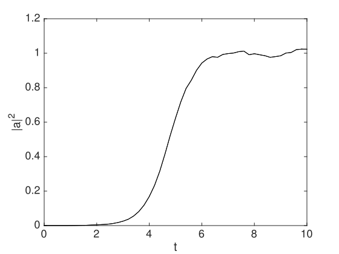
A well-known Ito-type stochastic equation is called the Black-Scholes equation, used to price financial options. It describes the fluctuations in a stock value: \begin {equation} da=\mu a\,dt+a\sigma \,dw, \end {equation} where \(\left \langle dw^{2}\right \rangle =dt\). Since the noise is multiplicative, the equation is different in Ito and Stratonovich forms of stochastic calculus.
The corresponding Stratonovich equation, as used in xSPDE for the standard default integration routine is: \begin {equation} \dot {a}=\left (\mu -\sigma ^{2}/2\right )a+a\sigma w(t). \end {equation}
An interactive xSPDE script in Matlab is given below with an output graph in Fig (4.3). This is for a startup with a volatile stock having \(\mu =0.1,\,\sigma =1\). The spiky behavior is typical of multiplicative noise, and also of the more risky stocks in the small capitalization portions of the stock market.
p.initial = @(v,p) 1;
p.deriv = @(a,w,p) -0.4*a+a*w;
xspde(p);
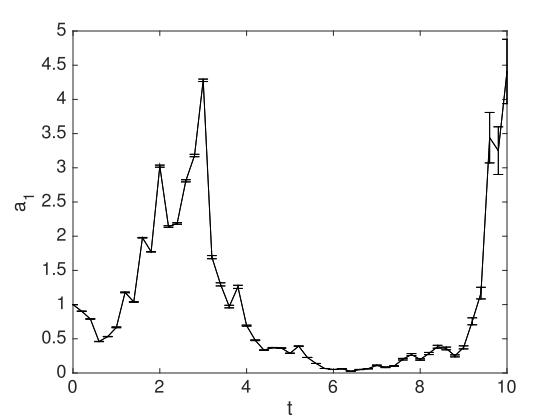
Here \(p.initial\) describes the initialization function. The first argument of \(@(v,p)\) is \(v\), an initial random variable with unit variance. The error-bars are estimates of step-size error. Errors can be reduced by using more time-steps.
To learn more, try the following:
Solve for a more mature stock having \(\mu =0.1,\,\sigma =0.1\).
This is a harder example, involving a full nonlinear quantum phase-space simulation. The method can also be used to investigate quantum non-equilibrium phase transitions, tunneling in open systems, quantum entanglement, Einstein-Podolsky-Rosen paradoxes, Bell violations, and many other problems treated in the literature[6, 4, 13].
A simple case is the nonlinear driven quantum subharmonic generator - for example, an opto-mechanical, superconducting or nonlinear optical medium in a driven cavity.
This has a Stratonovich equation, which is the form treated by the xSPDE software: \begin {align} \frac {da_{1}}{dt} & =-(c+\frac {1}{2})a_{1}+a_{2}\lambda \left [1-a_{1}^{2}\right ]+\sqrt {1-a_{1}^{2}}w_{1}\left (t\right )\nonumber \\ \frac {da_{2}}{dt} & =-(c+\frac {1}{2})a_{2}+a_{1}\lambda \left [1-a_{2}^{2}\right ]+\sqrt {1-a_{2}^{2}}w_{2}\left (t\right )\,, \end {align}
where \(w_{1},w_{2}\) are delta-correlated real Gaussian noises.
There is a bistable region, which leads to a discrete time symmetry breaking. The solution in the steady-state is \begin {equation} P=\left (1-a_{1}^{2}\right )^{c}\left (1-a_{2}^{2}\right )^{c}e^{2\lambda a_{1}a_{2}} \end {equation}
The integration manifold is the region of real \(a_{1}\), \(a_{2}\), such that \(a_{1}^{2}\le 1\) , \(a_{2}^{2}\le 1\). There are two physically possible metastable values of the amplitudes. The physically observed quantity is the amplitude and number: \begin {align} \left \langle \hat {a}\right \rangle & =\frac {1}{2}\left \langle a_{1}+a_{2}\right \rangle \nonumber \\ \left \langle \hat {n}\right \rangle & =\left \langle a_{1}a_{2}\right \rangle . \end {align}
Typical parameters that show bistable behavior are \(c=1\), \(\lambda =4\). To learn more, try the following:
Simulate the nonlinear oscillator by creating a file, \(Nonlinear.m\)
Can you observe quantum tunneling in the bistable regime?
Do you see transient Schrodinger ‘cat states’ with a negative n value?
Since tunneling is random, for real experimental comparisons, one would have to measure correlation functions and spectra. However, a tunneling event in a simulation indicates that it is likely in experiment too. These calculations require long time scales, \(\mathtt {p.ranges}\), to observe tunneling, and a large number of time steps per plotted time point, \(\mathtt {p.steps}\), to maintain accuracy in the quantum simulations.
This section describes how to simulate a PDE or SPDE, including choosing spectral or finite difference methods and specifying boundary conditions.
To solve for a single four-dimensional trajectory with three space dimensions, as in Eq \eqref{eq:Wiener_process-1} , just type in:
p.deriv = @(a,w,p) w;
xspde(p);
Here \(p.deriv\) defines the time derivative \(\dot {a}\) in the input parameter structure p, while \(w\) is a delta-correlated Gaussian noise generated internally. Apart from the dimensions, there are no other parameters, so default values are used. This produces the graph shown in Fig (5.1), which gives a single trajectory.
For more interesting problems than this, more parameters are needed, as explained next.
A stochastic partial differential equation or \(SPDE\) for a complex vector field is defined in both time \(t\) and space dimension(s) \(\mathbf {x}\). The total dimensions \(d\) includes both time and space. To solve a stochastic partial differential equation xSPDE involves a similar procedure to the case of the SDE, covered in section 4.
The numerical solutions require additional parameters to define the spatial grid, and to define the linear transformations in an interaction picture, if spectral methods are used. The SPDE input parameters extend those already introduced in (4.2.1). Some new and extended parameters are listed in the table below:
| Label | Type | Typical value | Description |
| dimensions | integer | \(2\) | Space-time dimensions |
| linear | function | @(p) p.Dx | Linear interaction picture function |
| ranges | real vector | [10,10,...] | Ranges in time and space |
| transforms{n} | integer vector | \([1,0,1,..]\) | Space-time transform switch |
| points | integer vector | [51,35,..] | Output lattice points in [t,x,y,z,..] |
| origins | real vector | [0,-5,..] | Space-time integration origin |
| boundaries{i} | integer array | \([0,0;0,0]\) | Boundary type per field index |
Setting \(dimensions>1\) defines an (S)PDE as opposed to an ordinary (S)DE. Here the cell index \(i\) indicates a field index, and the cell index \(n\) gives the observable output or graph index.
In the xSPDE implementation, the total space-time dimensions is unlimited, although, large space-time dimensions become memory-intensive and slow. There is a practical limit of about ten space-time dimensions with current digital computers, unless you have a very large, fast computer.
Stochastic variables in an SPDE are stored in a real or complex array, \(a(i,\mathbf {\ell },e)\). Here \(i\) is the internal field index, \(\mathbf {\ell }\) is a \(d-1\) dimensional spatial lattice index for d space-time dimensions, and \(e\) is the ensemble index. To specify the spatial lattice, one must define:
dimensions
The dimensionality in time and space. The default is an SDE: \(d=1\).
points
The number of integration points. The default is \(\mathbf {N}=[51,35,35..]\).
ranges
The integration ranges in each dimension. The default is \(\mathbf {R}=[10,10,10..]\).
origins
The origins of the space-time integration domains. By default, the origin is \(O\left (1\right )=0\) for the time coordinate and \(\mathbf {O}=-\mathbf {R}/2\) for the space coordinates (\(\mathbf {R}\) is the \(ranges\) variable) such that the spatial grid is symmetric around \(\mathbf {r}=0\).
Initial conditions are set at the initial time of \(t=O_{1}\) with a user-defined function so that: \begin {equation} a(O_{1})=initial(v,p) \end {equation} The initial function includes initial random fields \(v=\left [v^{x},v^{k}\right ]\). Their correlations are either delta correlated or spatially correlated. To allow this, the input parameter \(randoms\) is a vector such that: \(randoms(1)\) is the number of delta-correlated random fields, \(v^{x}\), and \(randoms(2)\) is the number of correlated random fields, \(v^{k}\). All random fields in the initial function, even if correlated using filters in momentum space, are transformed to position space before use. If there is no filtering, \(v^{x}\) and \(v^{k}\) have the same correlations.
As another very simple example, consider the SPDE
The system has one spatial dimension, or \(d=2\) space-time dimensions, one field and one noise variable. We suppose that the initial noise variance is Gaussian, with: \begin {equation} a(0,x)=10v(x). \end {equation} We want to consider \(10,000\) stochastic trajectories per sub-ensemble with\(10\) sub-ensembles. We will set the origin for \(x\) to \(0\). The variable \(a\) will be initialized as delta-correlated in space with a gaussian standard deviation on the lattice of \(\sigma =10/\sqrt {\Delta V}\). As our observable, we consider the second moment of \(a\).
This is simulated through the following xSPDE code:
p.name = ’simple SPDE’;
p.dimensions = 2;
p.ensembles = [10000,10];
p.origins = [0,0];
p.noises = 1;
p.initial = @(v,p) 10*v;
p.observe = @(a,~) a.^2;
p.olabels = ’<a^2>’;
p.deriv = @(a,w,p) -0.25*a + p.x .* w;
xspde(p);
With this input, Matlab produces two output graphs:
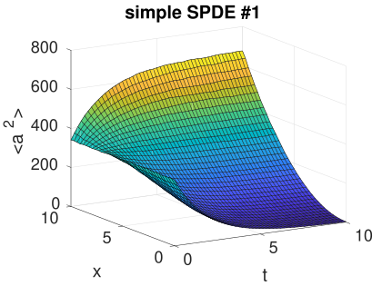 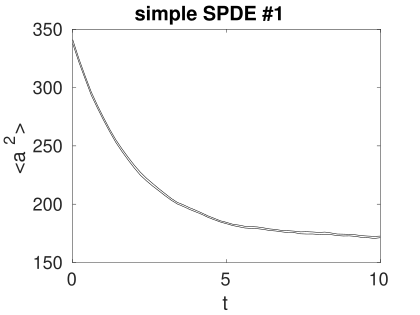
The second graph shows the time evolution for \(x\) at the mid-point, \(x=5\). The variances are larger than they would be in the SDE case, where one might expect an initial variance of \(\left \langle a^{2}(0)\right \rangle =100\). The reason for this is that the initial noise random and noise fields are replaced by a lattice with a variance of \(1/\Delta V\). In the default case, this causes an increase in the local noise.
In the functions \(deriv\), \(initial\) and \(observe\), the field and noise variables \(a\) and \(w\) now have extended dimensionality compared to the \(1\)-dimensional case, to index the transverse lattice. The indices are \(a\left (f,\mathbf {i},e\right )\), where the:
field
index \(f\) corresponds to the field index for \(a\) and the noise index for \(w\).
intermediate
indices \(\mathbf {i},\) which are absent in the \(1\)-dimensional case, correspond to the spatial grid and have the same structure. For example, in the case with dimensions = 3, indicating one time index and two spatial dimension, \(\mathbf {i}\) corresponds to the two space indices.
last
index \(e\) corresponds to the stochastic trajectory.
For storing space coordinates like \(p.x\), the first and last index are \(f=e=1\). Where Fourier transforms are used internally, the momentum arrays have zero momentum as the first index to follow standard discrete Fourier transform conventions. This is changed to a symmetric convention in all stored graphics data outputs.
As explained in section 3.9, the general equation solved can be written in differential form as
\begin {equation} \frac {\partial \mathbf {a}}{\partial t}=\mathbf {A}\left [\mathbf {a}\right ]+\underline {\mathbf {B}}\left [\mathbf {a}\right ]\cdot \mathbf {w}(t)+\underline {\mathbf {L}}\left [\mathbf {\nabla },\mathbf {a}\right ]\,. \end {equation}
The linear function \(L\) can be input either inside the derivative function using finite difference operators described below, or as a separate linear function, to allow for an interaction picture in which case: \begin {equation} \underline {\mathbf {L}}\left [\mathbf {\nabla },\mathbf {a}\right ]=\,\underline {\mathbf {L}}\left [\mathbf {\nabla }\right ]\mathbf {a}\,. \end {equation} This depends on momentum space coordinates, which involves Fourier transforms and means that no space dependence is allowed. Spectral methods in xSPDE are currently restricted to cases with linear derivative terms and periodic or zero boundary conditions. It is also possible to use finite differences, in which case the derivative terms are included as part of the derivative function deriv.
The usual FFT spectral methods require periodicity. The four other boundary methods can currently only be used with the default boundary values of zero, and with an interaction picture derivative that only has even powers of derivatives. Additional spectral methods will be included in a subsequent release: xSPDE4.
The field \(x\) is provided by the parameter structure, and corresponds to the variable \(x\) in Eq \eqref{eq:simple_spde_example}. All parameters are preceded by the parameter structure label. Likewise, for higher dimensional problems, the variables \(y\) and \(z\) exist. These are placeholders for \(r\{1\},r\{2\},r\{3\}\), so the spatial variables of even higher dimensional problems can be accessed through \(r\{n\}\).
Using a linear operator in an SPDE gives better accuracy, and allows use of the interaction picture. This is included automatically for all built-in xSPDE algorithms, provided the linear function is defined in the parameter structure. Variables \(p.D\{i\}\) (with placeholders \(p.Dx,p.Dy,p.Dz\) for the first 3 spatial dimensions) provide access to the derivative operator. Higher-order derivatives are found through potentiating \(p.Dx\) accordingly.
For example, the \(2\)-dimensional Laplacian operator \begin {equation} \nabla ^{2}=\frac {\partial ^{2}}{\partial x^{2}}+\frac {\partial ^{2}}{\partial y^{2}} \end {equation} corresponds to a linear differential operator specified as: \begin {equation} p.linear=@(p)\,\,\,p.Dx.^{2}+p.Dy^{2}; \end {equation} For a comprehensive list of variables accessible through the \(p\)-structure, refer to sec. 9.8.
There are functions available in xSPDE for spatial grid averages and integrals, to handle the spatial grid. These are Ave and Int, which are used to calculate observables for plotting. They operate in parallel over the lattice dimensions, by taking a vector or scalar quantity, for example a single field component, and returning an average or a space integral. In each case the first argument is the field, the second argument is a vector defining the type of operation, and the last argument is the parameter structure. If there are two arguments, the operation vector is replaced by its default value.
Integrals over the spatial grid allow calculation of global quantities. To take an integral over the spatial grid, use the xSPDE function Int with arguments (o, [dx, ] p).
This function takes a scalar or vector quantity o, and returns a trapezoidal space integral over selected dimensions with vector measure dx. If \(dx(j)>0\) an integral is taken over dimension j. Dimensions are labelled from j = 1,2,3 ... as in all xSPDE standards. Time integrals are ignored at present. Integrals are returned at all lattice locations. To integrate over an entire lattice, set dx = p.dx, otherwise set dx(j) = p.dx(j) for selected dimensions j.
If momentum-space integrals are needed, first use the transforms switch to make sure that the field is Fourier transformed before being averaged, and input dk instead of dx.
Spatial grid averages can be used to obtain stochastic results with reduced sampling errors if the overall grid is homogeneous. An average is carried out using the builtin xSPDE function Ave() with arguments (o, [av, ] p).
This takes a vector or scalar field or observable, defined on the lattice, and returns an average over the spatial lattice. The input is a field a or observable o, and an optional averaging switch av. If \(av(j)>0\), an average is taken over dimension j. Space dimensions are labelled from j = 2,3... as elsewhere. If the av vector is omitted, the average is taken over all space directions.
A famous partial differential equation is an exactly soluble equation for a soliton, the nonlinear Schrödinger equation (NLSE): \begin {equation} \frac {da}{dt}=\frac {i}{2}\left [\nabla ^{2}a-a\right ]+ia\left |a\right |^{2}. \end {equation}
Together with the initial condition that \(a(0,x)=sech(x)\), this has a soliton, an exact solution that doesn’t change in time:
The spatial integral is simply:
An xSPDE code that solves this is given below, together with code that compares the numerical solution with the exact solutions for the soliton and the integral:
p.dimensions = 2;
p.initial = @(v,p) sech(p.x);
p.deriv = @(a,~,p) 1i*a.*(conj(a).*a);
p.linear = @(p) 0.5*1i*(p.Dx.^2-1.0);
p.olabels = {’a(x)’,’\int a(x) dx’};
p.observe{2} = @(a,p) Int(a, p);
p.compare{1} = @(p) sech(p.x);
p.compare{2} = @(p) pi;
e = xspde(p);
Due to finite boundaries and discrete spatial lattice, the agreement is not perfect. The errors can be reduced by increasing the range of the integration domain and improving the resolution with more points.
As another example, consider the two-dimensional nonlinear stochastic equation, with periodic boundary conditions:
Using the interaction picture allows for the absorption of both the Laplacian and the first-order term by the p.linear parameter, which results in
p.linear = @(p) (p.Dx.^2+p.Dy.^2) + 1;
p.deriv = @(a,w,~) -a.^3 + w;
xspde(p);
With this input, Matlab produces two output graphs:
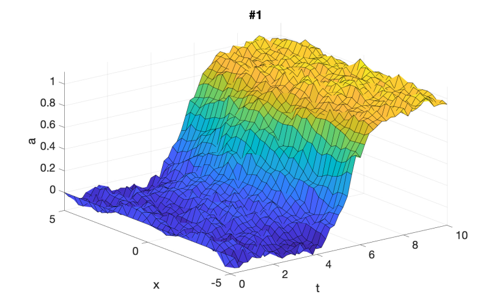 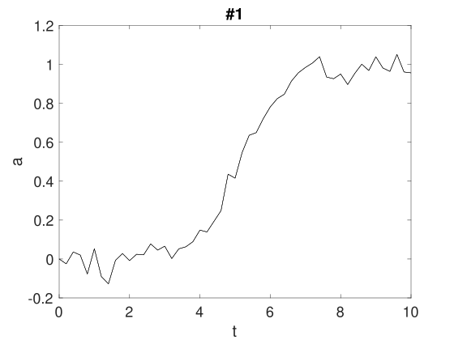
Instead of using the interaction picture, xSPDE also has finite difference methods for direct differentiation. These derivatives are obtained through function calls \(D1\)and \(D2\) respectively for first and second derivatives, which use a fixed grid spacing. As elsewhere, they can be replaced by user-written functions if preferred. Generally they require smaller steps in time than spectral methods, when used to define the derivative.
The code to take a first order spatial derivative with finite difference methods is carried out using the xSPDE function D1() with arguments (o, [dir, ] p).
This takes a scalar or vector o and returns a first derivative in an axis direction dir. Set dir = 2 for an x-derivative, dir = 3 for a y-derivative, and so on. Time derivatives are ignored at present. Derivatives are returned at all lattice locations.
If the direction is omitted, an x-derivative is returned. These derivatives can be used both in calculating propagation and in calculating observables. The boundary condition is set by the boundaries input. It can be made periodic, which is the default, or Neumann with zero derivative, or Dirichlet with zero field.
The code to take a second order spatial derivative with finite difference methods is carried out using the xSPDE D2 function with arguments (o, [dir, ] p).
This takes a scalar or vector o and returns the second derivative in axis direction dir. Set dir = 2 for an x-derivative, dir = 3 for a y-derivative and so on. All other properties are exactly the same as D1.
Without using the interaction picture, the stochastic equation of Eq \eqref{eq:Nonlinear-SPDE-example} is specified in xSPDE using finite differences as
p.steps = 50;
p.deriv = @(a,w,p) D2(a,2,p)+D2(a,3,p)+a - a.^3 + w/10;
xspde(p);
This gives the same result as with the linear propagator, although requiring smaller step-sizes for numerical stability, with an output graph shown in Fig (5.4). Note that the parameters and noises are slightly different!
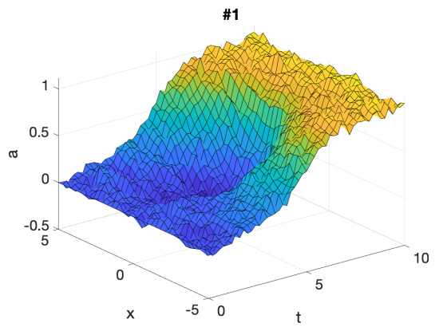 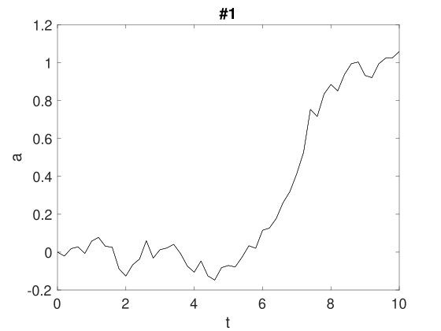
Transverse boundary conditions must be given for all partial differential equations. Common transverse boundary types are of three types: Neumann (specified derivative), periodic, or Dirichlet (specified field). These are obtained using \(boundaries\{d\}=-1,0,1\), which is specified for each space dimension \(d>1\), field index and boundary.
If boundaries are omitted for any dimension the default is \(0\), which gives periodic boundaries in that dimension for all field indices, and permits the use of Fourier transforms and an interaction picture as described above.
The value of \(boundaries\{d\}\) is a matrix whose column index \((i)\) is the field index, and whose row index (j) is given by \(j=1,2\) for the lower and upper boundary type respectively.
Spatial derivatives or other functions linking different spatial points can be specified either in the functionals \(\boldsymbol {A}\left [\mathbf {a},\mathbf {r}\right ]\), \(\underline {\mathbf {B}}\left [\mathbf {a},\mathbf {r}\right ]\) or else in the \(linear\) function, provided the derivative terms are linear functions of the fields. Use of the \(linear\) function allows an interaction picture algorithm, with increased efficiency. The \(linear\) function is currently only available with periodic boundary conditions.
The default boundary conditions are periodic. The implicit setting of this is that periodicity is enforced such that \(a\left (o_{i}-dx_{i}/2\right )=a\left (o_{i}+r_{i}+dx_{i}/2\right )\) , which is the usual discrete Fourier transform requirement.
Otherwise, the differential equation boundaries are specified at \(a\left (o_{i}\right )\), \(a\left (o_{i}+r_{i}\right )\), using the cell-array input \(boundaries\{d\}(i,j)\), which is defined per space dimension (\(d=2,3..\)), field index (\(i=1,2..\)) and boundary \(j=(1,2)\). Here \(d>1\) is the transverse dimension, not including time, which only has an initial condition.
In summary the available boundary types are:
Neumann:
For specified derivative boundaries, \(boundaries\{d\}(i,j)=-1\)
Periodic:
For periodic boundaries, \(boundaries\{d\}(i,j)=0\)
Dirichlet:
For specified field boundaries, \(boundaries\{d\}(i,j)=1\)
These are specified in a cell array: \(boundaries\{d\}(i,1)\) sets the lower boundary type in dimension d, for the i -th field component while \(boundaries\{d\}(i,2)\) gives the upper boundary type. Each space dimension, variable and boundary is set independently. In xSPDE, the equations are always initial value problems in time, so the time dimension boundary specification for \(d=1\) is not included.
Example: boundary types in a 2-dimensional PDE Suppose there are two fields, and we wish to set mixed boundaries in space, with Dirichlet in the past and Neumann in the future for the first field \(a(1,:)\), with the opposite combination in the second field component, \(a(2,:)\):
For non-vanishing, specified boundary conditions, the boundary function \(boundfun(a,d,p)\) is called. This returns the boundary values used for the fields or derivatives in a particular dimension \(d>1\) as an array of dimension \(b(\mathbf {j},e))\), where \(\mathbf {j}=i,\mathbf {k}\).
Here \(i=j_{1}\) is the field index, and \(\mathbf {k}\) is the space index, where \(j_{d}\) is the index of the dimension whose boundary values are specified. For this dimension, only two values are needed: \(j_{d}=1,2\) for the lower and upper boundary values, which could either be field values or their derivatives. An ensemble index \(e\) is also needed if the boundary values are stochastic.
Boundary values can be a function of both the fields (\(a\)) and internal variables like the current time (\(t\)). These may have stochastic initial values at \(t=0\) which are calculated only once. In such cases the boundary values must first be initialized, so the routine \(boundfun(a,d,p)\) is first internally initialized with time \(t<origin(1)\), and with random Gaussian values in the input field \(a\). These are delta-correlated in space, i.e., with the same definition as “inrandoms”. The xSDPE program stores the returned values \(b\) for the boundaries in an internal cell array, \(boundval\{d\}\), for later use if required.
The default boundary value is zero, set by the default boundary function \(xboundfun(a,d,p)\).
NOTE: Current xSPDE code requires finite-difference methods to be used with \(boundfun\). Spectral methods use the default boundary conditions.
Suppose there are two fields, and we wish to set boundary values.
We take boundary values as Dirichlet for \(x=0\) and Neumann for \(x=1\) in field variable 1, and Neumann for \(x=0\) and Dirichlet for \(x=1\) in field variable 2, that are different from the default values of \(a=0\), \(\partial _{x}a=0\), so that: \begin {align} a_{1}\left (x=0\right ) & =1,\nonumber \\ \partial _{x}a_{1}\left (x=1\right ) & =a_{1}\left (x=1\right ).\nonumber \\ \partial _{x}a_{2}\left (x=0\right ) & =-a_{2}\left (x=0\right )\nonumber \\ a_{2}\left (x=1\right ) & =-1. \end {align}
These are set in the following code:
p.boundaries{2} = [1,-1;-1,1];
...
function b = mybfun(a,d,p)
% b = mybfun(a,d,p) calculates boundary values
b(1,2,:) = a(1,end,:);
b(2,1,:) = -a(2,end,:);
b(1,1,:) = 1;
b(2,2,:) = -1;
end
A number of plots at equally spaced points in time can be generated through \(p.transverse\) (see section 10). For example, adding the line below creates 3 time-sliced plots at \(t=0,5,10\):
For graphical output, Fourier transforms involve a sum over the lattice points using a discrete Fourier transform at the lattice points \(x_{i}\), so that:
\begin {equation} \tilde {a}(\omega _{i},\mathbf {k}_{i})=\frac {dtd\mathbf {x}}{\left [2\pi \right ]^{d/2}}\sum _{j_{1}\ldots j_{d}}\exp \left [i\left (\omega _{i_{1}}t_{j_{1}}-\mathbf {k}_{\mathbf {i}}\cdot \mathbf {x}_{\mathbf {j}}\right )\right ]a(t_{j_{1}},\mathbf {x}_{\mathbf {j}})\, \end {equation} The momenta \(k_{i}\) have an interval of \begin {equation} dk_{i}=\frac {2\pi }{n_{i}dx_{i}} \end {equation} with \(k_{i}\) values given for even n by: \begin {equation} k_{i}=\left (1-\frac {n_{i}}{2}\right )dk_{i},\ldots \frac {n_{i}}{2}dk_{i} \end {equation} and for odd n by: \begin {equation} k_{i}=\frac {1-n_{i}}{2}dk_{i},\ldots \frac {n_{i}-1}{2}dk_{i} \end {equation}
Once Fourier transformed, the \(observe\) function can be used to take any further functions or combinations of Fourier transformed fields prior to averaging. Important points to keep in mind are as follows:
Fourier transforms are specified for the k-th observe function independently of all other functions, by specifying \(transforms\{k\}=\left [\ell _{1,}\ldots \ell _{d,}\right ]\).
Here \(\ell _{j}=0,1\) is a logical switch, set to to \(\ell _{j}=1\) if the \(j-th\) dimension requires a Fourier transform, and \(\ell _{j}=0\) if there is no Fourier transform.
The internal fields \(p.k\{1\},\ldots p.k\{d\}\) are available for use in making functions of momentum for use with observations.
In propagation calculations, the momentum lattice values start with \(k=0,\ldots \), following standard Matlab and FFT conventions.
For storing and graphing, momentum lattice values are reordered to start with \(k=-k_{max},\ldots \), following standard graphics and mathematical conventions.
Fourier transforms are available for use both on initial random values and on noise fields during time-evolution. This is controlled by the second element of \(randoms\) and \(noises\), respectively.
When \(randoms(1)>0\), an initial random field \(\mathbf {v}^{x}\) is generated with delta-correlations in \(x\)-space. When \(randoms(2)>0\), an initial random field \(\tilde {\mathbf {v}}^{k}\) is generated with delta-correlations in \(k\)-space. This can be filtered with a user-specified filter function to give \(\tilde {\mathbf {v}}^{kf}\), then inverse Fourier transformed to give \(v^{k}\). Both random fields are passed to the \(initial\) function as an extended vector \(\left [v^{x},v^{k}\right ]\), for field initialization in space.
There is a user specified filter function available, to modify random fields \(\tilde {v}^{k}\), that are delta-correlated in momentum space using a filter function, ’rfilter’ so that \(v_{i}^{kf}\left (\mathbf {k}\right )=f_{i}^{(r)}\left (\mathbf {v}^{k}\left (\mathbf {k}\right )\right )\), before being used. The corresponding correlations are:
Note that on a lattice, we replace the Dirac continuous delta-function by a discrete Kronecker delta function scaled by an inverse volume element either in space (\(\Delta V\)) or momentum (\(\Delta K\)) . The xSPDE Fourier transforms are given by a symmetric Fourier transform, so that if we inverse Fourier-transform the \(k-\)space inrandoms, without filtering, then: \begin {equation} v^{k}(\mathbf {x})=\frac {1}{\left [2\pi \right ]^{(d-1)/2}}\int e^{i\mathbf {k}\cdot \mathbf {x}}\tilde {v}^{k}(\mathbf {k})d\mathbf {k}\, \end {equation}
These have random initial values that are real and delta-correlated in space, so that: \begin {equation} \left \langle v^{x}\left (\mathbf {x}\right )v^{x}\left (\mathbf {x}'\right )\right \rangle =\delta \left (\mathbf {x}-\mathbf {x}'\right ). \end {equation} The corresponding noises in position space are correlated according to:
\begin {align} \left \langle v^{k}\left (\mathbf {x}\right )\left (v^{k}\left (\mathbf {x}'\right )\right )^{*}\right \rangle & =\frac {1}{\left [2\pi \right ]^{(d-1)}}\int e^{i(\mathbf {k}\cdot \mathbf {x}-\mathbf {k}'\cdot \mathbf {x}')}\left \langle \tilde {v}^{k}\left (\mathbf {k}\right )\tilde {v}^{k}\left (\mathbf {k}'\right )\right \rangle d\mathbf {k}d\mathbf {k}'\nonumber \\ & =\frac {1}{\left [2\pi \right ]^{(d-1)}}\int e^{i(\mathbf {x}-\mathbf {x}')\cdot \mathbf {k}}d\mathbf {k}\nonumber \\ & =\delta \left (\mathbf {x}-\mathbf {x}'\right ). \end {align}
Similarly, if we don’t conjugate the k-noise, then: \begin {equation} \left \langle v^{k}\left (\mathbf {x}\right )v^{k}\left (\mathbf {x}'\right )\right \rangle =\delta \left (\mathbf {x}+\mathbf {x}'\right ). \end {equation}
However, if we define \(\tilde {v}^{c}\left (\mathbf {k}\right )=\left [\tilde {v}_{1}^{k}\left (\mathbf {k}\right )+i\tilde {v}_{2}^{k}\left (\mathbf {k}\right )\right ]/\sqrt {2}\) , then we obtain complex noise that is only delta correlated when conjugated. \begin {align} \left \langle v^{c}\left (\mathbf {x}\right )\left (v^{c}\left (\mathbf {x}'\right )\right )^{*}\right \rangle & =\delta \left (\mathbf {x}-\mathbf {x}'\right )\nonumber \\ \left \langle v^{c}\left (\mathbf {x}\right )v^{c}\left (\mathbf {x}'\right )\right \rangle & =0. \end {align}
This is obtainable with the x-space noise as well, but the utility of the k-space noise is that it can be filtered to have nonlocal correlations in space if required.
During propagation in time, \(\mathbf {w}=\left [\mathbf {w}^{x},\mathbf {w}^{k}\right ]\) are real noise fields that are delta-correlated in space-time. They are calculated in an analogies way, except with an additional factor of \(1/\sqrt {dt}\) because they are delta correlated in time as well.There is a user specified scaling function available, to take random noises \(w^{k}\) in momentum space that are then scaled using a filter function, ’nfilter’ so that \(w_{i}^{kf}\left (\mathbf {k}\right )=f_{i}^{(n)}\left (\mathbf {w}^{k}\left (\mathbf {k}\right )\right )\), before being used:
Including two space dimensions, or space-time dimensions of \(d=3\), an example of a SPDE is the stochastic Ginzburg-Landau equation. This describes symmetry breaking. The system develops a spontaneous phase which varies spatially as well. The model is used to describe lasers, magnetism, superconductivity, superfluidity and particle physics: \begin {equation} \dot {a}=\left (1-\left |a\right |^{2}\right )a+bw(t)+c\nabla ^{2}a \end {equation} where \begin {equation} \left \langle w(x)w^{*}(x')\right \rangle =2\delta \left (t-t'\right )\delta \left (x-x'\right ). \end {equation}
The following new ideas are introduced for this problem:
\(\mathtt {dimensions}\) is the space-time dimension.
The ’dot’ notation used for parallel operations over lattices.
\(\mathtt {linear}\) is the linear operator - a Laplacian in these cases.
\(\mathtt {images}\) produces movie-style images at discrete time slices.
\(\mathtt {Dx}\) indicates a derivative operation, \(\partial /\partial x\).
\(-5<x<5\) is the default xSPDE coordinate range in space.
Solve the stochastic G-L equation for \(b=0.001\) and \(c=0.01i\).
Change to a real diffusion so that \(c=0.1\).
In the first case, you should get the output graphed in Fig (5.5) .
p.name = ’Extended laser gain equation’;
p.noises = 2;
p.dimensions = 3;
p.steps = 10;
p.linear = @(p) 1i*0.01*(p.Dx.^2+p.Dy.^2);
p.observe = @(a,~) abs(a).^2;
p.images = 6;
p.olabels = ’|a|^2’;
p.deriv = @(a,w,~) (1-abs(a(1,:).^2)).*a(1,:)+...
0.001*(w(1,:)+1i*w(2,:));
xspde(p)
Here the notation \(a(1,:)\) means that the operation is repeated over all values of the subsequent indices, which are the two spatial lattice indices in this case.
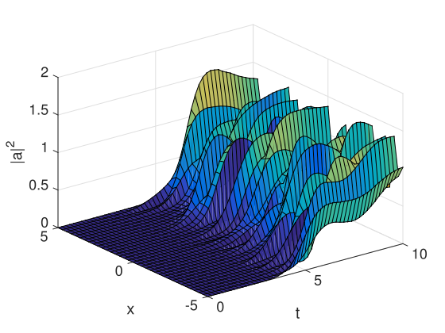
The famous nonlinear Schrödinger equation (NLSE) is: \begin {equation} \frac {da}{dt}=\frac {i}{2}\left [\nabla ^{2}a-a\right ]+ia\left |a\right |^{2}. \end {equation}
Together with the initial condition that \(a(0,x)=sech(x)\), this has a soliton, an exact solution that doesn’t change in time:
The Fourier transform at \(k=0\) is simply:
Solve the NLSE for a soliton using a function instead of a script, then include an additive complex noise of \(0.01(w_{1}+iw_{2}\)) to the differential equation, and plot again with an average over \(1000\) samples.
The next example is growth of thermal noise of a two-component complex field in a plane, given by the equation \begin {equation} \frac {d\mathbf {a}}{dt}=\frac {i}{2}\nabla ^{2}\mathbf {a}+\mathbf {w}(t,x). \end {equation} where \(\mathbf {\zeta }\) is a delta-correlated complex noise vector field: \begin {equation} w_{j}(t,\mathbf {x})=\left [w_{j}^{re}(t,\mathbf {x})+i\zeta _{j}^{im}(t,\mathbf {x})\right ]/\sqrt {2}, \end {equation} with the initial condition that the initial noise is delta-correlated in position space \begin {equation} a(0,\mathbf {x})=\mathbf {\zeta }^{(in)}(\mathbf {x}) \end {equation} where: \begin {equation} \mathbf {\zeta }^{(in)}(\mathbf {x})=\left [\mathbf {\zeta }^{re(in)}(\mathbf {x})+i\mathbf {\zeta }^{im(in)}(\mathbf {x})\right ]/\sqrt {2} \end {equation}
This has an exact solution for the noise intensity in either ordinary space or momentum space:
Here, the noise is delta-correlated, and \(dV\), \(dV_{k}\) are the cartesian space and momentum space lattice cell volumes, respectively. Suppose that \(n=n_{x}n_{y}\) is the total number of spatial points, and there are \(n_{x(y)}\) points in the x(y)-direction, so then:
In the simulations, two planar noise fields are propagated, one using delta-correlated noise, the other with noise transformed to momentum space to allow filtering. This allows use of finite correlation lengths when needed, by including a frequency filter function that is used to multiply the noise in Fourier-space. The Fourier-space noise variance is the square of the filter function.
The first noise index, \(p.noises(1)\), indicates how many noise fields are generated, while \(p.noises(2)\) indicates how many of these are spatially correlated, via Fourier transform, filter and inverse Fourier transform. These appear to the user as additional noises, so the total is \(p.noises(1)+p.noises(2)\). The filtered noises have a finite correlation length. They are correlated with the first \(p.noises(1)\) x-space noises they are generated from, as this can be useful.
Solve the planar noise growth equation
p.name = ’Planar noise growth’;
p.dimensions = 3;
p.fields = 2;
p.ranges = [1,5,5];
p.steps = 2;
p.noises = [2,2];
p.ensembles = [10,4,4];
p.initial = @Initial;
p.deriv = @Da;
p.linear = @Linear;
p.observe = @(a,p) a(1,:).*conj(a(1,:));
p.olabels = ’<|a_1(x)|^2>’;
p.compare = @(p) [1+p.t]/p.dv;
p.images = 4;
e = xspde(p);
end
function a0 = Initial(v,p)
a0(1,:) = (v(1,:)+1i*v(2,:))/sqrt(2);
a0(2,:) = (v(3,:)+1i*v(4,:))/sqrt(2);
end
function da = Da(a,w,p)
da(1,:) = (w(1,:)+1i*w(2,:))/sqrt(2);
da(2,:) = (w(3,:)+1i*w(4,:))/sqrt(2);
end
function L = Linear(p)
lap = p.Dx.^2+p.Dy.^2;
L(1,:) = 1i*0.5*lap(:);
L(2,:) = 1i*0.5*lap(:);
end
Add a decay rate of \(-a\) to the differential equation, then plot again
Add growth and nonlinear saturation terms
The next example is a complex Gross-Pitaevskii (GP) equation in two dimensions, \begin {equation} \frac {da}{dt}=\frac {i}{2}\nabla ^{2}a-ia(V(r)-i\kappa (r)+\left |a\right |^{2})+\epsilon \eta \label {eq:Stochastic GPE} \end {equation} where \(\eta \) is a correlated complex noise vector field: \begin {equation} \eta (t,\mathbf {x})=w_{1}(t,\mathbf {x})+iw_{2}(t,\mathbf {x}), \end {equation} with the initial condition that the initial random field and the noise are both filtered in momentum space \begin {equation} a(0,\mathbf {x})=a_{0}(\mathbf {x})+\epsilon \zeta ^{(in)}(\mathbf {x}) \end {equation} where: \begin {equation} \zeta ^{(in)}(\mathbf {x})=v_{1}(\mathbf {x})+iv_{2}(\mathbf {x}) \end {equation}
We add a Gaussian filter in momentum space for both the initial random field and noise so that, if \(\tilde {w}\left (\mathbf {k}\right )\) is a delta-correlated noise in momentum space: \begin {align} w\left (\mathbf {k}\right ) & =\tilde {w}\left (\mathbf {k}\right )\exp \left (-\left |\mathbf {k}\right |^{2}\right )\nonumber \\ v\left (\mathbf {k}\right ) & =\tilde {v}\left (\mathbf {k}\right )\exp \left (-\left |\mathbf {k}\right |^{2}\right ) \end {align}
This allows use of finite correlation lengths when needed, by including a frequency filter function that is used to multiply the noise in Fourier-space. The Fourier-space noise variance is the square of the filter function.
The first noise index, \(p.noises(1)\), indicates how many noise fields are generated that are delta-correlated in \(x\), while \(p.noises(2)\) indicates how many of these are spatially correlated, via Fourier transform, filter and inverse Fourier transform. These appear to the user as additional noises, so the total is \(p.noises(1)+p.noises(2)\). The filtered noises have a finite correlation length.
Solve the stochastic GP equation \eqref{eq:Stochastic GPE}, with a noise coefficient of \(b=0.1\), \(V=0.01\left |\mathbf {x}\right |^{2},\) \(\kappa =0.001\left |\mathbf {x}\right |^{4}\), and a stored output data file.
p.name = ’GPE’;
p.dimensions = 3;
p.points = [101,64,64];
p.ranges = [1,20,20];
p.noises = [0,2];
p.rfilter = @(w,p) w.*exp(-p.kx.^2-p.ky.^2);
p.nfilter = @(v,p) v.*exp(-p.kx.^2-p.ky.^2);
b = @(xi) .1*(xi(1,:,:)+1i*xi(2,:,:));
p.initial = @(v,p) (p.x+1i*p.y)./(1+10*(p.x.^2 + p.y.^2))+b(v);
V = @(p) 0.01*(p.x.^2 + p.y.^2)-0.001*1i*(p.x.^2 + p.y.^2).^2;
p.deriv = @(a,w,p) -1i*a.*(V(p)+conj(a).*a)+b(w);
p.linear = @(p) 0.5*1i*(p.Dx.^2+p.Dy.^2);
p.observe{1} = @(a,p) a.*conj(a);
p.images = {2};
p.imagetype = {2};
p.olabels = {’|a|^2’};
p.file = ’GPE.mat’;
e = xsim(p);
xgraph(p.file,p);
end
The next example is the characteristic equation for a traveling wave at constant velocity. It is included to illustrate what happens at periodic boundaries, when Fourier-transform methods are used for propagation. There are a number of methods known to prevent this effect, including addition of absorbers - called apodization - at the boundaries. The equation is: \begin {equation} \frac {da}{dt}+\frac {da}{dx}=0. \end {equation}
Together with the initial condition that \(a(0,x)=sech(2x+5)\), this has an exact solution that propagates at a constant velocity:
The time evolution at \(x=0\) is simply:
Solve the characteristic equation given above, noting the effects of periodic boundaries.
p.name = ’Characteristic’;
p.dimensions = 2;
p.initial = @(v,p) sech(2.*(p.x+2.5));
p.deriv = @(a,z,p) 0*a;
p.linear = @(p) -p.Dx;
p.olabels = {’a_1(x)’};
p.compare = @(p) sech(2.*(p.t-2.5));
e = xspde(p);
end
Recalculate with the opposite velocity, and a new exact solution.
A random potential prevents normal wave-packet spreading in quantum-mechanics. This is Anderson localization: a famous property of quantum mechanics in a random potential. A typical experimental method is to confine an ultra-cold Bose-Einstein condensate (BEC) in a trap, then release the BEC in a random external potential produced by a laser. The expansion rate of the BEC is reduced by the Anderson localization due to the random potential. Physically, the observable quantity is the particle density \(n=\left |\psi \right |^{2}\).
This can be treated either using a Schrodinger equation with a random potential, at low density, or using the Gross-Pitaevskii (GP) equation to include atom-atom interactions at the mean field level. In this example of a problem where strong localization occurs, the general equations are:
\begin {equation} \frac {\partial \psi }{\partial t}=\frac {1}{i\hbar }\left [-\frac {\hbar ^{2}}{2m}\nabla ^{2}+V\left (\mathbf {r}\right )+g\left |\psi \right |^{2}\right ]\psi . \end {equation}
In calculations, it is best to use a dimensionless form by rescaling coordinates and fields. A simple way to simulate this with xSPDE is to treat \(\psi \) as a scaled field \(a(1),\) and to assume the random potential field \(V\left (\mathbf {r}\right )\) as caused by interactions with second random field \(\left |a(2)\right |^{2}\). This has the advantage that it is similar to the actual experiment and allows one to treat time-dependent potentials as well, if desired.
With the rescaling, this simplifies to: \begin {equation} \frac {\partial a_{1}}{\partial \tau }=i\left [\frac {\partial }{\partial \zeta ^{2}}^{2}-\left |a_{2}\right |^{2}-\left |a_{1}\right |^{2}\right ]a_{1}. \end {equation}
A convenient initial condition is to use:
Solve Schrodinger’s equation without a random potential, to observe expansion.
Include a random potential \(v\), to observe localization.
Experiment with nonlinear terms and higher dimensions.
Note that the GP equation is a mean field approximation; this is still not a full solution of the many-body problem! Also, the experiments are somewhat more complicated than this, and actually observe the momentum distribution.
This section describes how to use xSPDE to run in a batch mode, as well as details of data storage and methods for graphing scanned parameters.
An xSPDE session can either run simulations interactively, described in section 4, or else using a function file called a project file. In either case, the Matlab path must include the xSPDE folder. For generating graphs automatically, the script input or project function should end with the combined function xspde.
Alternatively, it can be useful to divide xSPDE into its simulation function, xSIM, and its graphics function, xGRAPH, to allow graphs to be made at a later time from the simulation. In this case the function \(xsim\) runs the simulation, and \(xgraph\) makes the graphs. The two-stage option is better for running batch jobs which you can graph at a later time.
To create a data file, you must enter the filename when running the simulation, using the \(p.file=filename\) input. A typical xSPDE project function of this type is as follows:
p.[label1] = [parameter1];
p.[label2] = ...;
p.file = ’[my file].mat’
[e,p] = xsim(p);
ex = xgraph(p.file);
end
After preparing a project file using the editor, click on the Run arrow above the editor window.
A batch job workflow is as follows:
Create the metadata \(p\), with a file name, \(p.file\).
Change the Matlab directory path to your preferred directory.
Run the simulation with [e,p] = xsim(p), or just xsim(p).
Run xgraph(p.file), and the data will be graphed.
Alternatively, xgraph(p.file,p) allows you to change the inputs in the structure \(p\).
Graph outputs can be stored using the saveeps and/or savefig options
You can use either Matlab (.mat) or standard HDF5 (.h5) file-types for data storage. If raw data is generated it will be stored too, but the files can be large. For graphics files the options are Matlab (.fig) or encapsulated postscript (.eps) files.
The following table show how xSPDE output data is stored, which helps customize and extend the code. There are several different types of arrays used. The observed averages are generated internally from the observe functions, p.observe. These are then modified by user functions p.function, and exported as graphics data.
These are as follows:
| Label | Indices | Description |
| av | \(\{n\}(\ell ,\mathbf {j})\) | Observed averages |
| d | \(\{s\}\{n\}(\ell ,\mathbf {j},c)\) | Graph data |
Here:
\(s\) is the sequence index
\(n\) is the graph index
\(\ell \) is the graphics line index
\(j_{1}\) is the time index
\(\mathbf {j}=j_{1},j_{2},\dots j_{d}\) is the d-dimensional space-time index
\(c\) is the check index
There are multiple uses for the check index, c. The index values are defined as follows:
\(c=1\)
for the average of the n-th output function
\(c=2\)
for the time-step error,
\(c=3\)
for the sampling error.
\(c=4\)
for (optional) comparisons
\(c=5\)
for (optional) systematic comparison errors
\(c=6\)
for (optional) statistical comparison errors
Since xSIM is a function that can be called, plots of results against simulation parameters are possible. This requires repeated calls to xSIM with different parameter values, together with data storage in an xGRAPH compatible form, and a call to xGRAPH. If different random seeds are required, the seed needs to be reset in each call. The relevant axes points plotted, labels and the values of scanned parameters also need to be input.
The simulation function xSIM uses the last data array index, \(c\), to store the data values and up to two corresponding errors. This takes up three index values. A value of \(c=4\) is used to store comparison data, and its errors if there are any in \(c=5,6\). This can be used for exact results, approximations, or experimental data.
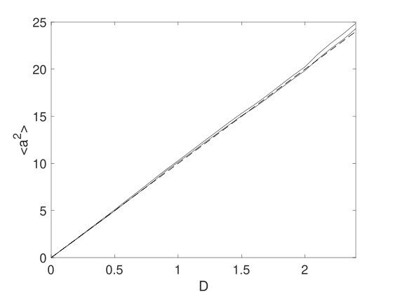
As an example, consider the simplest possible stochastic equation, with a scanned diffusion: \begin {equation} \dot {a}=Bw(t)\,. \end {equation}
The equation is integrated over the interval \(t=0:10\), with \(a=0\) initially, using \(10^{4}\) trajectories to give an expected error of around \(\pm 1\%\). The variance of \(a\) at \(t=10\) is plotted as a function of \(D=B^{2}\), then compared to an exact value. The result is in Fig (6.1). The corresponding code is given as well.
p.name = ’Wiener process’;
p.ensembles = [1000,10];
p.points = 12;
p.deriv = @(a,z,p) z*p.B;
p.observe = @(a,p) a.^2;
p.olabels = {’<a^2>’};
p.glabels{1} = {’D’};
scanpoints = 25;
data{1}{1} = zeros(1,scanpoints,4);
for j = 1:scanpoints
p.seed = j;
p.B = sqrt((j-1)*0.1);
[e,data1,input,~] = xsim(p);
data{1}{1}(1,j,1:3) = data1{1}{1}(1,p.points,:);
xk{1}{1}(j) = p.B^2;
D(j) = p.B^2;
end
data{1}{1}(1,:,4) = input.ranges(1)*D(:);
input.xk = xk;
input.axes{1}{1} = 1:scanpoints;
xgraph(data,input);
end
Here \(p.deriv\) defines the time derivative function \(\dot {a}\), with \(w\) being the delta-correlated Gaussian noise that is generated internally.
To get started on more complex programs, we next simulate the Kubo oscillator, which is an oscillator with a random frequency: \begin {equation} \dot {a}=iaw. \end {equation}
Simulate the Kubo oscillator using a file, \(Kubo.m\), with two ensemble levels to allow sampling error estimates. The error vector \(error\) gives the total time-step error plus the sampling error.
Increase the first ensemble size to check how it modifies the sampling errors.
p.name = ’Kubo oscillator’;
p.ensembles = [400,16];
p.initial = @(v,p) 1;
p.deriv = @(a,w,~) 1i*a.*w;
p.olabels = {’<a_1>’};
p.file = ’kubo.mat’;
[error,~,~,~] = xsim(p);
xgraph(p.file);
end
This function generates a data file, kubo.mat. If you run this twice without deleting the earlier file, you will get a warning and the old file will be moved to a backup file-name, kubo_1.mat, to protect the earlier data. Note that xGRAPH will graph the data in the most recent file saved.
You can also include modified graphics parameters as a second input when running xGRAPH, just in case the first graphs you generate need further changes.
Free diffraction and absorption of a Gaussian wave-function in \(d-1=s\) space dimensions, is given by the partial differential equation (PDE): \begin {equation} \frac {da}{dt}=-\frac {\gamma }{2}a+\frac {i}{2}D\nabla ^{2}a. \end {equation}
The corresponding stochastic partial differential equation (SPDE) includes additional noise, so that:
\begin {equation} \frac {da}{dt}=-\frac {\gamma }{2}a+\frac {i}{2}D\nabla ^{2}a+bw(t,x). \end {equation}
The xSPDE spectral definition in space is: \begin {equation} \tilde {a}(t,\mathbf {k})=\frac {1}{\left [2\pi \right ]^{s/2}}\int e^{i\mathbf {k}\cdot \mathbf {x}}a(t,\mathbf {x})d\mathbf {x}\,. \end {equation}
Together with the initial condition that \(a(0,x)=exp(-\left |\mathbf {x}\right |^{2}/2)\), this has an exact solution for the diffracted intensity with \(b=0\), in either ordinary space or momentum space:
Simulate Gaussian diffraction in three dimensions using an xSPDE function
Check your results against the exact solution
The example below stores data in a standard HDF5 file.
p.dimensions = 4;
p.initial = @(v,p) exp(-0.5*(p.x.^2+p.y.^2+p.z.^2));
p.linear = @(p) 1i*0.05*(p.Dx.^2+p.Dy.^2+p.Dz.^2);
p.observe = @(a,p) a.*conj(a);
p.olabels = ’|a(x)|^2’;
p.file = ’Gaussian.h5’;
p.images = 4;
e = xsim(p);
xgraph(p.file);
end
Add an additive complex noise of \(0.01(w_{1}+iw_{2}\)) to the Gaussian differential equation, then replot with an average over \(100\) samples.
Work out the exact solution and repeat the comparisons.
Note that for this, you’ll need to add: \(p.deriv=@(a,w,p)\,\,..+0.01*(w(1,:)+i*w(2,:))\)
When first using xSPDE, it is a good idea to run the batch test script, Batchtest.
Batchtest uses the Matlab parallel toolbox installation. If you have no license for this, omit the third ensemble setting.
To create a project file, it is often easiest to start with an existing example function using a similar equation: see the xAMPLES folder.
Graphics parameters can be included in the xSIM inputs to modify graphs.
Comparison functions can be included if you want to compare with analytic results.
This section describes the general background to the choices of algorithms available, and how to add custom numerical algorithms if required.
Stochastic, partial and ordinary differential equations are central to numerical mathematics.
Ordinary differential equations have been known in some form ever since calculus
was invented. There are a truly extraordinary number of algorithms used to solve
these equations. One program cannot possibly provide all of them. This section
provides an overview of the included algorithms, for the more advanced and expert
user.
xSPDE has six built-in choices of algorithm, with defaults. All built-in methods have an
interaction picture and can be used with any space dimension, including \(dimensions=1\), which is an ordinary
stochastic equation. All can be used with stochastic or with non-stochastic equations, and with
order extrapolation.
For stochastic equations, the Euler method requires an Ito form of stochastic equation, the
implicit Euler method requires an implicit Ito form, while the others should be used with the
Stratonovich form of calculus. Each uses the interaction picture to take care of exactly soluble
linear terms.
The standard xSIM algorithms given below are available for ODEs, PDEs, SDEs and SPDEs. More advanced algorithms for specialized cases are described in section 7.
For stochastic differential equations, which are non-differentiable, the usual rules of calculus do not apply because stochastic noise is non-differentiable. It has fluctuations proportional to \(1/\sqrt {dtdV}\), for noise defined on a lattice with temporal cell-size \(dt\) and spatial cell-size \(dV\). Hence, the usual differentiability and smoothness properties required to give high-order convergence for standard Runge-Kutta methods are simply not present. Instead, xSPDE has a built-in extrapolation to zero step-size for high-order stochastic convergence.
Many more complex higher order algorithms for stochastic integration exist but are not included in the current xSPDE distribution, and users are encouraged to contribute their favorite methods.
We note here that there are multiple error sources possible. SDE/SPDE errors are often dominated by the sampling error, not discretization. In addition, all convergence theorems only apply to the limit of zero step-size. One may be very far from this regime in a given practical calculation. Analytic error estimates also have prefactors which are hard to calculate. However, xSPDE can numerically estimate both the discretization and sampling error for any given average observable.
The general equation treated is given in differential form as \begin {equation} \begin {split}\frac {\partial \boldsymbol {a}}{\partial t}=\boldsymbol {A}\left [\boldsymbol {\nabla },\boldsymbol {a},t\right ]+\underline {\mathbf {B}}\left [\boldsymbol {\nabla },\boldsymbol {a},t\right ]\cdot \boldsymbol {\zeta }(t)+\underline {\mathbf {L}}\left [\boldsymbol {\nabla }\right ]\cdot \boldsymbol {a}.\end {split} \label {eq:Standard xspde SDE} \end {equation} It is convenient for the purposes of describing interaction picture methods, to introduce an abbreviated notation as: \begin {equation} \begin {split}\begin {aligned}\mathcal {D}\left [\mathbf {a},t\right ]=\boldsymbol {A}\left [\boldsymbol {a},t\right ]+\underline {\mathbf {B}}\left [\boldsymbol {a},t\right ]\cdot \boldsymbol {\zeta }(t).\end {aligned} \end {split} \end {equation} Hence, we can rewrite the differential equation in the form: \begin {equation} \begin {split}\frac {\partial \boldsymbol {a}}{\partial t}=\mathcal {D}\left [\mathbf {a},t\right ]+\underline {\mathbf {L}}\left [\boldsymbol {\nabla }\right ]\cdot \boldsymbol {a}.\end {split} \end {equation} Next, we define a linear propagator. This is given formally by: \begin {equation} \begin {split}\mathcal {P}\left (\Delta t\right )=\exp \left (\Delta t\underline {\mathbf {L}}\left [\boldsymbol {\nabla }\right ]\right )\end {split} . \end {equation} Typically, but not necessarily, this is evaluated in Fourier space, where it should be just a diagonal term in the momentum vector conjugate to the transverse space coordinate. It will then involve a Fourier transform, multiplication by an appropriate function of the momentum, and then an inverse Fourier transform afterwards. For simplicity, the stochastic noise is assumed constant throughout the interval \(dt\). The reader is referred to the literature for more details.
It is simple to add your own algorithm if you prefer a different one. Note that if they use an interaction picture, then ipsteps must be given explicitly to specify the interaction picture duration.
The standard methods are listed below. All of these can be used with any equation: ODE, SDE, PDE or SPDE, either with or without a linear interaction picture term.
This is an explicit Ito-Euler method using an interaction picture. While traditional, it is not generally recommended. If it is used, very small step-sizes will generally be necessary to reduce errors to a usable level. This is because it is is only convergent to first order deterministically and tends to have large errors.
It is designed for use with an Ito form of stochastic equation. It requires one IP transform per step (\(p.ipsteps=1\)). Starting from time \(t=t_{n}\), to get the next time point at \(t=t_{n+1}=t_{n}+\Delta t\), one calculates: \begin {equation} \begin {split}\begin {aligned}\Delta \mathbf {a}_{n} & =\Delta t\mathcal {D}\left [\mathbf {a}_{n},t_{n}\right ]\\ \mathbf {a}_{n+1} & =\mathcal {P}\left (\Delta t\right )\cdot \left [\mathbf {a}_{n}+\Delta \mathbf {a}_{n}\right ] \end {aligned} \end {split} \end {equation}
This is a fully implicit Ito-Euler method using an interaction picture. It is more robust, though slower, than the explicit form. If it is used, very small step-sizes will generally be necessary to reduce errors to a usable level.
This is because it is is only convergent to first order, and therefore tends to have large errors. It is designed for use with an implicit Ito form of stochastic equation. Note that this implies double the usual Stratonovich correction!
It requires one IP transform per step (\(p.ipsteps=1\)). Starting from time \(t=t_{n}\), to get the next time point at \(t=t_{n+1}=t_{n}+\Delta t\), one calculates, using iteration to get the implicit result of the next time-point:
\begin {equation} \begin {split}\begin {aligned}\bar {\mathbf {a}}^{(0)} & =\mathcal {P}\left (\Delta t\right )\cdot \left [\mathbf {a}_{n}\right ]\\ \bar {\mathbf {a}}^{(i)} & =\bar {\mathbf {a}}^{(0)}+\Delta t\mathcal {D}\left [\bar {\mathbf {a}}^{(i-1)},t_{n+1}\right ]\\ \mathbf {a}_{n+1} & =\bar {\mathbf {a}}^{(iter)} \end {aligned} \end {split} \end {equation} \begin {equation} \begin {split}\begin {aligned}\tilde {\mathbf {a}}_{n} & =\mathcal {P}\left (\Delta t\right )\cdot \left [\mathbf {a}_{n}\right ]\\ \Delta \mathbf {a}_{n} & =\Delta t\mathcal {D}\left [\tilde {\mathbf {a}}_{n}+\Delta \mathbf {a}_{n},t_{n}\right ]\\ \mathbf {a}_{n+1} & =\tilde {\mathbf {a}}_{n}+\Delta \mathbf {a}_{n} \end {aligned} \end {split} \end {equation}
This is a semi-implicit midpoint method using an interaction picture. It gives good results for stochastic and stochastic partial differential equations. It is convergent to second order in time for deterministic equations and for stochastic equations with commuting noise. It is strongly convergent and robust. It requires two half-length IP transforms per step (\(p.ipsteps=2\)).
To get the next time point, one calculates a midpoint derivative iteratively at time to get the next time point at \(t=t_{n+1/2}=t_{n}+\Delta t/2\), to give an estimated midpoint field \(\bar {\mathbf {a}}^{(i)}\), usually with four iterations. The number of iterations can be changed: \begin {equation} \begin {split}\begin {aligned}\bar {\mathbf {a}}^{(0)} & =\mathcal {P}\left (\frac {\Delta t}{2}\right )\cdot \left [\mathbf {a}_{n}\right ]\\ \bar {\mathbf {a}}^{(i)} & =\bar {\mathbf {a}}^{(0)}+\frac {\Delta t}{2}\mathcal {D}\left [\bar {\mathbf {a}}^{(i-1)},t_{n+1/2}\right ]\\ \mathbf {a}_{n+1} & =\mathcal {P}\left (\frac {\Delta t}{2}\right )\cdot \left [2\bar {\mathbf {a}}^{(iter)}-\bar {\mathbf {a}}^{(0)}\right ] \end {aligned} \end {split} \end {equation}
This is the default method for stochastic cases.
This is an implicit midpoint method using an interaction picture, together with an adaptive technique for integrating highly nonlinear equations. At low amplitudes it is identical to the standard midpoint method. For amplitudes \(|a_{i}|^{2}\) above a critical value, \(r.adapt\), the amplitude is inverted and propagated using the differential equation for its inverse.
Initially a switch \(p\) is set to \(1\) for low amplitudes, and \(-1\) for high amplitudes. To get the next time point, one calculates a midpoint derivative iteratively at time to get the next time point at \(t=t_{n+1/2}=t_{n}+\Delta t/2\), to give an estimated midpoint field \(\bar {\mathbf {a}}^{(i)}\), as above, but with the derivative modified to give the derivative of \(a_{i}^{p}\): \begin {equation} \begin {split}\begin {aligned}\bar {\mathbf {a}}^{(0)} & =\mathcal {P}\left (\frac {\Delta t}{2}\right )\cdot \left [\mathbf {a}_{n}\right ]\\ \tilde {\mathbf {a}}^{(0)} & =\mathbf {a}_{n}^{p}\\ \tilde {\mathbf {a}}^{(i)} & =\tilde {\mathbf {a}}^{(0)}+\frac {\Delta t}{2}p\left [\tilde {\mathbf {a}}^{(i-1)}\right ]{}^{1-p}\left (\mathcal {D}\left [[\tilde {\mathbf {a}}^{(i-1)}]^{p},t_{n+1/2}\right ]\right )\\ \mathbf {a}_{n+1} & =\mathcal {P}\left (\frac {\Delta t}{2}\right )\cdot \left [2\tilde {\mathbf {a}}^{(iter)}-\tilde {\mathbf {a}}^{(0)}\right ]^{p} \end {aligned} \end {split} \end {equation}
This is a second order Runge-Kutta method using an interaction picture. It is convergent to second order in time for non-stochastic equations, and for stochastic equations with additive noise, but otherwise it is first order. It often has higher errors than midpoint methods. It requires two IP transforms per step, but each is a full time-step long (\(p.ipsteps=1\)).
To get the next time point, one calculates: \begin {equation} \begin {split}\begin {aligned}\bar {\mathbf {a}} & =\mathcal {P}\left (\Delta t\right )\cdot \left [\mathbf {a}_{n}\right ]\\ \mathbf {d}^{(1)} & =\Delta t\mathcal {P}\left (\Delta t\right )\cdot \mathcal {D}\left [\mathbf {a}_{n},t_{n}\right ]\\ \mathbf {d}^{(2)} & =\Delta t\mathcal {D}\left [\bar {\mathbf {a}}+\mathbf {d}^{(1)},t_{n+1}\right ]\\ \mathbf {a}_{n+1} & =\bar {\mathbf {a}}+\left (\mathbf {d}^{(1)}+\mathbf {d}^{(2)}\right )/2. \end {aligned} \end {split} \end {equation}
This is a fourth order Runge-Kutta method using an interaction picture. It is convergent to fourth order in time for non-stochastic equations, but for stochastic equations it can be more slowly convergent than the midpoint method. It requires four half-length IP transforms per step (ipsteps = 2). To get the next time point, one calculates four derivatives sequentially: \begin {equation} \begin {split}\begin {aligned}\bar {\mathbf {a}} & =\mathcal {P}\left (\frac {\Delta t}{2}\right )\cdot \left [\mathbf {a}_{n}\right ]\\ \mathbf {d}^{(1)} & =\frac {\Delta t}{2}\mathcal {P}\left (\frac {\Delta t}{2}\right )\cdot \mathcal {D}\left [\mathbf {a}_{n},t_{n}\right ]\\ \mathbf {d}^{(2)} & =\frac {\Delta t}{2}\mathcal {D}\left [\bar {\mathbf {a}}+\mathbf {d}^{(1)},t_{n+1/2}\right ]\\ \mathbf {d}^{(3)} & =\frac {\Delta t}{2}\mathcal {D}\left [\bar {\mathbf {a}}+\mathbf {d}^{(2)},t_{n+1/2}\right ]\\ \mathbf {d}^{(4)} & =\frac {\Delta t}{2}\mathcal {D}\left [\mathcal {P}\left (\frac {\Delta t}{2}\right )\left [\bar {\mathbf {a}}+2\mathbf {d}^{(3)},t_{n+1}\right ]\right ]\\ \mathbf {a}_{n+1} & =\mathcal {P}\left (\frac {\Delta t}{2}\right )\cdot \left [\bar {\mathbf {a}}+\left (\mathbf {d}^{(1)}+2\left (\mathbf {d}^{(2)}+\mathbf {d}^{(3)}\right )\right )/3\right ]+\mathbf {d}^{(4)}/3 \end {aligned} \end {split} \end {equation} This might seem the obvious choice, having the highest order. However, it can converge at a range of apparent rates, depending on the relative importance of stochastic and non-stochastic terms. Due to its use of differentiability, it may converge more slowly than the midpoint method with stochastic terms present. It is the default for ODE and PDE cases.
Three more advanced method libraries are included here, namely weighted, projected and forward-backward stochastic differential equations. If you have a favorite algorithm that is not included, user-defined algorithms and libraries can be added. The existing methods are listed below, and the corresponding .m-files can be used as a model.
Define the routine, for example "myalgorithm.m", set \(p.method=@myalgorithm\), then adjust the value of ipsteps and order if these must be changed to a new value. The interaction-picture transform, prop, can also be changed if the built-in choice is not sufficient.The xSPDE algorithms available currently treat
ordinary (and partial) differential equations
stochastic differential equations
stochastic partial differential equations
weighted stochastic differential equations
projected stochastic differential equations,
forward-backward stochastic differential equations
The first three have already been treated. In this section, we explain the last three cases, which involve more specialized libraries of functions.
Some of the more advanced features of the libraries require additional input parameters. In particular:
backfields
is used for forward-backward stochastic equations, describing backward time components. These are described in the Forward-backward section. Note that fields is still used, and it gives the total number of forward+backward fields.
auxfields
gives the number of auxiliary fields. These have a functional definition (defines) that includes both a field and noise variable, as needed for spectral observables. Field index numbers \(i\) greater than \(fields\) access the auxiliary fields in the observe function.
In some types of stochastic equation, there is a weight associated with each trajectory, which is used to weight the probability of the trajectory. These equations still have the standard form of Eq \eqref{eq:SDE}, with an extra weight equation, Eq \eqref{eq:SDE-2}. However, the results for all mean values are weighted by a term \(\exp \left (\Omega \left (t\right )\right )\), so that: \begin {equation} \left \langle \mathbf {O}\right \rangle _{\Omega }=\frac {\sum _{n}\mathbf {O}\left (\mathbf {a}^{\left (n\right )}\right )\exp \left (\Omega ^{\left (n\right )}\left (t\right )\right )}{\sum _{n}\exp \left (\Omega ^{\left (n\right )}\left (t\right )\right )}.\label {eq:Weighted-averages} \end {equation}
This reduces to the standard expression of Eq \eqref{eq:averages-1} in the case that \(\Omega \left (t\right )=0\). To simulate these equations automatically, the weight exponent \(\Omega \) is integrated as the last field in the vector \(\mathbf {a}\), which must have at least two components. A nonzero threshold weight, \(thresholdw\), must be entered to allow calculation of breeding.
With these changes, averages in each vector ensemble are calculated using Eq \eqref{eq:Weighted-averages}. Before each plotted step in the calculation, a breeding calculation is carried out. There are \(p.steps(1)-1\) of these in total. During breeding, any weight such that \(\exp \left (\Omega ^{(n)}\right )<thresholdw/\left \langle \exp \left (\Omega \right )\right \rangle \) is removed.
The most probable trajectory is then duplicated to replace the low-weight trajectory. Both exponential weights are halved, so the total weight of the remaining trajectories is unchanged. If they are complex, weights such that \(\exp \left (Re\left (\Omega ^{(n)}\right )\right )<thresholdw/\left \langle \exp \left (Re\left (\Omega \right )\right )\right \rangle \) are removed, and the real weight of the bred trajectory is reduced, which removes any low-weight trajectories that don’t contribute. When used, the internal variable p.breedw is set to allow the fraction of trajectories that are bred per step to be monitored.
The following example shows how weights are implemented.
p.name = ’Weightcheck’;
p.ensembles = [10000,10,1];
p.fields = 2;
p.points = 6;
p.order = 2;
p.thresholdw = 0.1;
p.diffplot = 1;
p.initial = @(w,p) [1+w(1,:);0*w(2,:)];
p.deriv = @(a,z,p) [-a(1,:)+ z(1,:);-a(2,:)+ z(2,:)];
p.observe{1} = @(a,p) a(1,:);
p.observe{2} = @(a,p) p.breedfrac;
p.compare{1} = @(p) exp(-p.t);
p.olabels{1} = ’<a>’;
p.olabels{2} = ’<fractional breeds per step>’;
e = xcheck(2,p);
end
This algorithm converges with second-order accuracy for this exercise, due to the structure of the equation. The example also demonstrates how to use the xcheck function instead of xspde, to check convergence.
It is sometimes necessary to constrain an equation to a sub-manifold, with an equation of form: \begin {equation} \mathbf {f}\left (\mathbf {a}\right )=0, \end {equation} where \(\mathbf {f}\left (\mathbf {a}\right )\) is a scalar or vector function that defines the relevant manifold in Euclidean space. The projected SDE then has the form of a Stratonovich SDE, where: \begin {equation} \frac {\partial \mathbf {a}}{\partial t}=\mathcal {P}_{\mathbf {a}}^{\parallel }\left [\mathbf {A}\left [\mathbf {a}\right ]+\underline {\mathbf {B}}\left [\mathbf {a}\right ]\cdot \mathbf {w}(t)\right ]\,, \end {equation} where \(\mathcal {P}_{\mathbf {a}}^{\parallel }\) is a tangential projection operator at location \(\mathbf {a}\) on the sub-manifold, and as usual, \(\mathbf {A}\) is a vector, \(\underline {\mathbf {B}}\) a matrix and \(\mathbf {w}\) is a real Gaussian noise vector, delta-correlated in time. Similarly, the general stochastic partial differential equation can be written in projected form as
\begin {equation} \frac {\partial \mathbf {a}}{\partial t}=\mathcal {P}_{\mathbf {a}}^{\parallel }\left [\mathbf {A}\left [\mathbf {a}\right ]+\underline {\mathbf {B}}\left [\mathbf {a}\right ]\cdot \mathbf {w}(t,\mathbf {x})+\underline {\mathbf {L}}\left [\mathbf {\nabla },\mathbf {a}\right ]\,\right ]. \end {equation}
When numerically integrating these, it is also useful to have a normal projection \(\mathcal {P}^{\perp }\)available. This is used to normally project to the nearest point on the manifold, to eliminate constraint errors. These are solved using functions collected in a projection library, to provide the specialized methods that are needed for this purpose.
The projection library has three predefined algorithms,
Enproj,
MPproj,
MPnproj.
Here the capital E stands for Euler, MP for midpoint. All usd tangential projection. The letter n=normal indicates if an additional normal projection is used. In all cases, if it is present, a normal projection is used last. The recommended type is MPnproj, due to its much lower errors.
Tangential and normal projections are needed to define the geometry of any sub-manifold. These are input by setting the variable project equal to a function handle that defines the projection. These can be user provided if required. There are three different predefined manifold geometry types, which need different inputs, given below.
The calling arguments for project are: (d,a,n,p), where d is a vector to be tangentially projected at location a, a is the current (near)-manifold location, n is an option switch, and p is the parameter structure. The options available in any project implementation are:
n = 0 returns the tangent vector for testing
n = 1 returns the tangential projection of d at a
n = 2 returns the normal projection of a, where d is not used
n = 4 returns the constraint function at a for testing
The projections defined in an xSPDE project function can be of any type. Arbitrary dimension reduction and manifold geometry is possible. Currently in the examples, dimensionality is reduced by 1, and normal projections use fixed point iterations, defined by iterproj.
The current manifolds, by setting p.project = @Quadproj ..., are as follows:
Quadratic - Quadproj - needs: qcproj defined by \(f=\sum q{}_{ij}x^{i}x^{j}-1=0\)
Polynomial - Polproj - needs: vcproj defined by \(f=\sum v_{i}(x^{i})^{p}-1=0\)
Catenoid - Catproj - uses fixed coefficients defined by \(f=(x_{1})^{2}+(x_{2})^{2}-(sinh(x_{3}))^{2}-1=0\)
Any other manifold can be used by replacing these predefined manifolds with an appropriate project function.
The xSPDE forward-backward library implements an iterative forward-backward stochastic method which propagates an SDE or PSDE forward and backward in time. The iteration will converge in simple cases, typically with no cross-coupling outside of the boundary conditions. It uses the algorithm MPfb.
The general FB equations have the following structure, written as an integral equation to make it clear what the relevant boundary conditions are:
\begin {align} \mathbf {p}\left (t\right ) & =\mathbf {p}\left (0,\mathbf {q}\left (0\right )\right )+\int _{0}^{t}\left \{ \mathbf {A}^{p}\left [\mathbf {a}\left (t'\right )\right ]dt'+\underline {\mathbf {B}}^{p}\left [\mathbf {a}\left (t'\right )\right ]\cdot d\mathbf {w}^{p}(t')\right \} \nonumber \\ \mathbf {q}\left (t\right ) & =\mathbf {q}\left (T,\mathbf {p}\left (T\right )\right )+\int _{t}^{T}\left \{ \mathbf {A}^{q}\left [\mathbf {a}\left (t'\right )\right ]dt'+\underline {\mathbf {B}}^{q}\left [\mathbf {a}\left (t'\right )\right ]\cdot d\mathbf {w}^{q}(t')\right \} . \end {align}
Here, \(\mathbf {a}=\left [\mathbf {p},\mathbf {q}\right ]\) includes forward components \(\mathbf {p}\) and backwards components \(\mathbf {q}\). These have “initial” conditions in the past and the future, respectively, and can depend on random inputs, just as with ordinary stochastic equations.
The library includes the xpathfb function which replaces the xpath function, which is used automatically. However, the user must specify a modified step integrator, either Eulerfb or MPfb. The initial and deriv routines require additional arguments, which are described in the table below, and are used during the iteration scheme.
The noise terms \(\mathbf {w}=\left [\mathbf {w}^{p},\mathbf {w}^{q}\right ]\) are uncorrelated real Gaussian noises: \begin {equation} \left \langle dw_{i}^{\alpha }\left (\mathbf {x}\right )dw_{j}^{\beta }\left (\mathbf {x}'\right )\right \rangle =\delta _{ij}\delta _{\alpha \beta }dt. \end {equation} This is solved in differential form, where \(t_{-}=T-t\), as: \begin {align} \frac {\partial \mathbf {p}}{\partial t} & =\mathbf {A}^{p}\left [\mathbf {a}\right ]+\underline {\mathbf {B}}^{p}\left [\mathbf {a}\right ]\cdot \mathbf {w}^{p}(t)\,\nonumber \\ \frac {\partial \mathbf {q}}{\partial t_{-}} & =\mathbf {A}^{q}\left [\mathbf {a}\right ]+\underline {\mathbf {B}}^{q}\left [\mathbf {a}\right ]\cdot \mathbf {w}^{q}(t)\,. \end {align}
Each equation is solved by iteration. The previous value of the counter-propagating field, ie \(\mathbf {a}^{(n-1)}\), is used to solve for \(\mathbf {a}^{(n)}\) in step \(n\), since the current value is not yet known. That is, the algorithm is: \begin {align} \frac {\partial \mathbf {p}^{(n)}}{\partial t} & =\mathbf {A}^{p}\left [\mathbf {p}^{(n)}\left (t\right ),\mathbf {q}^{(n-1)}\left (t\right )\right ]+\underline {\mathbf {B}}^{p}\left [\mathbf {p}^{(n)}\left (t\right ),\mathbf {q}^{(n-1)}\left (t\right )\right ]\cdot \mathbf {w}^{p}\left (t\right )\,\\ \frac {\partial \mathbf {q}^{(n)}}{\partial t_{-}} & =\mathbf {A}^{q}\left [\mathbf {p}^{(n-1)}\left (t_{-}\right ),\mathbf {q}^{(n)}\left (t_{-}\right )\right ]+\underline {\mathbf {B}}^{q}\left [\mathbf {p}^{(n-1)}\left (t_{-}\right ),\mathbf {q}^{(n)}\left (t_{-}\right )\right ]\cdot \mathbf {w}^{q}\left (t_{-}\right )\,,\nonumber \end {align}
Convergence is the responsibility of the user, and the algorithm has a fixed number of iterations. The starting point of the iteration is the path function \(fbfirst\). The simulation requires the following additional inputs, including \(backfields\), defining the backward components.
| Label | Type | Typical value | Description |
| backfields | integer vector | \(1\) | Number of backward variables |
| initialfb | function handle | \(@(a0,a1,w,p)\) | Initial value for \(a\) |
| firstfb | function handle | \(@(a0,nc,p)\) | First trajectory estimate |
| iterfb | integer | 2 | Forward-backward iterations |
| method | function handle | \(@xMPfb\) | Forward-backward algorithm |
| deriv | function handle | \(@(a,a_{-},w,p)\) | Derivative function |
In initialfb, the \(a0\) fields from the previous iteration are at the first times computed previously, so \(\mathbf {a}0=\left [\mathbf {p}^{(n-1)}\left (0\right ),\mathbf {q}^{(n-1)}\left (T\right )\right ]\), while the \(a1\) fields are evaluated at the last times computed from the previous iteration, so \(\mathbf {a}1=\left [\mathbf {p}^{(n-1)}\left (T\right ),\mathbf {q}^{(n-1)}\left (0\right )\right ]\).
On the first call to initialfb, with \(p.iter=1\), a startup procedure is used. In the startup procedure, a0 is generated internally by initialfb. However, a1 is obtained in the internal calling function xpathfb using the output of firstfb, which gives an initial iterative path estimate of \(a\). It returns a default path equal to the initial boundary value \(a0\), if not defined by the user. More generally, it should be set to a value to allow iterations to converge. The calling arguments of firstfb include the initial boundaries a0 and the usual check index (\(nc=1,2\)).
The initial function returns \(a0\), giving the current initial values. On the first iteration initial returns an internally defined \(a0\). Subsequently it requires \(a0\), the stored first iteration boundaries as well as a1, the previous iteration end-points. The estimate for the previous path in the deriv function is obtained from the iteration starter function firstfb on the first iteration, and subsequently from a stored value.
Internally, the raw fields \(\mathbf {a}=\left [\mathbf {p},\mathbf {q}\right ]\) are stored in complementary time-orders, with \(\mathbf {p}\) solved normally in forward time, and \(\mathbf {q}\) solved in reverse temporal order.
When the previous iteration field is passed to \(deriv\), the time-orders of the previous iteration are reversed so that previous iteration \(\mathbf {q}\) times are the same as \(\mathbf {p}\) times, and vice-versa. The previous fields are therefore at the same time as those of the complementary present field. When passed to \(observe\), both \(\mathbf {p},\mathbf {q}\) are given in time-increasing order to allow synchronized observations.
This is a trivial example, to illustrate the code structure. It has two counter-propagating stochastic processes, one decaying in the forward time direction, and one decaying in the backward time direction.
p.ranges = 1;
p.fields = 2;
p.backfields = 1;
p.initialfb = @(~,~,w,p) 1+0.5*w;
p.ensembles = [400,1,1];
p.method = @MPfb;
p.deriv = @(a,~,w,p) -a + w;
e = xspde(p);
end
This section describes how xSPDE estimates errors from time discretization and statistical sampling. Other numerical errors require manual checks.
Errors and the need for error-checking are an integral part of numerical calculations. This is more subtle in stochastic equations, because there are both multiple sources of errors and multiple outputs. The xSPDE philosophy is to compute the most relevant errors for every average output, since each output average may have quiute different errors.
To check convergence, xSPDE repeats the calculations at least twice for checking step-sizes, and many times more in stochastic cases to estimate sampling errors. These checks can be turned on and off. If you think the checks make xSPDE slow, turn them off - but you won’t get any error-estimates. Whatever the application, you will find the error-estimates useful.
If the errors are too large relative to the application, you should decrease the time-steps or increase the number of samples. Which is needed depends on the type of error.
Errors caused by the finite time-domain step-size are checked automatically provided that \(checks=1\) is specified, which is the default option. If \(checks=0\) is used, there is no time-domain error check.
Errors due to a finite step-size are estimated by running a check simulations with half the initial step-size and the same random sequence, extrapolating to zero step-size if \(order>0\) is specified, then returning an error bound as the difference of the two most accurate results. Any 2D output graphs plot error-bars if \(checks=1\) was specified, provided they are large enough to plot. RMS output errors are also reported. Individual error bounds \(e\left (o\right )\) are given in the output data, and the plots give \(\bar {o}\pm e\left (o\right )\).
Error-bars below a minimum relative size compared to the vertical range of the plot, specified by the graphics variable \(minbar\), are not plotted. The default for this is \(minbar=0.01\). All error bars are calculated individually for each type of data average. Minbar is a cell array that can can be set for each type of average or graph. If the cell argument is omitted, it applies globally. Error estimates are also given for functional transforms of averages.
If the errors are too large, one can either increase the points, which gives more plotted points and lower errors, or increase the steps, which reduces the step size without changing the data resolution. The default algorithm and extrapolation order can also be changed. Error bars on graphs can be removed by setting \(checks=0\) or increasing \(minbar\).
Discretization errors caused by the finite spatial lattice are not currently checked in the xSIM code. They must be checked by comparing results with different transverse lattice ranges and step-size. Similarly, errors from probability binning are not checked.
In xSPDE, the discretization or step-size error due to finite time-step sizes is called the “step” error. For checking step errors, xSPDE allows the user to specify \(checks=1\), which is the default option. This gives one integration at the specified step-size, and one at half the specified step-size. The data is plotted using the more accurate fine step-size results, but with the coarse time lattice in order to calculate the estimated discretization errors.
The RMS value of the step error for each computed function, normalized by the maximum modulus of the observable, is printed out after each xSPDE simulation. If the expected comparison value is zero, the absolute value is given.
Both fine and coarse time-step results employ identical underlying random noise processes, from the same initial random seed. To compensate for the grid size, the coarse time-step uses a sum of two successive fine noise increments. This has the advantage that any differences are only from the effects of the time-step on the integration accuracy.
If different noises were used, part of the measured error-bar would be from sampling errors. Where there is 2D graphical output, the error bars give the step error, if you set \(p.checks=1\). The standard error-bar, with no extrapolation, has a half-size equal to the difference of the two most accurate results.
If computed, the discretization error is included in the graphical data outputs for all observables. It is accessed by setting the last index for the output data equal 2. The raw discretization error is generally a very cautious estimate, and may overestimate the errors. This estimate can be improved using extrapolation, explained next.
xSPDE uses extrapolation to improve convergence, which requires an input of the order. If this is non-zero, and checks are set to 1 to allow successive integration with two different step-sizes, the output of all data graphed will be extrapolated by assuming the method has the specified order.
Extrapolation is valuable for improving the accuracy of a differential equation solver. It is valid for small time-steps. Suppose an algorithm has a correct solution \(R_{0}\), but returns a numerical result \(R\) with an error order \(n\). For small step-size, integration results \(R\left (dt\right )\) with step-size \(dt\) have an error of order \(dt^{n}\), that is: \begin {equation} \begin {split}R\left (dt\right )=R_{0}+e\left (R\right )=R_{0}+k.dt^{n}.\end {split} \end {equation} Hence, from two results at different values of \(dt,\) differing by a factor of \(2\), one would obtain \begin {equation} \begin {split}\begin {aligned}R_{1} & =R\left (dt\right )=R_{0}+k.dt^{n}\\ R_{2} & =R\left (2dt\right )=R_{0}+2^{n}k.dt^{n}. \end {aligned} \end {split} \end {equation} The true result, extrapolated to the small-step size limit, is obtained by giving more weight to the fine step-size result, while subtracting from this a correction due to the coarse step-size calculation, to cancel the leading error term: \begin {equation} \begin {split}R_{0}=\frac {\left [R_{1}-R_{2}2^{-n}\right ]}{\left [1-2^{-n}\right ]}.\end {split} \end {equation} Thus, if we define a factor \(\epsilon \) as \begin {equation} \begin {split}\epsilon \left (n\right )=\frac {1}{\left [2^{n}-1\right ]}=\left (1,\frac {1}{3},\frac {1}{7}\ldots \right ),\end {split} \end {equation} the true results are obtained from extrapolation to zero step-size as: \begin {equation} \begin {split}R_{0}=\left (1+\epsilon \right )R_{1}-\epsilon R_{2}.\end {split} \end {equation} The built-in algorithms have an order as ordinary differential equation integrators of 1, 1, 2, 2, 2, 4 respectively and will converge to this order at small step-sizes. Weak first order convergence is always obtainable for these single noise-step SDE methods [10]. Second order convergence is obtained in some cases with midpoint, RK2 and RK4 algorithms.
Higher order convergence for the raw data is not guaranteed for the built-in SDE algorithms. The algorithms used do not always converge to the standard ODE order when used for stochastic equations. Hence extrapolation higher than first order should be used with caution in stochastic calculations, unless more complex methods are used [8].
If extrapolation is used, the error bar half-size is the difference of the best raw estimate and the extrapolation. Extrapolated results are usually inside those given by the error-bars, however, note that:
extrapolation with too high an order may under-estimate error bars
extrapolation with too low an order reduces the accuracy
Hence, xSPDE assumes a default order of order = 1 for all SDE and SPDE cases. This gives an extrapolated weak order of \(2\) for stochastic cases. One can set order = 0 to remove the default, or use a higher order if preferred, although, as explained above, it requires some caution. For an ODE or PDE the default order is the usual deterministic order. For the default RK4 deterministic method, the default is order = 4. All orders are improved by one with extrapolation.
High-order convergence without extrapolation can also be obtained, either in special cases using the xSPDE methods, or by adding user-specified techniques. The xSPDE libraries can be readily extended by the user to include these, through defining a modified method function appropriately.
Sampling error estimation in xSIM uses three different techniques.
xSIM uses sub-ensemble averaging, requiring high-level ensembles.
For probability estimates, a Poissonian sampling error is used, based on counts.
If there is a comparison probability, this is used for sampling error estimates.
This procedure leads to reliable sampling error estimates, and makes efficient use of the vector instruction sets used by Matlab. Ensembles are specified in three levels. The first, ensembles(1), is called the number of samples for brevity. All computed quantities returned by the observe functions are first averaged over the samples, which are calculated efficiently using a parallel vector of trajectories. By the central limit theorem, these low-level sample averages are distributed as a normal distribution at large sample number.
Next, the sample averages are averaged again over the two higher level ensembles, if specified. This time, the variance is accumulated. The variance of these distributions is used to estimate a standard deviation in the mean, since each computed quantity is now a normally distributed result. This method is applied to all the observables. The two lines generated represent \(\bar {o}\pm \sigma \left (o\right )\), where \(o\) is the observe function output, and \(\sigma \) is the standard deviation in the mean.
Here, ensembles(2) specifies ensembles computed in series. The highest level ensemble, ensembles(3), is used for parallel simulations. This is faster for a multiple core CPU or when the codes are run in a supercomputing environment, which requires the Matlab parallel toolbox. Either type of high-level ensemble, or both together, can be used to calculate sampling errors.
If \(ensembles(2)>1\) or \(ensembles(3)>1\), which allows xSPDE to calculate sampling errors, it will plot upper and lower limits of one standard deviation. If the sampling errors are too large, try increasing \(ensembles(1)\), which increases the trajectories in a single thread. An alternative is to increase \(ensembles(2)\), which is slower, but is only limited by the compute time, or else to increase \(ensembles(3)\), which gives higher level parallelization.
Each is limited in different ways: the first by memory, the second by time, the third by the number of cores. Sampling error control helps ensures accuracy.
Quantitative sampling error estimation in xSPDE uses sub-ensemble averaging. Ensembles are specified in three levels, using vector, serial and parallel methods, respectively. The vector ensemble length, p.ensemble(1), is called the number of samples for brevity. All quantities returned by the observe functions are averaged over the samples, which are calculated efficiently using a vector of trajectories.
By the central limit theorem, the sample averages are distributed as a normal distribution at large sample number. Next, the sample averages are averaged over the two higher level ensembles, if specified. The variance of this data is used to estimate a standard deviation in the mean, since each is normally distributed.
The highest level ensemble, \(p.ensemble(3)\), is used for parallel simulations. This requires the Matlab parallel toolbox. Either type of high-level ensemble, or both together, can be used to calculate sampling errors.
Note that one standard deviation is not a strong bound; errors are expected to exceed this value in \(32\%\) of observed measurements. Another point to remember is that stochastic errors are often correlated, so that a group of points may all have similar errors due to statistical sampling.
The statistical error due to finite samples of trajectories is called the sampling error. The RMS value of the relative sampling error for each computed function, normalized by the maximum modulus of the observable, is printed out after each xSPDE simulation. If the expected comparison value is zero, the absolute value is given.
Averages over stochastic ensembles are the specialty of xSPDE, which requires specification of the ensemble size. A hierarchy of ensemble specifications in three levels allows maximum resource utilization, so that: \[ p.ensembles=[ensembles(1),ensembles(2),ensembles(3)]\,. \] The local ensemble, \(ensembles\left (1\right )\), gives within-thread parallelism, allowing vector instruction use for single-core efficiency. The serial ensemble, \(ensembles\left (2\right )\), gives the number of independent sub-ensembles of trajectories calculated serially.
The parallel ensemble, \(ensembles\left (3\right )\), gives multi-core parallelism, and requires the Matlab parallel toolbox. This improves speed when there are multiple cores. One should optimally put \(ensembles\left (3\right )\) equal to the available number of CPU cores.
The total number of stochastic trajectories or samples is \[ ensembles(1)\times ensembles(2)\times ensembles(3)\,. \]
Either \(ensembles(2)\) or \(ensembles(3)\) are required if sampling error-bars are to be calculated, owing to the sub-ensemble averaging method used in xSPDE to calculate sampling errors accurately.
Two lines are graphed for an upper and lower standard deviation departure from the mean. This is only plotted if the total number of serial or parallel ensembles is greater than one, preferably at least 10–20 to give reliable estimates. The sampling error is reasonably accurate, but may underestimate errors for unusual distributions. These estimates are available for all observables in any dimension. The two lines generated in the graphs represent \(\bar {o}\pm \sigma \), where \(o\) is the mean output, and \(\sigma \) is the computed standard deviation in the mean.
Every observe function can be accompanied by a comparison function, with a function handle \(compare\{n\}\). This generates a vector of analytic solutions or experimental data-points which is compared to the average of the stochastic results. Results are plotted as additional lines on the two-dimensional graphical outputs, and a summary of comparison differences is printed.
A cell array of functions is used to obtain comparison results. These are calculated from the user-specified compare{n}(p) handle where the function argument is the parameter structure p, giving a extra dashed line on the two-dimensional graphs. Other graphics options are available as well. These optional comparisons can be input in all dimensions. When there are error estimates, a chi-squared test is carried out to determine if the difference is within the expected step-size and sampling error bars. If the comparison has errors, for example from experimental data, the chi-squared test will include the experimental errors.
The convergence checker, xcheck(checks,p), is designed for use where there are analytic results available for comparisons. This will automatically run xSIM a total of checks times, increasing the initial steps by 2 after each run, to reduce the step-size by 2. It then runs xGRAPH to display the most accurate result. It prints the time-step, the maximum difference with an input compare and the estimated errors found at the relevant point.
Simulate the Kubo oscillator using the file, \(Kubocheck.m\), with xcheck.
p.name = ’Kubo with convergence checks’;
p.ensembles = [1000,10];
p.initial = @(w,p) 1;
p.range = 2;
p.deriv = @(a,xi,p) 1i*xi.*a;
p.observe{1} = @(a,p) real(a(1,:));
p.observe{2} = @(a,p) a(1,:).*conj(a(1,:));
p.olabels = {’<a> ’,’< a^2> ’};
p.xlabels = {’\tau’};
p.compare{1} = @(p) exp(-p.t/2);
p.compare{2} = @(p) 1;
e = xcheck(2,p);
end
Chi-squared error estimates are reported in cases that have statistical sampling errors and comparison functions. These allow estimates of goodness of fit for probabilities. For \(N_{p}\) independent points graphed or measured, if \(O_{i}\) is an observable with measured mean \(\bar {O}_{i}\) and statistical fluctuations \(\Delta O_{i},\) one has that: \begin {equation} \chi ^{2}/N_{p}=\frac {1}{N_{p}}\sum _{i}\frac {\left \langle \left [\left (\bar {O}_{i}+\Delta O_{i}\right )-O_{i}^{a}\right ]^{2}\right \rangle }{\sigma _{i}^{2}} \end {equation}
Here \(\sigma _{i}^{2}\) is an estimated variance. Provided that \(\left \langle \Delta O_{i}^{2}\right \rangle =\sigma _{i}^{2}\) and \(\bar {O}_{i}=O_{i}^{a}\), one should obtain the expected result of \(\chi ^{2}/N_{p}\approx 1\). The exact distribution is known in special cases, but this requires that all data is independent and has a Gaussian distribution, which is not the case for stochastic trajectories.
Because of the variety of error-sources, and the lack of independence from point to point, these error sums are not identical to Pearson’s original definition of \(\chi ^{2}\), and therefore should be used with caution. Nevertheless, the definition provides a way of evaluating goodness of fit that is useful.
Here, the value of \(\sigma _{i}^{2}\) is obtained by including all known error sources, so \begin {equation} \sigma _{i}^{2}=\sum _{n=1}^{4}\left (\sigma _{i}^{(n)}\right )^{2}. \end {equation} These are:
If sub-ensemble measures are used, the estimated \(\sigma _{i}^{2}\) includes sampling errors.
If checks are included, the estimated \(\sigma _{i}^{2}\) includes discretization errors.
If comparisons have systematic errors, e.g. from experimental data,
If comparisons have known statistical errors.
In the case of sampled probabilities where there is a comparison probability, the estimated statistical variance in the data is obtained following Pearson’s original method. That is, from estimated counts given the comparison probability, rather than a computed variance. This allows the use of standard \(\chi ^{2}\) comparisons.
Comparisons of trajectory probabilities and analytic probabilities do not always result in perfect agreement. This is because the limitations of memory and simulation time mean that trajectories have to be binned, which leads to an additional discretization error. Note that xSPDE approximates the comparison analytic probability of a bin by the central bin value of the probability, which is the simplest procedure.
To explain this, comparisons of probabilities ought to use the average probability density over the bin, which is different from the central value. Suppose one has a comparison distribution \(p^{a}\left (x\right )\). Using Simpson’s rule, the average analytic probability density integrated over a bin size \(\Delta x\) is approximately: \begin {align} p_{o}^{a} & =\frac {1}{\Delta x}\int _{x_{0}-\Delta x/2}^{x_{0}+\Delta x/2}p^{a}(x)dx\\ & \approx \frac {1}{6}\left [4p^{a}(x_{0})+p^{a}\left (x_{0}+\frac {\Delta x}{2}\right )+p^{a}\left (x_{0}-\frac {\Delta x}{2}\right ).\right ]\nonumber \end {align}
This is equivalent to a cubic polynomial fit. It can be used to improve the analytic binning comparisons. It is especially important for multi-dimensional comparisons. It results in \(9\) distinct terms for two dimensions. This correction must be inserted manually in the comparison functions.
Because chi-squared probability tests are sensitive, it helps to understand how they scale with bin-size. With \(N_{s}\) total samples, the estimated probability \(P_{i}\) in a bin with probability density \(p\left (\mathbf {a}\right )\) and sampled counts of \(N_{i}\) is given by \(P_{i}=N_{i}/N_{s}=p_{i}A\) for a bin \(b_{i}\) with area \(A\), where: \begin {equation} p_{i}=\frac {1}{A}\int _{b_{i}}p\left (\mathbf {a}\right )dA \end {equation} The Poissonian variance of the counts in the bin is \(\left \langle \Delta N_{i}\right \rangle =\left \langle N_{i}\right \rangle \). The expected probability variance is therefore \begin {equation} \left \langle \Delta P^{2}\right \rangle =\left \langle \Delta N_{i}^{2}/N_{s}^{2}\right \rangle =\left \langle N_{i}\right \rangle /N_{s}^{2}. \end {equation}
Let \(\left \langle N_{i}\right \rangle =N_{i}^{a}\), the analytic or expected count number. The expected probability density variance at a point is therefore \begin {equation} \left \langle \Delta p_{i}^{2}\right \rangle =\left \langle \Delta N_{i}^{2}/A^{2}N_{s}^{2}\right \rangle =N_{i}^{a}/A^{2}N_{s}^{2}=p_{i}^{a}/AN_{s}. \end {equation} Here \(p_{i}^{a}\) is the analytic or comparison probability density, and \(\left \langle \Delta p_{i}^{2}\right \rangle ^{a}=p_{i}^{a}/AN_{s}\) is the expected analytic variance. The \(\chi ^{2}\) variable, that follows the Pearson \(\chi ^{2}\) distribution, is defined as follows:
\begin {equation} \chi ^{2}/N_{p}=\frac {1}{N_{p}}\sum _{i}\frac {\left \langle \left [p_{i}-p_{i}^{a}\right ]^{2}\right \rangle }{\left \langle \Delta p_{i}^{2}\right \rangle } \end {equation}
Here, \(p_{i}^{a}\) is obtained by integrating over the \(i\)-th probability bin. It can be estimated by using the central value, \(p_{i}^{a}\approx p\left (\mathbf {a}_{i}\right )\), although cubic interpolation is more precise.
This could lead to a fixed error in the analytic probability density \(p_{i}^{a}\), so \(p_{i}^{a}\rightarrow p_{i}^{a}+\epsilon _{i}\), possibly localized to some fraction of bins \(f\) which may change with the bin size. Suppose, for simplicity, that \(\epsilon \) is due to an integration error in integrating the exact distribution or any other error in the ’exact’ distribution, and it does not change with changes to the bin area \(A\).
From the definition of \(\chi ^{2}\), if the generated samples have negligible step-size errors:
\begin {equation} \chi ^{2}/N_{p}=\frac {1}{N_{p}}\sum _{i}\frac {\left \langle \left [\left (p_{i}^{a}+\Delta p_{i}\right )-p_{i}^{a}-\epsilon _{i}\right ]^{2}\right \rangle }{\left \langle \Delta p_{i}^{2}\right \rangle } \end {equation} For simplicity, if we consider the large sample limit with uniform probabilities, \begin {align} \chi ^{2}/N_{p} & =1+\frac {f\epsilon ^{2}}{\left \langle \Delta p^{2}\right \rangle }=1+\frac {f\epsilon ^{2}AN_{s}}{p^{a}} \end {align}
Increasing the bin area \(A\) will increase \(\chi ^{2}/N_{p}\) above its usual value of 1 by an amount proportional to \(A\). This is simply because smaller bins have less intrinsic accuracy, due to a larger sampling error. As a result, it is often preferable to use more accurate probability estimates with larger bins having more counts, since these are much more sensitive to effects like this.
Often, simulated and comparison graphs may appear identical visually, but even if they have small errors they may still be very significant. Such comparison binning errors can be reduced by using cubic spline interpolations, as explained above.
There are six types of data outputs: data, errors, comparisons and the comparison errors. Summaries will appear in the printed outputs if available. Step errors and sampling errors, as well as comparison data are stored in all the output data arrays. These are also available graphically in two-dimensional graphs.
The last data index \(c\) is used to obtain errors and comparisons in data outputs. To obtain comparison data, a comparison function is defined for each output function. This can include, for example, experimental data, experimental errors or exact analytic comparisons where they are available.
Means are in \(c=1\) data, except if scatters>1, which gives individual trajectories.
If checks>0, the step errors are in \(c=2\) data.
If \(ensembles(2,3)>1,\) the sampling errors are in \(c=3\) data.
Comparison values from compare functions are in \(c=4\) data.
Comparison systematic errors can be included in \(c=5\) data.
Comparison statistical errors can be included in \(c=6\) data.
These are explained in detail in the xGRAPH reference section 10.
Mean values or trajectories are graphed as separate data lines.
Step errors generate graph error bars
Sampling errors are graphed as parallel solid lines
Dashed lines indicate comparison values from compare functions.
Comparison systematic errors give additional error bars
Comparison statistical errors can be included as parallel lines
Because multiple errors can generate very complex graphs, there is additional control of error bar generation, explained in the xGRAPH reference section. One can also obtain difference graphs with comparisons, which allow errors to be examined more closely, and error bars can be combined in different ways.
Graphics data is only available for two-dimensional graphs, and is subject to selection using the axes inputs.
Printed error summaries are generated in each xSIM run, in addition to the data outputs. These are normalized, root mean square (RMS) errors. Normalization is carried out using the modulus of the largest data value. If the comparison results are all zero for a function, there is no normalization carried out.
After computing RMS values over each graph function, a second RMS average is taken over all totals, weighting each total equally, and including all functions and sequence datasets where there are nonzero errors reported. Data with no errors are not included in the totals for each category.
There is a final RMS average taken over the step, sampling and comparison totals. This again ignores categories with no errors. The purpose is to allow a rapid comparison to ensure that there are no higher than expected errors, which might require a new simulation with more steps or increased trajectories.
Printed errors are summarized in three main categories
Discretization or step errors
Sampling errors
Comparison errors
Comparison data may not be available over an entire lattice. If this is the case, the axes point selections can be used to restrict the relevant datas points used for these comparisons. This also applies to the goodness of fit and error-vector outputs, since they make use of comparison data where it is available.
The \(\chi ^{2}\) statistics are obtained by normalizing the comparison squared differences by the sum of squares of all the data and comparison errors at that point. These are summed over every data point with relevant data, and the number of relevant data points, \(k\), is stored. The ratio of \(\chi ^{2}/k\) should be order 1 for statistical errors.
These are summarized for each functional data output type, as well as giving rise to an error total.
When used as a function call in batch mode, the first type of data returned by xSIM is a six-component error vector. This can be used for summarizing error data in a batch job, to determine if a specified error-threshold is reached, to allow an iterative increase in the number of time-steps or trajectories.
The error-vector components are:
Total error overall, including step, discretization and comparisons
Total step-size error
Total sampling error
Total comparison error
Total \(\chi ^{2}/k\) goodness of fit
Simulation elapsed time
There are six types of data outputs: data, errors, comparisons and comparison errors. Summaries will appear in the printed outputs, depending on the verbosity setting. Step errors and sampling errors, as well as comparison data are stored in output data arrays. These are also available graphically in two-dimensional graphs.
This section gives a reference guide to the xSIM parameters and functions.
Simulations carried out by xSIM are performed by other specialized internal functions. Input parameters come from an input cell array of structures, while output is saved in a data array, and optionally in a file. During the simulation, global averages and error-bars are calculated for time-step and sampling errors. When completed, timing and errors are printed.
The xsim function call syntax is: [error,data,output(,rawdata)] = xsim(input);
To explain xSPDE in full detail,
Simulation parameters are stored in the input cell array.
This describes a sequence of parameter structures, so that input={p1,p2,...}.
Each structure p1,p2,... generates an output which is the input of the next.
The main simulation function is called using xsim(input).
The RMS errors and integration time are returned in the error vector
Parameters including defaults are returned in the output cell array.
Averages are recorded sequentially in the data cell array.
Raw trajectory data is optionally stored in the rawdata cell array.
The sequence input defines a sequence of individual simulations, with parameters that specify the simulation functions and give the equations and observables. If there is only one simulation, just one data structure is needed, without a cell array. In addition, xSPDE can generates graphs with its own graphics program, xGRAPH.
For convergence checking, a useful alternative to xspde which repeats the calculation checks times while halving the time-step each time, and reports the resulting errors for averaged observables, is:
xcheck (checks,p)
The xSIM input objects include parameters and functions, with an extensible object-oriented architecture. All xSIM functions are modular and replaceable. In many cases this is as easy as just defining a new function handle to replace the default value.
There are two types of functions:
User functions define the simulation, and have default values. The defaults are usually obtained by adding ’x’ in front of the name. In the special case of method, the default depends on the problem.
Helper functions usually start with ’x’. In some cases these are defaults for user functions. In all cases they have well-defined roles, like the reserved functions in C, Python, Matlab or Julia.
All arguments in square brackets are optional, but may be needed only in specific cases.
The last argument, p, is the parameter structure.
For example, to define your own integration function, include in the xSPDE/xSIM input the line:
Next, include anywhere on your Matlab path the function definition, for example:
% a = Mystep(a,w,p) propagates a step my way.
..
a = ...;
end
Simulation parameters are stored in a parameter structure which is passed to the \(xsim\) program. Constants can be included, but must not be reserved names. Names starting with a capital letter like ’A...’ - except the reserved ’D’ for derivatives - are always available. Globals are incompatible with the Matlab parallel toolbox. Graphics data is stored for the graphics program to use.
Standard inputs have default values, which are user-modifiable through the xpreferences function. Defaults can be checked by including the input \(verbose=2\). All the inputs are part of a structure passed to xSPDE. If a cell array of multiple structures are input, these are executed in sequence, with the output of the first simulation passed to the second, then the third, and so on.
Library functions inputs do not have defaults, as these are subject to change.
| Label | Default value | Description |
| version | ’xSIM3.xx’ | Current version number |
| name | ” | Simulation name |
| dimensions | \(1\) | Space-time dimensions |
| fields | \(1\) | Total number of stochastic fields |
| backfields | \(0\) | Number of backward fields |
| auxfields | \(0\) | Number of auxiliary fields |
| ranges | \([10,..]\) | Range of coordinates in [t,x,y,z,..] |
| origins | [0,..] | Origin of coordinates in [t,x,y,z,..] |
| points | [51,... | Output lattice points in [t,x,y,z,..] |
| noises | [1, 0] | Number of noise fields in [x,k] |
| inrandoms | [1, 0] | Initial random fields in [x,k] |
| ensembles | [1, 1, 1] | Size of [vector, serial, parallel] ensembles |
| steps | 1 | Integration steps per output point |
| iterations | 4 | Maximum implicit or midpoint iterations |
| order | 1 | Extrapolation order: 0,1,2,.. |
| checks | 1 | Check time-step errors: 0 or 1 |
| seed | 0 | Seed for random number generator |
| file | ” | File-name: ’f.mat’ = Matlab, ’f.h5’ = HDF5 |
| boundaries{n} | \([0,0;0,0]\) | Boundary: ’-1,0,1’=Neum, periodic, Dirichlet boundary. |
| binranges{n} | {0,0,...} | Observable binning ranges for probabilities |
| cutoffs{n} | \(0\) | Lower graph cutoff for chi-squared estimates |
| mincount | 0 | Lower count cutoff for chi-squared estimates |
| ipsteps | 1 | IP transforms per time-step |
| numberaxis | 0 | If 1, forces use of numerical axis labels |
| verbose | 0 | 0 for brief, 1 for informative, 2 for full output |
| \(A,B,C,\ldots \) | - | User specified static parameters |
| olabels | {’a_1’,..} | Observable labels |
| transforms | {[0 0 0 0],..} | Fourier transforms in [t,x,y,z,..] per observable |
| rawdata | 0 | Raw data switch: 1 for raw output |
| scatters | {0,..} | Specify to obtain scatter plots, not averages |
| octave | 0 | Force octave syntax: 1 for octave |
| thresholdw | \(0\) | Threshold for weighted simulation breeding |
| iterfb | \(2\) | Iterations of forward-backward algorithm |
| iterproj | \(2\) | Iterations of projector algorithm |
| qcproj | - | Quadratic projection coefficients |
| vcproj | - | Vector projection coefficients |
The user-defined functions, calling arguments, and purpose, are:
| Label | Arguments | Purpose |
| deriv | \((a,[a_{-},]w,p)\) | Stochastic derivative |
| initial | \((r,p)\) | Function to initialize fields |
| linear | \((p)\) | Linear derivative function |
| rfilter | \((r,p)\) | Random filter function in k-space |
| nfilter | \((w,p)\) | Noise filter function in k-space |
| transfer | \((a,p,a_{0},p_{0})\) | Transfer inside a sequence |
| method | \((a,w,p)\) | Algorithm defining a time-step |
| grid | \((p)\) | Grid calculator for the lattice |
| prop | \((a,p)\) | Interaction picture propagator |
| propfactor | \((nc,p)\) | Propagator array calculation |
| observe | \((a,p)\) | Observable function cell array |
| function | \((o,p)\) | Functions of average observables |
| compare | \((p)\) | Comparisons, for differences and \(\chi ^{2}\) |
| define | \((a,w,p)\) | Defines an auxiliary field value |
| randomgen | \((p)\) | Initial random generator |
| noisegen | \((p)\) | Noise generator |
| rfilter | \((v,p)\) | Initial random kspace filter |
| nfilter | \((w,p)\) | Noise kspace filter |
| project | \((d,a,n,p)\) | Defines the projection |
| firstfb | \((a0,nc,p)\) | First forward-backward path |
For details of the internal functions, see section 9.6 and sections 7 and 7. All xSPDE internal
functions are capitalized. They are:
| Label | Arguments | Purpose |
| Ave | \((a,[av,]p)\) | Averages over a spatial lattice |
| Bin | \((a,[dx,]p)\) | Bins results onto an axis |
| Catproj | \((d,a,n,p)\) | Catenoid projector |
| D1 | \((a,[dir,]p)\) | First derivative |
| D2 | \((a,[dir,]p)\) | Second derivative |
| Euler | \((a,w,p)\) | Euler algorithm |
| Implicit | \((a,w,p)\) | Implicit Euler algorithm |
| MP | \((a,w,p)\) | Midpoint algorithm |
| MPadapt | \((a,w,p)\) | Midpoint adaptive algorithm |
| RK2 | \((a,w,p)\) | Runge-Kutta (2) algorithm |
| RK4 | \((a,w,p)\) | Runge-Kutta (4) algorithm |
| MPfb | \((a,w,p)\) | Midpoint forward-backward algorithm |
| Quadproj | \((d,a,n,p)\) | General quadratic projector |
| Polproj | \((d,a,n,p)\) | Diagonal polynomial projector |
| Int | \((a,[dx\,or\,dk],p)\) | Integrates over space or momentum |
| Enproj | \((a,w,p)\) | Euler normal projection algorithm |
| MPproj | \((a,w,p)\) | Midpoint projection algorithm |
| MPnproj | \((a,w,p)\) | Midpoint normal projection algorithm |
Projection algorithms with a ’proj’ suffix require a project function.
Forward-backward algorithms with an ’fb’ suffix require a second field in the user deriv function.
For \(Int\), one can integrate either with respect to \(dx\) or \(dk\), in either ordinary space or momentum space, by changing the second argument passed to \(xint\) as required.
For integration in momentum space, fields that are passed to \(Int\) are transformed if the observe function is used with Fourier transforms selected using transforms.
For integrating functions like function{n} with transforms, the transform flags transforms{n} should be used both for the function and any observe averages used.
Average data is not Fourier transformed after averaging. If this is required, it is best to output the data first.
Default:
0
These are real or complex auxiliary fields stored at each lattice point, specified using define. They are useful for input/output spectral calculations, and can be functions of the noise.
Example:
p.auxfields = 2
Default:
{0,0,0,..}
Gives the axis points used for comparisons in the \(n\)-th output function, in each dimension. For each function, the axes can be individually specified in each dimension. Each entry value is a vector range for a particular dimension, for \(d\)=1,...p.dimensions. Thus, 5 gives the fifth point only in that dimension, and an input 1:4:41 plots every fourth point. Zero or negative values are shorthand: -1 generates a default point at the midpoint, -2 the endpoint, and 0 is the default value that gives the vector for the every axis point. This data is also used to control graphics outputs. It can be input separately for the graphs if required.
Example:
p.axes{4} = {1:2:10,0,0,-1}
Default:
0
The optional input backfields is the number of backward-time stochastic fields that are integrated, as part of the overall vector of integrated fields components. Requires a forward-backward method like MPfb.
Example:
p.backfields = 2
Default:
{}
Nested cell array, \(binranges\{n\}\{m\}\), that defines the probability plotted for observable \(n\). If null or zero, the mean of the observable is calculated as usual. The second cell index, \(m=1,\ldots M\), corresponds to the line index returned by the corresponding \(n\)-th observe function. When nonzero, the probability of the \(n\)-th observable is calculated and plotted according to the specified vector of axis points. This sets extra dimensions in the data, depending on the range of \(m\) values, with \([o_{1},o_{2},\ldots o_{K}]\), being the start and end of each of the bins used to accumulate probabilities. The \(k-th\) bin is centered at \((o_{k}+o_{k+1})/2\). In this version of xSPDE, each bin must have the same width for an observable and line number. The output is the average probability density versus the (vector) value of the observable. Hence \(M\) extra output dimensions are added to the generated probability data.
Example:
p.binranges{n}{1} = {-5:0.1:5,-2:0.1:2}
Default:
[0, 0]
Cell array for type of spatial boundary conditions used, set for each dimension and field component independently, and used in the equation solutions. The cell index is \(dir=2,3,..\), indicating the dimension. The boundary conditions are defined as a matrix. The first index is the field index i and the second index the boundary j, with \(j=1\) for the lower and \(j=2\) for the upper boundary. The options are \(b=-1,0,1\).
The default option, or 0, is periodic.
If -1, Robin/Neumann boundaries are used, with derivatives set to prescribed values.
If 1, Dirichlet boundaries are used, with fields set to prescribed values.
In the current code, only default boundaries are available using spectral (linear) methods. Using arbitrary non-periodic boundaries requires the use of finite difference derivatives, without the option of an interaction picture derivative. In such general cases, arbitrary boundary values are set by boundfun(a,d,p).
Example:
p.boundaries{d} = [-1,1;0,0;1,-1]
The starting letter c is always reserved to store user-specified constants and parameters. It is passed to user functions and can be any data. All inputs — including c data — are copied into the stored data files via the lattice structure p, to give a permanent record of simulation parameter values along with the output data.
Example:
p.constant = 2*pi
Default:
1
This defines if a repeat integration is carried out for error-checking purposes. If p.checks = 0, there is one integration, with no checking at smaller time-steps. For error checking, set p.checks = 1, which repeats the calculation at half the time-step — but with identical noise — to obtain error bars. This is the default value, taking three times longer overall, but with increased accuracy and error-estimates.
Also see the order parameter, below.
Example:
p.checks = 0
Default:
1
This is the space-time dimension for an SPDE. If omitted, dimensions=1, giving an SDE. It is arbitrary apart from the obvious memory requirements at large dimensionality.
Example:
p.dimensions = 4
Default:
[1, 1, 1]
Number of independent stochastic trajectories simulated. This has three levels to maximize efficiency. The first is within-thread parallelism, allowing vector instructions. The second gives a number of independent trajectories calculated serially. The third gives multi-core parallelism and requires the Matlab parallel toolbox. Either p.ensembles(2) or p.ensembles(3) are required to obtain sampling error-bars. The total number of stochastic trajectories or samples is \(ensembles(1)\times ensembles(2)\times ensembles(3)\). The second and third ensembles cannot be changed during a sequence of simulations.
Example:
p.ensembles = [1000,100,10]
Default:
1
These are real or complex variables stored at each lattice point that are the independent variables for integration. The fields are vectors that can have any number of components and any number of dimensions. The fields input is the number of real or complex components that are initialized by the initial function and integrated using the deriv derivative.
Example:
p.fields = 2
Default:
’ ’
Matlab or HDF5 file name for output data. Includes all data and parameter values, including raw trajectories if \(p.rawdata=1\). If not needed just omit this. A Matlab filename should end in .mat, while an HDF5 file requires the filename to end in .h5. For a sequence of inputs, the filename should be given in the first structure of the sequence, and the entire sequence is stored. This cannot be changed for successive parts of the overall sequence.
Example:
p.file = ’file-name’
Default:
number of defined functions or observables
This gives the maximum number of output datasets which are functions of the observables. The default number of functional transformations is the greater of the length of the cell arrays of observe and function definitions. Normally, this is not initialized, as the default is typically used, unless one wishes to reduce the data output without changing an input script.
Example:
p.functions = 1
Default:
1 for Euler, Implicit and RK2; 2 for MP, MPadapt and RK4; 0 otherwise
This specifies the number of interaction picture time-steps needed in an integration time-step. Default values are chosen according to the setting of method. Can be changed for custom integration methods. This must be initialized if a non-standard integration method is used that requires an interaction picture as well.
Example:
p.ipsteps = 1
Default:
4
For iterative algorithms like the implicit midpoint method, the iteration count is set here, typically around 3-4. Will increase the integration accuracy if set higher, but it may be better to increase steps if this is needed. With non-iterated algorithms, this input is not used:
Example:
p.iterations = 3
Default:
’ ’
Name used to label simulation, usually corresponding to the equation or problem solved. This can be removed from graphs using headers equal to a single blank space when running xgraph.
Example:
p.name = ’your project name’
Default:
fields (1)
This gives the number of stochastic noises generated per lattice point, in coordinate and momentum space, respectively. Set to zero (\(noises=0\)) for no noises. This is the number of rows in the noise-vector. Noises can be delta-correlated in x-space or in k-space. The second input is the dimension of noises in k-space. It can be omitted if zero. This allows use of finite correlation lengths, by including a frequency filter function that is used to modify the noise in Fourier-space. The Fourier-space random variance is defined by the filter function. This takes the noises in Fourier space and returns a filtered version, which is inverse Fourier transformed before use. The first noise index, \(noises(1)\), indicates how many independent noise fields are generated, while \(noises(2)\) indicates how many noises are Fourier-transformed, filtered and then inverse Fourier transformed to give correlations. These are extra noises, so the total is \(noises(1)+noises(2)\). Filtered noises have a finite correlation length.
Example:
p.noises = [2,4].
Default:
1 for \(ensembles\neq 1\), otherwise the deterministic order.
This is the extrapolation order, which is only used if \(p.checks=1\). The program uses the estimated convergence order to extrapolate to zero step-size, with reduced errors. If p.order = 0, no extrapolation is used, which is the most conservative input. The default order is usually acceptable, especially when combined with the default midpoint algorithm.
The extrapolation order cannot be changed during a sequence. The default deterministic orders of the six preset methods used without stochastic ensembles are:
1
for Euler and Implicit;
2
for RK2, MP and MPadapt;
4
for RK4.
Example:
p.order = 0
Default:
[0, -p.ranges/2]
This displaces the graph origin for each simulation to a user-defined value. If omitted, all initial times in a sequence are zero, and the space origin is set to -p.ranges/2 to give results that are symmetric about the origin. As an example, for the x-dimension, the problem is solved on an interval of \(x=[O_{2},O_{2}+R_{2}]\), with a default origin of \(-R_{2}/2\), so that \(x=[-R_{2}/2,R_{2}/2].\)
Example:
p.origins = [0,-20,-20]
Default:
[51, 35, ..., 35]
The rectangular lattice of points plotted for each dimension are defined by a vector giving the number of points in each dimension. The default values are given as a rough guide for initial calculations. Large, high dimensional lattices take more time to integrate. Increasing points improves graphics resolution and gives better accuracy in each relevant dimension as well, but requires more memory. Speed is improved when the lattice points are a product of small prime factors. In order to discretize the problem, the \(p_{i}\) lattice points are fitted into the range \(R_{i}\) so that \(dx_{i}=R_{i}/(p_{i}-1)\), ie: \begin {equation} x_{i}=O_{i}+(i-1)dx_{i}\,. \end {equation}
Example:
p.points = [30,40,40]
Default:
noises
This gives the number of initial random fields generated per lattice point in coordinate and momentum space. Set to zero (\(p.inrandoms=0\)) for no random fields. Random fields can be delta-correlated in x-space or in k-space. The second input is the dimension of random fields that are delta-correlated in momentum space. It can be left out if zero. The Fourier-space random variance is modified by the filter function. This takes the initial random fields in Fourier space and returns a filtered version, which is inverse Fourier transformed before use. The first noise index, p.inrandoms(1), indicates how many independent random fields delta-correlated in space are generated, while p.inrandoms(2) indicates how many additional random fields are Fourier-transformed, filtered and then inverse Fourier transformed. These are additional random fields, so the total is p.inrandoms(1)+p.inrandoms(2). The filtered random inputs have a finite correlation length.
Example:
p.inrandoms = [2, 0]
Default:
[10, 10, ...]
Each lattice dimension has a coordinate range. The default value is 10 in each dimension. In the temporal graphs, the first coordinate is plotted over \(0:p.ranges(1)\). All other coordinates are plotted over \(-p.ranges(n)/2:p.ranges(n)/2\). The starting value can be changed using the origins variable.
Example:
p.ranges = [1, 10]
Default:
0
Flag for storing raw trajectory data. If this flag is turned on, raw trajectories are stored in memory. The raw data is returned in function calls and also written to a file on completion, if a file-name is included.
Example:
p.rawdata = 1
Default:
0
Cell array that defines the number of scatter trajectories plotted for observable \(n\). If absent or zero, the mean of the observable is calculated as usual. If nonzero, a set of \(s\) observables that correspond to independent stochastic fields are accumulated, with no averaging. This cannot be combined with probabilities or with parallel ensembles. There must be at least s trajectories in ensembles(1), otherwise the number of stored trajectories is reduced.
Example:
p.scatters{n} = 20
Default:
0
Random noise generation seed, for obtaining reproducible noise sequences. Set to unique and distinct values for the different parallel ensembles. Used if \(p.noises>0\) or \(p.inrandoms>0\).
Example:
p.seed = 42
Default:
1
Number of time-steps per plotted point. The total number of integration time-steps in a simulation is therefore p.steps\(\times \)(p.points(1)-1). Thus, steps can be increased to improve the accuracy, but gives no change in graphics resolution. Increasing the steps will give a lower time-discretization error.
Example:
p.steps = 1, 2, ...
Default:
[0,0,..]
Cell array defining the Fourier transforms used for an observable n. There is one transform vector per observable. The j-th flag, tr(j), indicates a Fourier transform on the j-th axis if set to one, starting with the time axis. The default value is zero, indicating no transform. The normalization of the Fourier transform is such that the \(k=0\) value in momentum space corresponds to the integral over space with a factor of \(1/\sqrt {2\pi }\) in each transformed dimension. The Fourier transform that is graphed has \(k=0\) as the central value. The default is no Fourier transform. Must be set for any functional transform of a Fourier observable, to give the correct graph axes.
Example:
p.transforms{n} = [1,0,0,1]
Default:
0
Print flag for output information while running xSIM. Print options are:
Minimal if verbose = -1: Prints just the start-up time and hard error messages
Brief if verbose = 0: Additionally prints the final, total integration errors
Informative if verbose = 1: Also prints the individual function RMS errors and progress indicators
Full if verbose = 2: Prints everything, including the internal parameter structure data.
In summary, if verbose = 0, most output is suppressed except the final data, while verbose = 1 displays a progress report, and verbose = 2 additionally generates a readable summary of the parameter input as a record.
Example:
p.verbose = 2
Default:
’xSIM3.44’
Sets the current version number of the simulation program. There is no need to input this except for project documentation for a customized version.
Example:
p.version = ’current version name’
The following function inputs define the differential equation that is integrated or solved. They are specified in an xSPDE/xSIM input file using p.(fun) = @(Myfun), either as inline or externally defined functions. Externally defined functions must be in the same file as the input parameters, or on the execution path.
Default:
xboundfun()
The boundary function boundfun(a,d,p) is called for specified boundary conditions in the \(d\)-th dimension. This returns the boundary values used for the fields or their first derivatives in space dimension \(d>1\), as an array indexed as \(b(f,\mathbf {i},e)\) in the standard way. Here \(f\) is the field index, \(\mathbf {i}\equiv \left [j_{2},\dots j_{d}\right ]\) are the space indices, and \(e\) is the ensemble index.
Only two values are needed for \(j_{d}\), which is the index of the dimension whose boundary values are specified. These are \(j_{d}=1,2\), for the lower and upper boundary values, which are either field values or derivatives. Boundary values may be constant or a function of the fields \(a\) and space-time \(t,\mathbf {x}\).
If boundary values have stochastic values which are calculated only once, they must be initialized. To allow for this, boundfun(a,d,p) is initially called with time \(t=origins(1)-1\), snd the input field a set to random values from randomgen, which are independent of those that initialise the field at \(t=origins(1)\).
They are reproducible for different \(check\) cycles, to allow noise-independent error-checking. The initial results for the boundaries are stored in an array boundval{d} for later use by boundfun if required.
The default boundary value is zero, set by the default boundary function xboundfun(a,d,p).
Default:
compare{n}= []
This is for comparisons to experimental or analytic data. The output is an array with \(d+2\) dimensions. The first dimension is the line index, the next \(d\) dimensions are time and space, while the last index is an error index. This can have up to two additional entries for systematic and/or statistical error bars in the comparison data, from analytic or experimental results. Error-bars are optional if not available.
Default:
xdefine()
Calculates auxiliary fields, which are combinations of fields and noises. If used they are accessed in observe functions as \(a(n,:)\), where \(n>fields\). The default, xdefine(), sets the auxiliary fields to zero.
Default:
deriv()= 0
This defines the stochastic equation time derivative, given the current field \(a\), delta-correlated noise terms w, and parameters \(p\). It is defined explicitly in (??). This is the right-hand-side of (??) or (??), without the linear term if it is specified separately.
Default:
xfirstfb()
Returns the zero-th order field estimates in a forward-backward iteration. Here \(nc\) is the time-step check index. This is needed because the number of time-points to be initialized depends on \(nc\). The default function is xfirstfb, which sets each field in either direction equal to its initial value at the time boundaries, given by \(a0\). Other estimates may give faster convergence.
Default:
xfunction{n}=@(o,p) o{n}
This is a user-defined array of functions of the observe outputs after averaging over ensembles(1), possibly involving combinations of several observed averages. The input to the n-th function is the cell array of all averages, and the output is the data for the n-th graph. This function is compatible with all error estimates. The default values generate all the observe averages that are in the data. The output data format is an array with \(d+1\) dimensions. The first dimension is the line index, the next \(d\) dimensions are time and space.
default
xgrid
Calculates the spatial grid for specialized purposes like non-uniform grids. The default, xgrid, returns a homogeneous rectangular grid in both ordinary and momentum space.
Default:
xinitial()
This is used to initialize each integration in time. It is a user-defined function which can involve random numbers for an initial probability distribution. This creates a stochastic field on the lattice, called a. The returned first dimension should be p.fields. The initial Gaussian random field variable, rv, has unit variance if dimension is 1 or else is delta-correlated in space, with variance \(1/p.dv=1/(dx_{2}...dx_{d}))\) for \(d\) space-time dimensions. If inrandoms is given in the input parameter structure, rv has a first dimension of inrandoms(1) + inrandoms(2). If not specified, the default for inrandoms is noises. The default function is xinitial, which sets fields to zero, returning \(\mathbf {a}=0\).
Default:
xlinear()
A user-definable function for the linear response, which is a matrix for an SDE or ODE. For an SPDE or PDE, it includes transverse derivatives in space, returning the linear coefficients \(L\) in FFT/DST/DCT space, which are assumed diagonal in the field index. These are functions of differential terms Dx, Dy, Dz, which correspond to \(\partial /\partial x\), \(\partial /\partial y\), \(\partial /\partial z\), respectively. Each component has a dimension the same as the coordinate lattice. For axes that are numbered, use D{2}, D{3} etc. The default, xlinear, sets L to zero.
Default:
xnfilter()
Returns the momentum-space filter function for the propagation noise terms in momentum-space. Each component has an array dimension the same as the random noises in momentum space, that is, the return dimension is [noises(2), d.lattice].
Default:
xnoisegen(p)
Generates arrays of noise terms for each point in time. The default, xnoisegen() returns noises(1) + noises(2) Gaussian real noises that are delta-correlated in time, space and momentum space, unless nfilter is used to modify momentum space correlations.
Default:
xobserve{1}=@(a,p) a
Cell array of function handles that take the current field and returns an observable o. Note the use of braces for cell arrays! One can input these as p.observe{n} = @(a,p) f(a,p). An omitted function less than the maximum index is replaced by the default, which is the vector a of real field amplitudes.
Default:
xprop()
Returns the fields propagated for one step in the interaction picture, given an initial field a, using the propagator array. The time-step used in propagator depends on the input time-step, the error-checking and the algorithm. The default, xprop, takes a Fourier transform of \(\mathbf {a}\), multiplies by propfactor to propagate in time, then takes an inverse Fourier transform.
Default:
xpropfactor()
Returns the interaction picture propagator used by the prop function. The time propagated is a fraction of the current integration time-step, dt. It is equal to \(1/ipsteps\) of the integration time-step. It uses data from the \(\mathbf {linear}\) function to calculate this.
Default:
xrandomgen()
Generates a set of initial random fields v to initialize the fields simulated. The default, \(\mathbf {xrandomgen}\), returns Gaussian real fields that are delta-correlated in space or momentum space. The default uses rfilter to modify spatial correlations in momentum space if specified.
Default:
xrfilter()
Returns the momentum-space filter function for the momentum-space random terms. Each component has an array dimension the same as the input random fields in momentum space, that is, the return dimension is [inrandoms(2), nlattice].
Default:
MP (stochastic); RK4 (deterministic)
Specifies the stochastic integration method for the field a, noise w, parameters p. It returns the new field a. It uses the current reduced step in time p.dtr and current time p.t. This function can be set to any of the predefined stochastic integration routines provided with xSPDE, described in the Algorithms section. User-written functions can also be used. The default deterministic method, RK4, is a fourth-order interaction picture Runge-Kutta. The default stochastic method, MP, is an interaction picture midpoint integrator and is used if \(ensembles\) is not [1,1,1].
Default:
xtransfer()
This function initializes sequential simulations, where the previous field a0 and parameter structure p0 are inputs to the next stage in the integration sequence. The default, xtransfer(), takes the output, a0 of the previous simulation to initialise the fields \(a\). Otherwise, this function is identical to initial(). The default set by xtransfer is \(a=a0\).
The following xSIM predefined functions are available to define the differential equations and averages. They all start with a capital letter. Algorithms are documented in section 7. Fields can be differentiated or integrated only in space, observables in space or time.
This function takes a field or observable and returns an average over one or more dimensions. The input includes an optional averaging switch av. If \(av(j)>0\), an average is taken over dimension j. If the av vector is omitted, the average is taken over all space directions.
The \(Bin\) function takes a field o and returns probabilities on space axes that are defined by a vector dx. This allows binning of position probabilities if the observable is a mean position that is plotted on an axis. If j is the first index with \(dx(j)>0\), the binning is taken over dimension j. The results returned are the probability of o in the bin, normalized by \(1/dx\left (j\right )\). If the input array is Fourier transformed, by using the transforms attribute in the observe function, then one must set \(dx(j)=p.dk(j)\) for transformed dimensions j. If the dx vector is omitted, or a scalar dx is used, the binning is over the first space direction.
Takes a scalar or vector field a and returns a derivative with direction dir using finite differences. Set dir = 2 for an x-derivative, dir = 3 for a y-derivative, and so on. The default value is \(dir=2\), which is an x-derivative. If the direction is input, an index \(ind\) can be included to take a derivative of one component. If this is omitted, derivatives of all components are returned. Boundary conditions are from the boundaries input. The D1 input uses the entire field to identify components and boundary values. It can be made periodic (boundaries = 0), which is the default, or Neumann/Robin with specified derivatives using boundaries = -1, or Dirichlet with specified field using boundaries = 1.
This takes a scalar or vector field a and returns the second derivative in direction dir. Set dir = 2 for an x-derivative, dir = 3 for a y-derivative, and so on. Other properties are the same as D1().
This function takes any vector or scalar field or observable and returns a space integral over selected dimensions with vector measure dx. If \(dx(j)>0\), dimension j is integrated. Time integrals are only possible for observables. Space dimensions are labelled from j = 2,3,...dimensions. To integrate over the lattice, set dx = p.dx, otherwise set dx(j) = p.dx(j) for integrated dimensions and dx(j) = 0 for non-integrated dimensions.
If the input array is fourier transformed by using the p.transforms attribute, one must set dx(j) = p.dk(j) for transformed dimensions j, to get correct results. If the dx vector is omitted, the integral is over all available space dimensions, assuming no Fourier transforms. The optional input bounds is an array of size [p.dimensions,2], which specifies lower and upper integration bounds in each direction. This is only available if dx is input. If omitted, integration is over the whole domain.
Knowing the details of array indexing inside xSPDE isn’t usually necessary. Yet it becomes important if you want to write your own functions to extend xSPDE, interface xSPDE with other functions, or read and write xSPDE data files with external programs. It also helps to understand how the program works.
There are two main internal xSPDE arrays:, fields labelled \(a\) and output data labelled \(d\). The fields contain stochastic variables, the data contains the averaged outputs and errors estimates.
Important array and index definitions are:
| Label | Indices | Description |
| \(a\) | \(\left [f,\mathbf {i},e\right ]\) | Stochastic field array |
| v | \(\left [m_{1},\mathbf {i},e\right ]\) | Initial random variable array |
| w | \(\left [m_{2},\mathbf {i},e\right ]\) | Noise field array |
| r{2},k{2}.... | \((1,\mathbf {i},1)\) | Numbered space/momentum coordinates |
| x,y,z,kx,ky,kz | \((1,\mathbf {i},1)\) | Labelled space/momentum coordinates |
| \(o\) | \(\{n\}(\ell ,\mathbf {j})\) | Cell array of all observed averages |
| \(d\) | \(\{s\}\{n\}(\ell ,\mathbf {j},c)\) | Cell array of data with errors |
| \(rawdata\) | \(\{s,c,h\}(f,\mathbf {j},e)\) | Raw trajectories |
| \(points\) | \(\left [pt_{1},pt_{2}\ldots pt_{d}\right ]\) | Vector of lattice sizes: |
| \(fields\) | \(\left [f_{1},f_{2},f_{3}\right ]\) | Vector of field components: |
| \(ensembles\) | \(\left [e,h_{1},h_{2}\right ]\) | Vector of ensemble sizes: |
Here:
\(f\) is the field index (combines \(f_{1},f_{2}\))
\(\mathbf {i}\) is the space index
\(e\) is the vector ensemble index
\(\mathbf {m}\) is the random or noise index
\(\mathbf {j}=[j_{1},\mathbf {i}]\) is the space-time index
\(\ell \) is the line index
\(n\) is the observe and/or function index
\(h\) is the high-level ensemble index (combines \(h_{1},h_{2}\))
\(s\) is the sequence index
\(c\) is the check index
When fields are passed to observe, defined fields (\(f_{3}\)) are added as well. Apart from the first dimension, the common dimensionality for internal arrays used in computations is \(d.lattice=[d.space,ensembles(1)]\).
In xSIM, the space-time dimension \(d\) is unlimited, although xGRAPH can only plot up to three chosen axes at a time. All fields are stored in real or complex numerical arrays of rank \(1+d\). Average results are stored are stored in real or complex numerical arrays of rank \(2+d\).
The array index ordering in xSPDE integrated fields is \((f,\mathbf {i},e)\), where:
The first index is a field index \(f\).
The next \(d-1\) indices are \(\mathbf {i}\), which is a space index with no time index.
The last is an ensemble index \(e\), to store low-level parallel trajectories.
The array index ordering in graphical averaged data is \((\ell ,\mathbf {j},c)\)where:
The first index is a line index \(\ell \).
The next \(d\) indices are \(\mathbf {j}=\left [j_{1},\ldots j_{d}\right ]=\left [j,\mathbf {i}\right ]\), for time and space.
The last is a check index \(c\), for comparisons and errors.
Stored data uses heterogenous cell arrays to package numerical arrays with additional high level indices. The first cell index is the sequence index, \(s\). Inside a sequence, data cell arrays have a graph index \(n\). This distinguishes the different averages generated for output graphs and data. Raw data has cell indices for the sequence, time-step and high level ensembles.
In summary, the xSPDE internal arrays are as follows:
Field arrays \(a(f,\mathbf {i},e)\) - these have a field index, a space index and low-level ensemble index \(e\).
Random and noise arrays \(w(r,\mathbf {i},e)\) - these are initial random fields or noise fields. The first index may have a different range to the field index.
Coordinate arrays \(x(1,\mathbf {i})\) - these contain the coordinates at grid-points, with labels \(x,y,z\), and \(j_{1}=1\). Numeric labels \(x\{l\}\) are used for \(d>4\), where \(l=2,\ldots d\). The same sizes are used for:
momentum coordinates \(kx,ky,kz\) (alternatively \(k\{2\},k\{3\},\ldots \))
spectral derivative arrays \(Dx,Dy,Dz\) (alternatively \(D\{2\},D\{3\},\ldots \)) .
Raw data arrays \(r\{s,c,h\}(f,\mathbf {j},e)\) - these are cell arrays of generated trajectories. They are optional, as they use large amounts of memory. These are saved in cell arrays with indices \(s\) for the sequence, \(c\) for the time-step error-check and \(h\) for high level ensemble index. The cell indices are:
\(s=1,\ldots S\) for the sequence number,
\(c=1,2\) for the error-checking time-step used, first coarse then fine,
\(h=1,\ldots ensemble(2)*ensemble(3)\) for a high level parallel and serial ensemble index.
Observe data arrays \(o\{n\}(\ell ,\mathbf {j})\) - these are generated in xSIM by the observe functions, then used to store generated average data at all time points. The cell index \(n\) is the observe index, which indexes overs the observe functions.The internal index \(\ell \) is a line index generated by an observe function.
Graphics data arrays \(g\{s\}\{n\}(\ell ,\mathbf {j},c))\) - these store the final results. Check indices are added to store error estimates and comparisons, where \(c=1\) for the average, \(c=2\) for the time-step error, and \(c=3\) for the sampling error. If there is comparison data, it uses \(c=4\) up to \(c=6\), to allow for error bars. Graphics cell data uses cell indices \(\{s\}\) for the sequence index, and \(\{n\}\) for the graph index. This is just the index of the observe function, unless changed internally by an xSIM function.
The internal parameter structures in xSPDE are available to the user if required. Internally, all xSPDE parameters are stored in the parameter structures passed to functions. This includes the data given above from the input structures. In addition, it includes the computed parameters given below, which includes internal array dimensions.
Data in \(k-\)space is stored in two alternative lattices, each having their own axis vectors. The propagation grid is used while propagating, and is compatible with numerical FFT conventions where the first index value is \(k=0\). The graphics grid is centered around \(k=0\), and is used for graphics and data storage, following scientific conventions.
For more than four total dimensions, the spatial grid, momentum grid and derivative grid notation of \(t,x,y,z\), \(\omega ,kx,ky,kz\) and \(Dx,Dy,Dz\) is changed to use numerical labels that correspond to the dimension numbers, i.e., \(D\{2\},\dots D\{d\}\), \(r\{1\},\dots r\{d\}\), \(k\{1\},\dots k\{d\}\).
Numeric dimension labeling can also be used even for lower dimensionality if preferred.
| Label | Type | Typical value | Description |
| \(t,x,y,z\) | array | - | Space-time grid of \(t,x,y,z\) |
| \(\omega ,kx,ky,kz\) | array | - | Frequency-momentum grid of \(k_{x},k_{y},k_{z}\) |
| \(Dx,Dy,Dz\) | array | - | Derivative grid of \(D_{x},D_{y},D_{z}\) |
| \(r\{1\},\ldots r\{d\}\) | array | - | Space-time grid of \(r_{1},\ldots r_{d}\) |
| \(k\{1\},\ldots k\{d\}\) | array | - | Graphics momentum grid of \(k_{1},\ldots k_{d}\) |
| \(D\{2\},\ldots D\{d\}\) | array | - | Derivative grid of \(D_{2},\ldots D_{d}\) |
| dx | vector | [0.2,..] | Steps in \([t,x,y,z]\) |
| dk | vector | [0.61,....] | Steps in \([\omega ,k_{x},k_{y},k_{z}]\) |
| dt | double | 0.2000 | Output time-step |
| dtr | double | 0.1000 | Computational time-step |
| v | real | 1 | Spatial lattice volume |
| kv | real | 1 | Momentum lattice volume |
| dv | real | 1 | Spatial cell volume |
| dkv | real | 1 | Momentum cell volume |
| xc{d} | cells of vectors | [-5,... 5] | Coordinate axes in \(t,x,y,z\) |
| kc{d} | cells of vectors | [-5,..5] | Graphics axes in\([\omega ,k_{x},k_{y},k_{z}]\) |
| kcp{d} | cells of vectors | [0,...] | Propagation axes in\([\omega ,k_{x},k_{y},k_{z}]\) |
| s.dx | double | 1 | Initial stochastic normalization |
| s.dxt | double | 3.1623 | Propagating stochastic normalization |
| s.dk | double | 1 | Initial k stochastic normalization |
| s.dkt | double | 3.1623 | Propagating k stochastic normalization |
| nspace | integer | 35 | Number of spatial lattice points |
| nlattice | integer | 3500 | Total lattice: ensembles(1) x n.space |
| ncopies | integer | 20 | ensembles(2) x ensembles(3) |
| inrandoms | vector | [2,0] | Number of initial random fields |
| noises | vector | [2,0] | Number of noise fields |
| d.space | vector | [35, 35] | Space dimensions: [points(2), points(3), ...] |
| d.lattice | vector | [1, 1] | Lattice dimensions: [d.space, ensembles(1)] |
| d.a | vector | [1, 1] | Dimensions for \(a\) field |
| d.r | vector | [1, 1] | Dimensions for coordinates |
| d.fields | vector | [1, 1] | Dimensions for \(a\) field (including time) |
| d.aplus | vector | [1, 1, 1] | Dimensions for integrated plus defined fields |
| d.k | vector | [0, 1, 1] | Dimensions for noise transforms |
| d.obs | vector | [1, 35] | Dimensions for observations |
| d.data | vector | [1, 35, 3] | Dimensions for average data |
| d.raw | vector | [1, 51, 35, 100] | Dimensions for raw data |
The control program, \(xspde\), calls the xsim integration and xgraph graphics functions successively
\[ \mathbf {xspde}\rightarrow \begin {cases} \begin {array}{c} \mathbf {xsim}\,\,(simulations)\\ \mathbf {xgraph}\,\,(graphics) \end {array}\end {cases} \]
The integration function, \(xsim\), generates all data. It first carries out elementary checks in xpreferences and constructs the grid of lattice points in xlattice. Then it generates the nested ensembles in xensemble, and integrates each subensemble using xpath. The output data is written to files, if required, in xwrite.
\begin {align*} \mathbf {xsim} & \rightarrow \mathbf {xpreferences}\rightarrow \mathbf {xlattice}\,\,(checks\,inputs)\\ & \rightarrow \mathbf {xensemble}\leftrightarrow \mathbf {xpath}\leftrightarrow \mathbf {xdata}\,\,(simulates)\\ & \rightarrow \mathbf {xwrite}\,\,\,\,(stores\,data) \end {align*}
This section gives a reference explanation of the available graphics parameters and functions.
The graphics function provided is a general purpose multidimensional batch graphics code, xGRAPH, which is called by xSPDE when xSIM is finished. The results are graphed and output if required. Alternatively, xGRAPH can be replaced by another graphics code, or it can be used to process the data generated by the xSIM function at a later time.
The xgraph function call syntax is:
xgraph (data [,input])
This takes simulation data and input cell arrays, then plots graphs. The data should have as many cells as there are input cells, for sequences.
If data = ’filename.h5’ or ’filename.mat’, the specified file is read both for input and data. Here .h5 indicates an HDF5 file, and .mat indicates a Matlab file.
When the data input is a filename, parameters in the file can be replaced by new input parameters that are specified, if present. Any stored input in the file is then overwritten when graphs are generated. This allows graphs of data to be modified retrospectively.
This is a batch graphics function, intended to process quantities of graphics data, input as a cell array of multi-dimensional data. Theoretical and/or experimental data is passed to the graphics program, including the complete data cell array and a cell array of graphics parameters for plotting each graph.
To explain xGRAPH in full detail,
Data to be graphed are recorded sequentially in the data cell array.
Graphics parameters including defaults are given in the input cell array.
This describes a sequence of graph sets, so that input={x1,x2,...}.
For a one member sequence, the structure can be used on its own.
Each structure x1,x2,... describes a set of graphs.
The data input to xGRAPH can either come from a file, or from data generated directly with xSIM. The main graphics data is a nested cell array, which contains numerical graphics arrays, each defining one independent set of averaged data, the observed data averages, stored in a cell array indexed as \(d\{s\}\{n\}(\ell ,\mathbf {j},c)\). It also requires a cell array of structures of graphics parameters.
The output is unlimited, apart from memory limits. The program also generates error comparisons and chi-squared values if required. The data structure for input is as follows:
The input data is a cell array of datasets, which can be collapsed to a single dataset
The parameters are also a cell array of parameter structures, which can be collapsed or omitted
The dataset is a cell array of multidimensional graphs, each with arbitrary dimensionality.
Each graph is an array that can generate multiple plots, defined by the parameters.
The first index of each graph allows multiple lines, with different line-styles
The last index of each graph array can optionally be used for error and comparison fields.
The complete cell array of the simulation data is passed to the \(xgraph\) program, along with graphics parameters for each observable, to create an extended graphics data structure.
Some \(xgraph\) parameters are global parameters for all graphs. However, most \(xgraph\) parameters are cell arrays by graph index, which replace the global parameters like labels. These graphics parameters are individually set for each output that is plotted, using the cell index \(\{n\}\) in a curly bracket.
If a graph index is omitted, and the parameter is not a nested cell array, the program will set an identical value for all graphs.
The axes, glabels, legends, lines, logs, and xfunctions of each graph are nested cell arrays, as there can be any number of axes and lines. Graphics defaults are user-modifiable by editing the xgpreferences function. In the case of the logs switch, the observable axis is treated as an extra dimension.
The plotted result can be an arbitrary function of the generated average data, by using the optional input gfunction. If this is omitted, the generated average data that is input is plotted.
Comparisons are plotted if present in the input data indexed by the last error index with \(e>errors\),
where \(errors=3\) in all data generated by xSIM.
| Label | Default value | Description |
| axes{n} | {0,..} | Points plotted for each axis |
| chisqplot{n} | 0 | Chi-square plot options |
| cutoff | 1.e-12 | Global lower cutoff for chi-squares |
| cutoffs{n} | cutoff | Probability cutoff for n-th graph |
| diffplot{n} | 0 | Comparison difference plot options |
| errors | 0 | Index of last error field in data |
| esample{n} | 1 | Size and type of sampling errorbar |
| font{n} | 18 | Font size for graph labels |
| gfunction{n} | @(d,~) d{n} | Functions of graphics data |
| glabels{n} | {’t’ ,’x’ ,’y’ ,’z’} | Graph-specific axis labels |
| graphs | \([1:max]\) | Vector of all the required graphs |
| gsqplot{n} | 0 | G-square (likelihood) plot options |
| headers{n} | ” | Graph headers |
| images{n} | 0 | Number of movie images |
| imagetype{n} | 0 | Type of 3D image |
| klabels | {’\omega’ ,’k_x’ ,’k_y’ ,’k_z’...} | Global transformed axis labels |
| legends{n} | {’label1’,..} | Legends for multi-line graphs |
| limits{n} | {[lc1,uc1],[lc2,uc2]} | Axis limits, first lower then upper |
| lines{n} | {’-’,..} | Line types for multiline 2D graphs |
| logs{n} | {0,..} | Axis logarithmic switch: \(0\) linear, \(1\) log |
| minbar{n} | 0.01 | Minimum relative error-bar |
| mincount | 10 | Global counts for chi-square cutoffs |
| name | ” | Global graph header |
| olabels{n} | ’a_1’ | Observable labels |
| pdimension{n} | 3 | Maximum plot dimensions |
| saveeps | 0 | Switch, set to 1 to save eps files |
| savefig | 0 | Switch, set to 1 to save figure files |
| scale{n} | 1 | Scaling: Counts/ probability density |
| transverse{n} | 0 | Number of transverse plots |
| xfunctions{n} | {@(t,~) t,@(x,~) x,..} | Axis transformations |
| verbose | 0 | 0 for brief, 1 for informative, 2 for full output |
| xlabels | {’t’ ,’x’ ,’y’ ,’z’...} | Global axis labels |
Up to 6 types of input data can occur, including errors and comparisons, indexed by the last index. The original mean data always has c =1. If there are no errors or comparisons, one graph is plotted for each dimensional reduction.
The input data has up to two error bars (I and II), and optional comparisons also with up to two error bars.
Type (I) errors labeled \(c=2\) have standard vertical error bars. Type II error bars labeled \(c=3\), usually standard deviation errors from sampling, have two solid lines.
If esample = -1, both error bars are combined and the RMS errors are plotted as a single error bar.
If \(diffplot>0\), differences are plotted as unnormalized (\(diffplot=1\)), or normalized (\(diffplot=2\)) by the total RMS errors. If \(diffplot=3\), raw comparison data is plotted.
When differences are plotted, the total comparison errors are treated as type (I) error bars, while total simulation errors are treated as type (II) errors with parallel lines in the graphs, to distinguish them.
A detailed description of each parameter is listed in Sec (10.7).
A simple example of data and input parameters, but without errors or comparisons is as follows
p.olabels = {’sine(m_1/100)’,’cosine(m_1/100)’};
data = {sin([1:100*pi]/100),cos([1:100*pi]/100)};
xgraph(data,p);
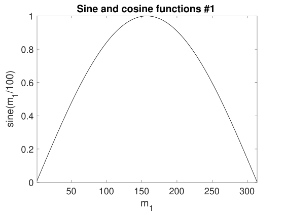 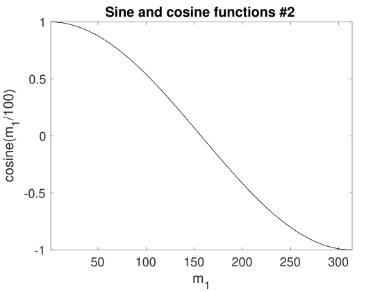
The data input to xGRAPH can come from a file, or from data generated directly from any compatible program.
The data is stored in a cell array \(data\) with structure: \[ data\{s\}\{n\}(\ell ,\mathbf {j},c) \] Each member of the outer cell array data{s} defines a number of related sets of graphical data, all described by common parameters input{s}. Comparisons and errors are plotted if there are errors and comparison data in the input, indexed by c. This generates comparison plots, as well as error totals and \(\chi \)- squared error estimate when there are statistical variances available.
An individual member of data{s}{n} is a multidimensional array, called a graph in the xSPDE User’s guide. For each graph, multiple different plots with different dimensionality can be obtained from the dataset data{s}{n}, either through projections and slices or by generating additional data defined with graphics functions. Either or both alternatives are available.
Note that:
If a sequence has one member, the outer cell array can be omitted.
In this simplified case, if there is only one graph array, the inner cell array can be omitted.
The graphics data for a single dataset is held in a multidimensional real array, where:
\(\ell \) is the index for lines in the graph. Even for one line, the first dimension is retained.
\(\mathbf {j}=j_{1},\ldots j_{d}\) is the array index in each dimension, where \(d\ge 1\).
Averages in momentum space have the momentum origin as the central index.
If integrals or spatial averages are used, the corresponding dimension has one index \(j_{d}=1\).
With probabilities, extra dimensions are added to \(\mathbf {j}\) to store the bin indices.
c indexes error-checks and comparisons in the data. If not present, the last dimension is omitted.
If \(c>p.errors\), the extra fields are comparison inputs, where \(p.errors=0\) is the default.
When the optional comparison fields are used, an input parameter \(errors\) is required to indicate the maximum error index, to distinguish data from comparisons. Parameter structures from xSIM have \(errors=3\) set to allow for both sampling errors and discretization errors. If this is omitted, the default is \(errors=0\), which implies that there is no error or comparison data
If \(errors>0\), the last index can have larger values with \(c>errors\), for comparisons. The special case of \(errors=1\) is used if the data has no error bars, but there are comparisons in the data. Larger indices are used to index the comparison data, which can also have two types of errors. The largest usable last index is \(errors+3\).
It is possible to directly plot the raw data using xGRAPH. One can even combine the raw data with a graphics parameter input. But since the raw data has no error estimates - it is raw data - one must set \(p.errors=0\), since the xsim output parameters have a default of \(p.errors=3\). This will give a single trajectory.
However, the raw data from a simulation typically includes many trajectories if \(ensembles(1)>0\), and then one must select particular trajectory datasets from the raw cell array, to plot just one.
A sequence of graph parameters is obtained from inputs in a cell array, as input = {in1, in2, ...}. The input parameters of each simulation in the sequence are specified in a Matlab structure. The inputs are numbers, vectors, strings, functions and cell arrays. All metadata has preferred values, so only changes from the preferences need to be input. The resulting data is stored internally as a sequence of structures in a cell array, to describe the simulation sequence.
The graphics parameters are also stored in the cell array input as a sequence of structures p. This only need to be input when the graphs are generated and can be changed at a later time to alter the graphics output. A sequence of simulations is graphed from input specifications.
If there is one simulation, just one structure can be input, without the sequence braces. The standard way to input each parameter value is:
\[ p.label=parameter \]
The standard way to input a function handle is:
\[ p.label=@function \]
The inputs are scalar or vector parameters or function handles. Quantities relating to graphed averages are cell arrays, indexed by the graph number. The available inputs, with their default values in brackets, are given below.
Simulation metadata, including default values that were used in a particular simulation, can be included in the input data files. This is done in both the .mat and the .h5 output files generated by xSIM, so the entire graphics input can be reconstructed or changed.
Parameters can be numbers, vectors, strings or cell arrays. Conventions that are used are that:
All input parameters have default values
Vector inputs of numbers are enclosed in square brackets, [...].
Cell arrays of strings, functions or vectors are enclosed in curly brackets.
Vector or cell array inputs with only one member don’t require brackets.
Incomplete parameter inputs are completed with the last used default value.
Function definitions can be handles pointing elsewhere, or defined inline.
If any inputs are omitted, there are default values which are set by the internal function xgpreferences. The defaults can be changed by editing xgpreferences.
In the following descriptions, graphs is the total number of graphed variables of all types. The space coordinate, image, image-type and transverse data can be omitted if there is no spatial lattice, that is, if the dimension variable is set to one.
For uniformity, the graphics parameters that reference an individual data object are cell arrays. These are indexed over the graph number using braces {}. If a different type of input is used, like a scalar or matrix, xSPDE will attempt to convert the type to a cell array.
Axis labels are cell arrays, indexed over dimension. The graph number used to index these cell arrays refers to the data object. In each case there can be multiple generated plots, depending on the graphics input.
This routine automatically generates a default range of graphs, but this can be modified to suit the user.
The pdimension input sets the maximum plotted dimensions. For example, \(pdimension\{1\}=1\) means that only plots vs \(r_{1}\) are output for the first function plotted. Default values are used for the non-plotted dimensions, unless there are axes specified, as indicated below.
The graphs cascade down from higher to lower dimensions, generating different types of graphs. Each type of graph is generated once for each function index.
The graphics axes that are used for plotting and the points plotted are defined using the optional axes input parameters, where \(axes\{n\}\) indicates the n-th specified graph or set of generated graph data.
If there are no axes inputs, or the axes inputs are zero - for example, \(axes\{1\}=\{0,0,0\}\) - only the lowest dimensions are plotted, up to 3. If either the data or axes inputs project one point in a given dimension, - for example, \(axes\{1\}=\{0,31,-1,0\}\), this dimension is suppressed in the plots, which reduces the effective dimension of the data - in this case to two dimensions.
Examples:
\(axes\{1\}=\{0\}\) - For function 1, plot all the first dimensional points; higher dimensions get defaults.
\(axes\{2\}=\{-2,0\}\) - For function 2, plot the maximum value of \(r_{1}\) (the default) and all higher-dimensional x-points.
\(axes\{3\}=\{1:4:51,32,64\}\) - For function 3, plot every 4-th \(x_{1}\) point at \(x_{2}\) point 32, \(x_{3}\) point 64
\(axes\{4\}=\{0,2:4:48,0\}\) - For function 4, plot every \(x_{1}\) point , every 4-th \(x_{2}\) point, and all \(x_{3}\)-points.
Points labelled \(-1\) indicates a default ‘typical’ point, which is the midpoint. If one uses \(-2\), this is the last point.
Lower dimensions are replaced by corresponding higher dimensions if there are dimensions or axes that are suppressed. Slices can be taken at any desired point, not just the midpoint. The notation of \(axes\{1\}=\{6:3:81\}\), is used to modify the starting, interval, and finishing points for complete control on the plot points.
The graphics results depend on the resulting effective dimension, which is equal to the actual input data dimension unless there is an axes suppression, described above. Since the plot has to include a data axis, the plot itself will usually have an extra data axis.
One can plot only three axes directly using standard graphics tools. The strategy to deal with the higher effective dimensionality is as follows. For simplicity, “time” is used to label the first effective dimension, although in fact any first dimension is possible:
dimensions = 1
For one lattice dimension, a 2D plot of observable vs t is plotted, with data at each lattice point in time. Exact results, error bars and sampling error bounds are included if available.
dimensions = 2
For two lattice dimensions, a 3D image of observable vs x,t is plotted. A movie of distinct 2D graphic plots is also possible. Otherwise, a slice through \(x=0\) is used tp reduce the lattice dimension to \(1\).
dimensions = 3
For three lattice dimensions, if \(images>1\), a movie of distinct 3D graphic images of observables are plotted as \(images\) slices versus the first plot dimension. Otherwise, a slice through the chosen point, is used at the highest dimension to reduce the lattice dimension to \(2\).
dimensions > 3
For higher lattice dimensions, a slice through a chosen point, or the default midpoint is used to reduce the lattice dimension to \(3\).
As explained above, in addition to graphs versus \(x_{1}\) the xGRAPH function can generate images (3D) and transverse (2D) plots at specified points, up to a maximum given by the number of points specified. The number of these can be individually specified for each graph number. The images available are specified as imagetype\(=1,\ldots 4\), giving:
3D perspective plots (Matlab surf - the default)
2D filled color plots (Matlab contourf )
contour plots (Matlab contour )
pseudo-color plots (Matlab pcolor )
Error bars, sampling errors and multiple lines for comparisons are only graphed for 2D plots. Error-bars are not plotted when they are below a user-specified size, with a default of \(1\%\) of the maximum range, to improve graphics quality. Higher dimensional graphs do not output error-bar data, but they are still recorded in the data files.
Probability data can be input and plotted as usual. It is generated from the \(xsim\) and xqsim programs using the \(binranges\) data for binning. It is plotted like any other graph, with any dimension.
In addition it is possible for the program to make a \(\chi ^{2}\) plot, which is a plot of the \(\chi ^{2}\) comparison with a comparison probability density against space and/or time. This allows a test of the simulated data against a known target probability distribution, provided that the following input data conditions are satisfied:
The input data dimension exceeds the p.dimensions parameter,
The switch p.chisqplot is set to \(1\)or 2, and
The input data includes comparison function data.
The \(\chi ^{2}\) plots, depending on \(p.chisqplot\) are:
a plot of \(\chi ^{2}\) and \(k\), where \(k\) is the number of valid data points,
a plot of \(\sqrt {2\chi ^{2}}\) and \(\sqrt {2k-1}\), which should have a unit variance.
Here, for one point in space and time, with \(m\) bins, \(N_{j}\) counts per bin and \(E_{j}\) expected counts: \[ \chi ^{2}=\sum _{j=1}^{m}\frac {\left (N_{j}-E_{j}\right )^{2}}{E_{j}} \]
The number \(k\) is the number of valid counts, with \(N_{j},E_{j}>mincount\). This is partly determined from the requirement that the probability count data per bin is greater than the \(p.mincount\) parameter. The default is set to give a number of samples \(>10\). The program prints a summary that sums over of all the \(\chi ^{2}\) data.
The \(p.scale\{n\}\) parameter gives the number of counts per bin at unit probability density. This is needed to set the scale of the \(\chi ^{2}\) results, ie, \(N_{j}=scale\{n\}\times p_{j}\), where \(p_{j}\) is the probability density that is compared and plotted in the simulation data. Note that a uniform bin size is assumed here, to give a uniform scaling.
It can be useful to compare two probability distributions with different variances. For one point in space and time, with \(m\) bins, \(p_{j}\) probability density and \(e_{j}\) expected probability density, \[ \chi ^{2}=\sum _{j=1}^{m}\frac {\left (p_{j}-e_{j}\right )^{2}}{\sigma _{j}^{2}+\sigma _{e,j}^{2}} \] In this case, \(\sigma _{j}^{2}\) and \(\sigma _{e,j}^{2}\) are the sampling errors in the simulation data and comparison data, so that built-in error fields in the data are used to work out the \(\chi ^{2}\) results. This option is chosen if \(p.scale\{n\}=0\), and the cutoff for the data is then specified so that \(p_{j},e_{j}>p.cutoffs\{n\}\). This only has a \(\chi ^{2}\) distribution if points are independent.
It is also possible to plot the \(G^{2}\) or maximum likelihood plot of the data, which is an alternative means to compare distributions, where \[ G^{2}=2\sum _{j=1}^{m}N_{j}\ln \left (N_{j}/E_{j}\right ) \] The expected values \(E_{j}\) are automatically scaled so that \(\sum N_{j}=\sum E_{j},\)with the same minimum count cutoff that is used for the \(\chi ^{2}\) data. The result is similar to the \(\chi ^{2}\) results. It is obtained if p.gsqplot is set to \(1\)or 2 and requires for the input that \(p.scale\{n\}>0.\) It is sometimes regarded as a preferred method for comparisons.
Default:
{0,0,0,..}
Gives the axis points plotted for the \(n\)-th plotted function, in each dimension. Each entry value is a vector range for a particular plot and dimension. Thus, p = 5 gives the fifth point only, and a vector input p = 1:4:41 plots every fourth point. Single points generate graphics projections, allowing the other dimensions to be plotted. Zero or negative values are shorthand. For example, p = -1 generates a default point at the midpoint, p = -2 the endpoint, and p = 0 is the default value that gives the vector for the every axis point. For each graph type, i.e. n=1,..graphs the axes can be individually specified in each dimension, d=1,..dimensions. If more than three axes are specified to be vectors, only the first three are used, and others are set to default values in the plots.
Example:
p.axes{4} = {1:2:10,0,0,-1}
Default:
0
Differences are plotted as a comparison dashed line on \(2D\) plots as a default. Otherwise, a separate difference plot is obtained which is unnormalized (diffplot = 1), or normalized (diffplot = 2) by the total RMS errors. If diffplot = 3, the comparison data is plotted directly as an additional graph.
Example:
p.diffplot{3} = 2
Default:
0
Indicates if the last index in the graphics input data arrays is used for errorbars and/or comparisons. Should be set to zero if there is no error or comparison data. If non-zero, this will give the highest last index used for errors. The standard xsim output sets \(p.errors=3\) automatically. As a special case, \(p.errors=1\) is used to indicate that there is comparison data but no error data.
If \(p.errors>0\) , the data indexed up to p.errors gives the data, then a maximum of two types of error bars. Up to three further index values, up to \(p.errors+3\), are available to index all comparison data and its error fields. The maximum last index value used is \(6\).
Example:
p.errors = 2
Default:
1
This sets the type and size of sampling errors that are plotted. If esample = 0, no sampling error lines are plotted, just the mean. If \(esample=-n\), \(\pm n\sigma \) sampling errors are included in the errorbars. If \(esample=n\), separate upper and lower \(\pm n\sigma \) sampling error lines are plotted. In both cases, the magnitude of esample sets the number of standard deviations used.
Example:
p.esample{3} = -1
Default:
18
This sets the default font sizes for the graph labels, indexed by graph. This can be changed per graph.
Example:
p.font{4}=18
Default:
number of functional transformations
This gives the maximum number of output graph functions and is available to restrict graphical output. The default is the length of the cell array of input data. Normally, the default will be used.
Example:
p.functions = 10
Default:
xlabels or klabels
Graph-dependent labels for the independent variable labels. This is a nested cell array with first dimension of graphs and second dimension of dimensions. This is used to replace the global values of xlabels or klabels if the axis labels change from graph to graph, for example, if the coordinates have a functional transform. These can be set for an individual coordinate on one graph if needed.
Example:
p.glabels{4}{2} = ’x^2’
Default:
observables to plot
This gives the observables to plot. The default is a vector of indices from one to the length of the cell array of observe functions. Normally not initialized, as the default is used. Mostly used to reduce graphical output on a long file.
Example:
p.graphs = 10
Default:
[0,0,...]
This switch specifies the Fourier transformed graphs and axes for graphics labeling. Automatically equal to ftransforms if from an earlier xSIM input, but can be changed. If altered for a given graph, all the axis Fourier switches should be reset. This is ignored if there is no dimensions setting to indicate space dimensions.
Example:
p.gtransforms{1} = [0,0,1]
Default:
”
This is a string variable giving the graph headers for each type of function plotted. The default value is an empty string. Otherwise, the header string that is input is used. Either is combined with the simulation name and a graph number to identify the graph. This is used to include simulation headers to identify graphs in simulation outputs. Graph headers may not be needed in a final published result. For this, either edit the graph, or use a space to make plot headers blank: p.headers{n} = ’ ’, or p.name = ’ ’ .
Example:
p.headers{n} = ’my_graph_header’
Default:
0
This is the number of 3D, transverse o-x-y images plotted as discrete time slices. Only valid if the input data dimension is greater than 2. If present, the coordinates not plotted are set to their central value when plotting the transverse images. This input should have a value from zero up to a maximum value of the number of plotted points. It has a vector length equal to graphs.
Example:
p.images{4} = 5
Default:
1
This is the type of transverse o-x-y movie images plotted. It has a vector length equal to graphs.
imagetype = 1 gives a perspective surface plot
imagetype = 2, gives a 2D plot with colors
imagetype = 3 gives a contour plot with 10 equally spaced contours
imagetype = 4 gives a pseudo-color map
Example:
p.imagetype{n} = 1, 2, 3, 4
Default:
{’\omega’, ’k_x’, ’k_y’, ’k_z’}“ or “{’k_1’, ’k_2’, ’k_3’, ’k_4’,...}
Labels for the graph axis Fourier transform labels, vector length of dimensions. The numerical labeling default is used when the “p.numberaxis“ option is set. Note, these are typeset in Latex mathematics mode! When changing from the default values, all the required new labels must be set.
Example:
p.klabels= {’\Omega’, ’K_x’, ’K_y’,}
Default:
{”,”}
Graph-dependent legends, specified as a nested cell array of strings for each line.
Example:
p.legends{n} = {labels(1), ..., labels(lines)}
Default:
{0,0,0,0; ...}
Graph-dependent limits specified as a cell array with dimension graphs. Each entry is a cell array of graph limits indexed by the dimension. The limits are vectors, indexed as 1,2 for the lower and upper plot limits. This is useful if the limits required change from graph to graph. If an automatic limit is required for either the upper or lower limit, it is set to inf. An invalid, scalar or empty limit vector, like [0,0] or \(0\) or [] is ignored. In these cases an automatic graph limit
Example:
p.limits{n} = {[t1,t2],[x1,x2],[y1,y2] ...,}
Default:
{’-k’,’–k’,’:k’,’-.k’,’-ok’,’–ok’,’:ok’,’-.ok’,’-+k’,’–+k’}
Line types for each line in every two-dimensional graph plotted. If a given line on a two-dimensional line is to be removed completely, set the relevant line-style to zero. For example, to remove the first line from graph 3, set p.lines{3} ={0}. This is useful when generating and changing graphics output from a saved data file.
Example:
p.lines{n} = {linetype{1}, ..., linetype{nl}}
Default:
{0.01, ...}
This is the minimum relative error-bar that is plotted. Set to a large value to suppress unwanted error-bars, although its best not to ignore the error-bar information! This can be changed per graph.
Example:
p.minbar{n} = 0
Default:
”
Name used to label simulation graphs, usually corresponding to the equation or problem solved. This can be removed from individual graphs by using headers{n} equal to a single blank space. The default is a null string. To remove all headers globally, set name equal to a single blank space: name = ’ ’.
Example:
p.name = ’Wiener process simulation’
Default:
’a’
Cell array of labels for the graph axis observables and functions. These are text labels that are used on the graph axes. The default value is ’a_1’ if the default observable is used, otherwise it is blank. This is overwritten by any subsequent label input when the graphics program is run:
Example:
p.olabels{4} = ’v’
Default:
[0,0]
Cell array that defines parametric plots, if required, for each graph number. The first number is the graph number of the alternative observable plotted on the horizontal axis for the parametric plot. The second number is the axis number where the parametric value is substituted, which can be the time (axis 1) or x-coordinate (axis 2).
If both are zero, the plot against an independent space-time coordinate is calculated as usual. If nonzero, a parametric plot is made for two-dimensional plots . In both cases the vertical axis is used to plot the original graph variable. The horizontal axis is used for either the independent variable or the parametric variable. In this version, only vertical error-bars are available. Can be usefully combined with scatters{n} to plot individual trajectories, but the number of scatters should be the same in each of the two graphs that are parametrically plotted against each other.
Example:
p.parametric{n} = [p1,p2] >= 0
Default:
3
This is the maximum plotted space-time dimension for each plotted quantity. The purpose is eliminate unwanted graphs. For example, it is useful to reduce the maximum dimension when averaging in space. Higher dimensional graphs are not needed, as the data is duplicated. Averaging can be useful for checking conservation laws, or for averaging over homogeneous data to reduce sampling errors. All graphs are suppressed if it is set to zero. Any three dimensions can be chosen to be plotted, using the axes parameter to suppress the unwanted data points in other dimensions.
Example:
p.pdimension{4} = 2
Default:
0
If set to \(1\), all plots are saved to the current folder as .eps files, numbered consecutively. It is best to use the close all command first to remove unwanted displayed xFIGURES, before running xgraph with this option.
Example:
p.saveeps =1
Default:
0
If set to \(1\), all plots are saved to the current folder as .fig files, numbered consecutively. It is best to use the close all command first to remove unwanted displayed xFIGURES, before running xgraph with this option.
Example:
p.savefig =1
Default:
0
This is the number of 2D transverse images plotted as discrete time slices. Only valid if dimensions is greater than 2. If present, the \(y,z\)-coordinates are set to their central values when plotting transverse images. Each element can be from 0 up to the number of plotted time-points. The cell array has a vector length equal to graphs.
Example:
p.transverse{n}= 6
Default:
0
Print flag for output information while running xGRAPH. Print options are:
Minimal if verbose = -1: Prints just the start-up time and hard error messages
Brief if verbose = 0: Additionally prints the final, total chi-squared errors where present
Informative if verbose = 1: Also prints the graph progress indicators
Full if verbose = 2: Prints everything including the internal parameter structure data.
In summary, if verbose = 0, most output is suppressed except the final data, verbose = 1 displays a progress report, and verbose = 2 additionally generates a readable summary of the graphics parameter input.
Example:
p.verbose = 0
Default:
{’t’, ’x’, ’y’, ’z’} or {’x_1’, ’x_2’, ’x_3’, ’x_4’,...}
Global labels for the independent variable labels, vector length equal to dimensions. The numerical labeling default is used when the numberaxis option is true. These are typeset in Latex mathematics mode. When changing from the default values, all the required new labels must be set.
Example:
p.xlabels = {’tau’}
It is possible to simply run xgraph as is, without much intervention. However, there are customization options, including user defined functions. These are as follows:
This is a cell array of graphics function handles. Use when a graph is needed that is a functional transformation of the observed averages. The default value generates the n-th graph data array directly from the n-th input data. The input is the data cell array for all the graphs in the current sequence number with their graph parametes x, and the output is the n-th data array that is plotted.
An arbitrary number of functions of these observables can be plotted, including vector observables. The input to graphics functions is the observed data averages or functions of averages in a given sequence, each stored in a cell array \(d\{n\}(\ell ,\mathbf {j},c)\). If there are more graphics functions than input data cells, this generate additional data for plotting.
This is a nested cell array of axis transformations. Use when a graph is needed with an axis that is a function of the original axes. The input is the original axis coordinates, and the output is the new coordinate set. The default value generates the input axes. Called as xfunctions{n}{nd}(ax,p) for the n-th graph and axis direction dir, where ax is a vector of coordinates for that axis.There is one graphics function for each separate graph dimension or axis. The default value is the coordinate vector \(xk\{nd\}\) stored in the input parameter structure p, or else the relevant index if xk{nd} is omitted.
The graphics function, \(xgraph\), plots the simulation data. The general stucture is:
\begin {align*} \mathbf {xgraph} & \rightarrow \mathbf {xgpreferences}\,\,(checks\,inputs)\\ & \rightarrow \mathbf {xmultigraph}\leftrightarrow \mathbf {xreduce\leftrightarrow \mathbf {xcompress}}\,\,(structures\,data\,arrays)\\ & \rightarrow \mathbf {ximages}\rightarrow \mathbf {xtransverse}\rightarrow \mathbf {xplot3}\rightarrow \mathbf {xplot2}\,\,(graphs\,all\,data) \end {align*}
Most graphics functions simply work, but two important functions are listed here for reference.
The xgraph function graphs multidimensional data files.
Input: graphics data cells data, input parameter cells input.
Output: graphs, displayed and/or stored as eps or fig files.
If no numeric data present, reads data from a file named data.
If data is present but without any input parameters it plots using default parameters.
First data dimension is the line index, last dimension are the error-bars and comparisons
Needs: xread, xmakecell, xgpreferences, xmultiplot
The xgpreferences function sets default values for graphics inputs.
Input: input cell array and optionally previous inputs from a datafile, oldinput.
Note that each cell array is a sequence of graphics parameter structures
Output: the updated plus default graphics parameters
Called by: xgraph
Needs: xprefer, xcprefer
A variety of examples are given in the xAMPLES folder distributed with xSPDE. These can all be run using Batchtest.m, which has a typical runtime of \(50-100s\), and runs \(34\) different case studies. This shows your distribution is intact. All the graphs produced are deleted. It also lists the many different templates available, some of which are listed here.
This solves a multiplicative SDE with initial condition \(a\left (0\right )=1\) and:
\begin {equation} \frac {\partial a}{\partial t}=iaw(t)\,.\label {eq:SDE-3} \end {equation}
The function uses the RK4 algorithm together with both vector and series ensembles, then stores the computed averages with a comparison of the variance and an exact solution, \[ \left \langle a^{n}\right \rangle =e^{-tn^{2}/2}. \]
% [e] = KUBO() simulates a Kubo oscillator
%%%%%%%%%%%%%%%%%%%%%%%%%%%%%%%%%%%%%%%%%%%%%%%%%%%%%%%%%%%%%%%%%%%
p.name = ’Kubo oscillator’;
p.ensembles = [1000,8];
p.method = @RK4;
p.initial = @(w,p) 1;
p.deriv = @(a,w,p) 1i*w.*a(1,:) ;
p.file = ’Kubo.mat’;
p.observe{2} = @(a,p) a.^2;
p.olabels{2} = {’<a^2>’};
p.compare = {@(p) exp(-p.t/2),@(p) exp(-2*p.t)};
e = xsim(p);
p2.name = ’Kubo oscillator edited title’;
xgraph(p.file,p2);
end
The algorithm is changed from the default to RK4.
The data is stored to ’Kubo.mat’.
This is re-read and edited using a second parameter structure, p2.
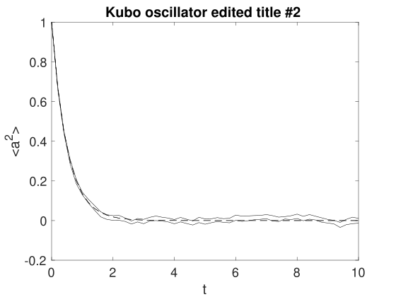
This solves an SDE with a complex Gaussian distributed initial condition having \(\left \langle \left |a\left (0\right )\right |^{2}\right \rangle =1\) and a sequence of SDE equations, such that \begin {equation} \frac {\partial a}{\partial t}=\begin {cases} -a+w_{1}(t)+iw_{2}(t) & 0<t<4\\ a+w_{1}(t)+iw_{2}(t) & 4<t<8 \end {cases}\,.\label {eq:SDE-3-1-1} \end {equation}
The computed variance is compared with an exact solution, \[ \left \langle a^{2}\right \rangle =\begin {cases} 1 & 0<t<4\\ 2e^{2\left (t-4\right )t}-1 & 4<t<8 \end {cases}. \]
.
% e = GAIN() solves an SDE with sequential loss then gain
%%%%%%%%%%%%%%%%%%%%%%%%%%%%%%%%%%%%%%%%%%%%%%%%%%%%%%%%%%
%
p.name = ’Loss with noise’;
p.ranges = 4;
p.noises = [2,0];
p.ensembles = [10000,1,10];
p.initial = @(w,~) (w(1,:)+1i*w(2,:))/sqrt(2);
p.deriv = @(a,w,p) -a + w(1,:)+1i*w(2,:);
p.observe = {@(a,~) a.*conj(a)};
p.olabels = {’|a|^2’};
p.compare = {@(p) 1};
p2 = p;
p2.steps = 2;
p2.name = ’Gain with noise’;
p2.deriv = @(a,w,~) a + w(1,:)+1i*w(2,:);
p2.compare = {@(p) 2*exp(2*p.t)-1};
e = xspde({p,p2});
end
Low and high level parallel ensembles optimize use of multi-core vector hardware.
Two distinct simulations are run in series, with a change in the equation.
The simulation name is changed in sequence 2, to distinguish the graphical outputs
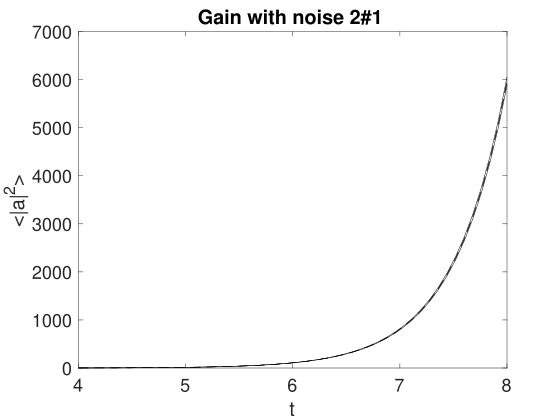
This solves an SDE with a complex Gaussian initial condition having \(\left \langle \left |a\left (0\right )\right |^{2}\right \rangle =1\) and:
\begin {equation} \frac {\partial a}{\partial t}=-a+w_{1}(t)+iw_{2}(t)\,.\label {eq:SDE-3-1} \end {equation}
The equation is such that the initial distribution is also the equilibrium probability distribution. The computed ordinary and spectral variances are compared with exact solutions and graphed, where \begin {align*} \lim _{t\rightarrow \infty }\left \langle \left |a\left (t\right )\right |^{2}\right \rangle & =1.\\ \left \langle \left |a\left (\omega \right )\right |^{2}\right \rangle & =\frac {T}{\pi \left (1+\omega ^{2}\right )}. \end {align*}
% e = EQUILIBRIUM() solves an SDE with a known spectrum
%%%%%%%%%%%%%%%%%%%%%%%%%%%%%%%%%%%%%%%%%%%%%%%%%%%%%%%%%%
%
p.name = ’Equilibrium spectrum’;
p.points = 101;
p.ranges = 100;
p.seed = 241;
p.noises = [2,0];
p.ensembles = [100,5];
p.initial = @(w,~) (w(1,:)+1i*w(2,:))/sqrt(2);
p.deriv = @(a,w,~) -a + w(1,:)+1i*w(2,:);
p.observe{1} = @(a,~) a.*conj(a);
p.observe{2} = @(a,~) a.*conj(a);
p.transforms = {0,1};
p.olabels = {’|a(t)|^2’,’|a(\omega)|^2’};
p.compare = {@(p) 1, @(p)p.ranges(1)./(pi*(1+p.w.^2))};
e = xspde(p);
end
A fixed random seed is input using the p.seed parameter.
The p.transforms cell array gives a Fourier transform for p.observe{2} only.
A small number of ensembles and time-steps is used to improve error visibility.
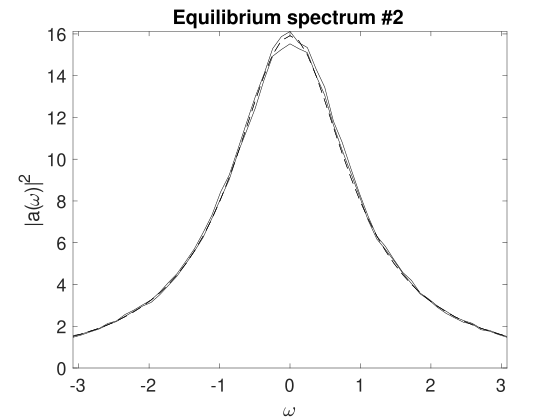
This solves an SDE for a quantum harmonic oscillator in the (truncated) Wigner phase-space calculus. It is initialized as a vacuum state, corresponding to a complex Gaussian initial condition having \(\left \langle \left |a\left (0\right )\right |^{2}\right \rangle =1\). It is subject to vacuum noise, here realized by the auxiliary field \(a_{in}\). An output field is given through the input-output relations and is realized by the auxiliary field \(a_{out}\).
\begin {align} \frac {\partial a}{\partial t} & =-a+\sqrt {2}a_{in}.\nonumber \\ a_{in} & =\frac {1}{2}\left (w_{1}(t)+iw_{2}(t)\,\right )\nonumber \\ a_{out} & =\sqrt {2}a-a_{in} \end {align}
The computed spectral variances are compared with exact solutions and graphed, where: \begin {align} \frac {2\pi }{T}\left \langle \left |a\left (\omega \right )\right |^{2}\right \rangle & =\frac {1}{\left (1+\omega ^{2}\right )}.\nonumber \\ \left \langle \left |a_{in}\left (\omega \right )\right |^{2}\right \rangle & =\frac {1}{2}\nonumber \\ \left \langle \left |a_{out}\left (\omega \right )\right |^{2}\right \rangle & =\frac {1}{2}. \end {align}
Demonstrates how to include defined fields
There are \(4\) steps per point, to give better accuracy due to finite steps
The observe functions are all transformed, and include defined fields.
% e = QUANTUM() solves an SDE with a known spectrum
% This is the quantum harmonic oscillator with a vacuum input and
% output, for which one expects 0.5 ’photons’ per mode.
%%%%%%%%%%%%%%%%%%%%%%%%%%%%%%%%%%%%%%%%%%%%%%%%%%%%%%%%%%
%
p.name = ’Quantum harmonic oscillator spectrum’;
p.points = 160;
p.steps = 4;
p.ranges = 120;
p.fields = 1;
p.auxfields = 2;
p.noises = 2;
p.ensembles = [400,1,12];
p.initial = @(w,~) (w(1,:)+1i*w(2,:))/(2);
p.a1 = @(w) (w(1,:)+1i*w(2,:))/2;
p.deriv = @(a,w,~) -a(1,:)+sqrt(2)*p.a1(w);
p.define = @(a,w,p) [p.a1(w);sqrt(2)*a(1,:)-p.a1(w)];
T = @(p) p.ranges(1);
p.observe{1} = @(a,p) (2.*pi/T(p))*a(1,:).*conj(a(1,:));
p.observe{2} = @(a,p) (2.*pi/T(p))*a(2,:).*conj(a(2,:));
p.observe{3} = @(a,p) (2.*pi/T(p))*a(3,:).*conj(a(3,:));
p.transforms = {1,1,1};
p.olabels{1} = ’|a(\omega)|^2’;
p.olabels{2} = ’|a_{in}(\omega)|^2’;
p.olabels{3} = ’|a_{out}(\omega)|^2’;
p.compare{1} = @(p) 1./(1+p.w.^2);
p.compare{2} = @(p) 0.5;
p.compare{3} = @(p) 0.5;
e = xspde(p);
end
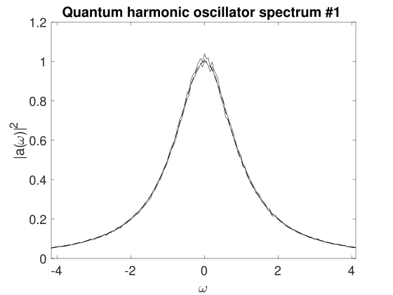
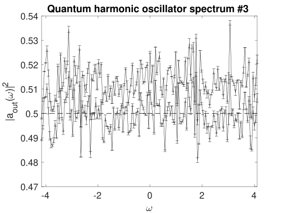
Solves an SDE with an initial condition \(\left \langle a\left (0\right )\right \rangle ^{2}=\frac {1}{4}\) and
\begin {equation} \dot {a}=w(t)\,. \end {equation}
Records the probability density and compares this with an exact solution:
The script outputs a 3D plot of \(P\left (x,t\right )\), together with the time evolution of \(P\left (0,t\right )\)
There are 5 “transverse” plots of transient probabilities at intermediate times.
Legends are plotted to identify the simulated and the analytic comparison lines.
% e = WIENERPROB() solves a Wiener process for the probability
%%%%%%%%%%%%%%%%%%%%%%%%%%%%%%%%%%%%%%%%%%%%%%%%%%%%%%%%%%
%
p.name = ’Wiener SDE distribution’;
p.noises = 1;
p.points = 10;
p.ensembles = [10000,10];
p.initial = @(v,p) v/2;
p.sig = @(p) .25 + p.r{1};
p.deriv = @(a,w,p) w;
p.observe{1} = @(a,p) a;
p.compare{1} = @gaussprob;
p.transverse{1} = 5;
p.olabels{1} = ’P(x)’;
p.binranges{1} = {-5:0.25:5};
p.legends{1} = {’Sampled P(x,\tau) \pm \sigma’,’Exact P(x,\tau)’};
p.xlabels = {’\tau’,’x’};
e = xspde(p);
end
%
function p = gaussprob(p)
p = exp(-(p.r{2}.^2)./(2*p.sig(p)))./sqrt(2*pi*p.sig(p));
end
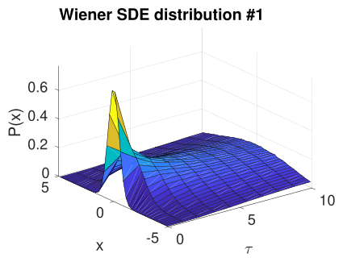
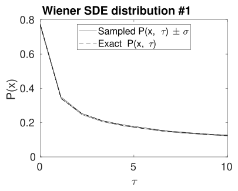
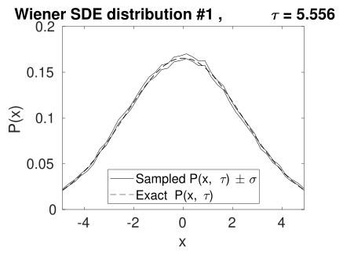
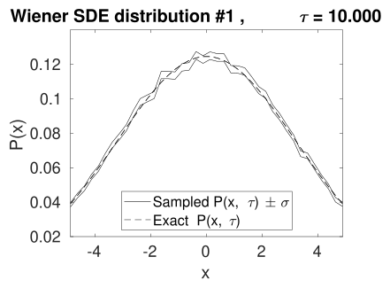
This solves a (1+1)-dimensional PSDE with an initial condition of \(a\left (t=0,x\right )=sech\left (x\right )\) and
The solution is subject to Neumann boundary conditions with boundary values at zero
The equation is a deterministic nonlinear Schrodinger equation, which applies to nonlinear optics, Bose-Einstein condensates and plasma physics. The observables are \(o_{1}\equiv \left |a\right |^{2}\) and \(o_{2}\equiv \int _{-x_{m}}^{x_{m}}\left |\frac {\partial }{\partial x}a\right |^{2}dx\),
The boundary conditions are specified with p.boundaries
p.dimensions = 2;
p.points = [101,101];
p.ranges = [10,15];
p.initial = @(v,p) sech(p.x);
p.observe{1} = @(a,p) a.*conj(a);
p.observe{2} = @(a,p) Int(abs(D1(a,2,p)).^2,p);
p.olabels = {’|a|^2’,’\int |da/dx|^2 dx’};
p.name = ’NLS soliton:spectral method + Neumann’;
p.boundaries{2} = [-1,-1];
p.transverse = {3};
p.deriv = @(a,~,p) 1i*a.*(conj(a).*a);
p.linear = @(p) 0.5*1i*(p.Dx.^2-1);
e = xspde(p);
end
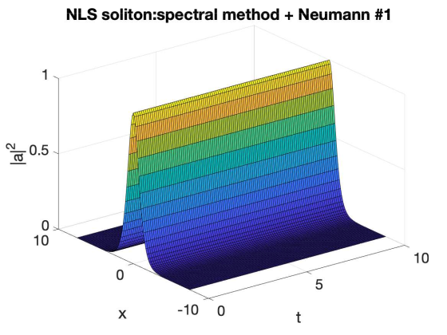
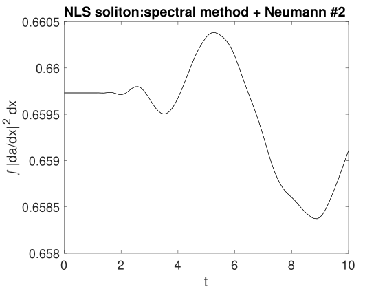
This solves a (1+2)-dimensional PSDE describing the growth of noise in an extended planar vector field with additive noise and a diffraction term giving rise to noise dispersion. There are \(240\) trajectories in the total ensemble. The equation is:
The initial conditions are that \(\mathbf {a}=\left (\mathbf {v}_{x}+i\mathbf {v}_{y}\right )/\sqrt {2}\), where: \[ \left \langle v_{i}\left (\mathbf {x}\right )v_{j}\left (\mathbf {x}'\right )\right \rangle =\delta \left (\mathbf {x}-\mathbf {x}'\right )\delta _{ij} \] the noise correlations are that \(\mathbf {\eta }=\left (\mathbf {w}_{x}+i\mathbf {w}_{y}\right )/\sqrt {2}\), where:
The solution is subject to periodic boundary conditions. The noise correlations for the second field are specified in momentum space. As there are no filters specified, the noise terms are delta-correlated in both momentum (\(\mathbf {k}\)) and in space (\(x\)). Using a Fourier transform, one can show that the exact results for comparison for the correlations within each field are similar in position and momentum space: \begin {align*} \left \langle \left |a_{i}\left (t,\mathbf {x}\right )\right |^{2}\right \rangle & =\left (1+t\right )/\Delta A_{x}.\\ \left \langle \left |a_{i}\left (t,\mathbf {k}\right )\right |^{2}\right \rangle & =\left (1+t\right )/\Delta A_{k}. \end {align*}
Here, \(\Delta A_{x,k}\) is the area of a lattice cell in space or momentum space respectively. This is \(\Delta A_{x}=1/49\) for the parameters used here. On integration over the whole lattice, the correlation is proportional to \(N_{s}\), the number of points in the spatial lattice, which is \(35^{2}=1225\) for the default spatial lattice used here:
\begin {align*} \int \left \langle \left |a_{i}\left (t,\mathbf {x}\right )\right |^{2}\right \rangle d\mathbf {x}=\int \left \langle \left |a_{i}\left (t,\mathbf {k}\right )\right |^{2}\right \rangle d\mathbf {k} & =N_{s}\left (1+t\right ). \end {align*}
All three types of ensemble are used
The much lower sampling error after integration is evident in the graphs
Spatially resolved graphs show larger sampling errors \[ \]
% e = PLANAR() solves a linear stochastic PDE in (1+2) dimensions
%%%%%%%%%%%%%%%%%%%%%%%%%%%%%%%%%%%%%%%%%%%%%%%%%%%%%%%%%%%%%%%%%%
%
p.name = ’Planar noise growth’;
p.dimensions = 3;
p.fields = 2;
p.ranges = [1,5,5];
p.points = 10;
p.noises = [2,2];
p.ensembles = [10,2,12];
p.initial = @Initial;
p.deriv = @D_planar;
p.linear = @Linear;
p.observe{1} = @(a,p) Int(a(1,:).*conj(a(1,:)),p);
p.observe{2} = @(a,p) Int(a(2,:).*conj(a(2,:)),p.dk,p);
p.observe{3} = @(a,p) real(Ave(a(1,:).*conj(a(2,:)),p));
p.observe{4} = @(a,p) a(2,:).*conj(a(2,:));
p.transforms = {[0,0,0],[0,1,1],[0,1,1]};
p.olabels{1} = ’<\int|a_1(x)|^2 d^2x>’;
p.olabels{2} = ’<\int|a_2(k)|^2 d^2k>’;
p.olabels{3} = ’<< a_1(k)a^*_2(k)>>’;
p.olabels{4} = ’<|a_2(x)|^2>’;
p.compare{1} = @(p) (1+p.t)*p.nspace;
p.compare{2} = @(p) (1+p.t)*p.nspace;
p.compare{3} = @(p) 0.0;
e = xspde(p);
end
function a0 = Initial(v,~)
a0(1,:) = (v(1,:)+1i*v(2,:))/sqrt(2);
a0(2,:) = (v(3,:)+1i*v(4,:))/sqrt(2);
end
function da = D_planar(~,w,~) %%Derivatives
da(1,:) = (w(1,:)+1i*w(2,:))/sqrt(2);
da(2,:) = (w(3,:)+1i*w(4,:))/sqrt(2);
end
function L = Linear(p)
lap = p.Dx.^2+p.Dy.^2;
L(1,:) = 1i*0.5*lap(:);
L(2,:) = 1i*0.5*lap(:);
end
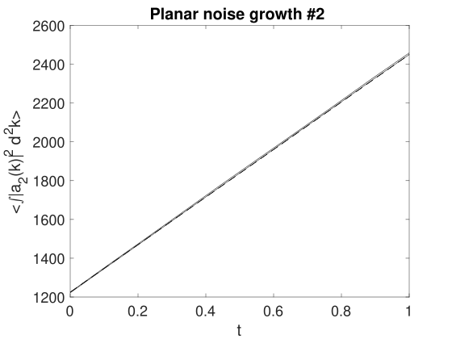
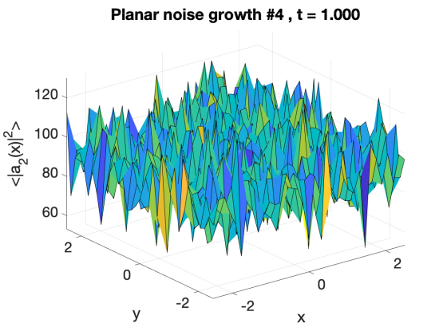
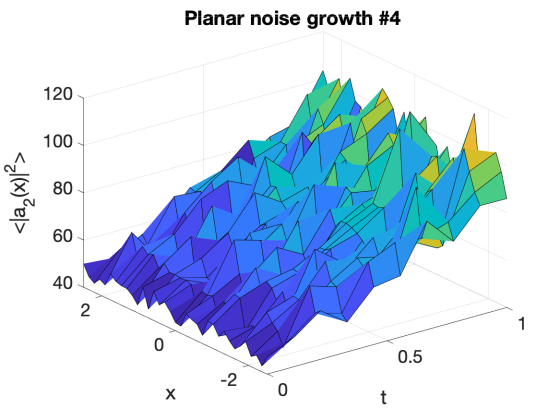
This solves a (1+2)-dimensional PDE called the Gross-Pitaevski equation. In addition to the standard GPE terms, it includes tbe vortex forming term \(\left (\mathbf {x}\times \nabla \right )a\). There is just one ensemble member, to demonstrate how a single trajectory can be imaged. The equation is:
Here,\(\left \Vert \cdot \right \Vert \) is the normalized derivative and \(\times \) indicates the two-dimensional cross-product. The system is initialized as
This is a deterministic pde case
The \(15\) intermediate steps used are necessary to reduce integration errors
The trap potential is an inline function, and is not a parameter
Normalisation is used because otherwise particle number is not conserved
The output includes transverse images to show how the vortices develop
Different imagetypes are used to show different 3D features
% e = GPEvortex2D() tests xSPDE for a lattice of superfluid vortices
% Tests a 2D GPE with vortices plus rotation
%%%%%%%%%%%%%%%%%%%%%%%%%%%%%%%%%%%%%%%%%%%%%%%%%%%%%%%%%%%%%%%%%%
%
p.name = ’GPEvortex2D’;
p.dimensions = 3;
p.fields = 1;
p.points = [50,40,40];
p.ranges = [15,16,16];
p.steps = 15;
g = 200;
om = 0.6;
L = @(a,p) 1i*(p.x.*xd(a,p.Dy,p)-p.y.*xd(a,p.Dx,p));
V = @(p) 0.35*(p.x.^2+p.y.^2);
p.initial = @(v,p) 0.1*exp(-V(p));
rho = @(a) g*conj(a).*a;
p.deriv = @normda;
p.da1 = @(a,w,p) -a.*(V(p)+rho(a))+om*L(a,p);
p.linear = @(p) 0.5*(p.Dx.^2+p.Dy.^2);
p.observe{1} = @(a,p) a(1,:).*conj(a(1,:));
p.observe{2} = @(a,p) a(1,:).*conj(a(1,:));
p.images = {2,2};
p.imagetype = {1,2};
p.olabels = {’|a|^2’,’|a|^2’};
e = xspde(p);
function b = normda(a,w,p)
% b = NORMDA(a,z,r) is a normalized derivative
% Takes a derivative and returns a normalized step
b = a+p.da1(a,w,p)*p.dtr;
norm = sqrt(Int(abs(b).^2,p.dx,p));
b = (b./norm-a)/p.dtr;
end
end
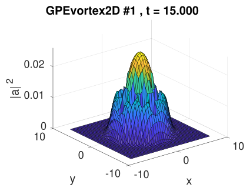
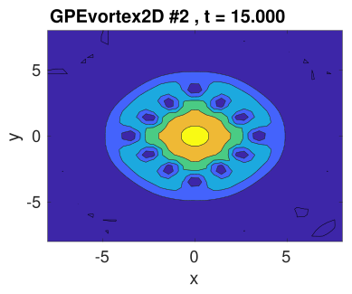
This very simple example solves a (1+1)-dimensional PDE with an initial condition of \(\mathbf {a}\left (t=0,x\right )=\mathbf {f}\left (x\right )\) and
The solution is subject to periodic boundary conditions or Dirichlet and/or Neumann with boundary values at zero, so that \(a\left (t,\pm x_{m}\right )=0\,\) or \(\partial a/\partial x\left (t,\pm x_{m}\right )=0\). Each component has different combinations of boundary types. Using spectral methods the solutions here are exact, up to round-off errors of order \(10^{-15}\), and are also much faster than with finite differences, which is demonstrated in the example.
In all cases the grid range is from \(x=0\) to \(x=\pi ,\) and the time duration is from \(t=0\) to \(t=4\). In the examples, the spectral propagation error is reduced by more than \(10^{10}\) and the time is reduced by a factor of \(20\) compared to the finite-difference methods. The periodic method has boundaries just outside the grid.
Dirichlet-Dirichlet Here \(a_{x}(0)=a_{x}(\pi )=0\), then the exact solution has the form: \begin {align} a & =\sum _{n=1}^{\infty }S_{n}\sin \left (nx\right )e^{-n^{2}t}. \end {align}
Suppose that \begin {equation} a(x,0)=4\sin \left (x\right )+\sin \left (2x\right ), \end {equation}
For this case: \begin {equation} a(x,t)=4\sin \left (x\right )e^{-t}+\sin \left (2x\right )e^{-4t}. \end {equation}
Neumann-Neumann with \(a(0)=a(\pi )=0\), then the exact solution has the form: \begin {align} a & =\sum _{n=0}^{\infty }C_{n}\cos \left (nx\right )e^{-n^{2}t}. \end {align}
Suppose that \begin {equation} a(x,0)=5+4\cos \left (x\right )+\cos \left (2x\right ), \end {equation}
For this case: \begin {equation} a(x,t)=5+4\cos \left (x\right )e^{-t}+\cos \left (2x\right )e^{-4t}. \end {equation}
Dirichlet-Neumann Here \(a(0)=a_{x}(\pi )=0\), then the exact solution has the form: \begin {align} a & =\sum _{n=1}^{\infty }S_{n}\sin \left ((2n-1)x/2\right )e^{-(2n-1)^{2}t/4}. \end {align}
Suppose that \begin {equation} a(x,0)=4\sin \left (x/2\right )+\sin \left (3x/2\right ), \end {equation}
For this case: \begin {equation} u(x,0)=4\sin \left (x/2\right )e^{-t/4}+\sin \left (3x/2\right )e^{-9t/4}. \end {equation}
Neumann-Dirichlet Here \(a_{x}(0)=a(\pi )=0\), then the general solution has the form: \begin {align} a & =\sum _{n=1}^{\infty }C_{n}\cos \left ((2n-1)x/2\right )e^{-(2n-1)^{2}t/4}. \end {align}
Suppose that \begin {equation} a(x,0)=4\cos \left (x/2\right )+\cos \left (3x/2\right ). \end {equation}
For this case: \begin {equation} a(x,t)=4\cos \left (x/2\right )e^{-t/4}+\cos \left (3x/2\right )e^{-9t/4}. \end {equation}
Periodic Here \(a(0)=a(\epsilon \pi )\), where \(\epsilon =N/\left (N-1\right )\) accounts for the periodic boundaries being outside the grid range, then the general solution has the form: \begin {align} a & =\sum _{n=1}^{\infty }S_{n}\sin \left (2nx\right )e^{-4n^{2}t/\epsilon ^{2}}\nonumber \\ & +\sum _{n=0}^{\infty }C_{n}\cos \left (2nx\right )e^{-4n^{2}t/\epsilon ^{2}}. \end {align}
Suppose that \begin {equation} a(x,0)=2+\cos \left (2x/\epsilon \right )+\sin \left (4x/\epsilon \right ). \end {equation}
For this case: \begin {equation} u(x,0)=2+2\cos \left (2x/\epsilon \right )e^{-4t/\epsilon ^{2}}+\sin \left (4x/\epsilon \right )e^{-16t/\epsilon ^{2}}. \end {equation}
This is another deterministic pde case, although noise can be added
Different boundary conditions apply to each component
Sequential integration is used, but the initial condition is just recycled.
In p1, the \(40\) intermediate steps are necessary to reduce finite-difference errors
p.dimensions = 2;
p.points = [51,51];
p.order = 0;
p.verbose = 1;
p.fields = 5;
p.ranges = [4,pi];
p.origins = [0,0];
p.initial = @heat_in;
p.observe = {@(a,p) a(1,:),@(a,p) a(2,:),@(a,p) a(3,:)...
@(a,p) a(4,:),@(a,p) a(5,:)};
p.compare = {@heat_1,@heat_2,@heat_3,@heat_4,@heat_5};
p.diffplot = {1,1,1,1,1};
p.olabels = {’a, DD’,’a, NN’,’a, DN’,’a, ND’,’a, PP’};
p.name = ’Heat test, spectral’;
p.boundaries{2}= [1,1;-1,-1;1,-1;-1,1;0,0];
p.linear = @(p) p.Dx.^2;
p1 = p;
p1.linear = @(p) [];
p1.deriv = @(a,w,p) D2(a,2,p);
p1.steps = 40;
p1.transfer = @(~,p,~,~) heat_in(0,p);
p1.name = ’Heat test, finite diffs’;
e = xspde({p,p1});
end
function a = heat_in(~,p)
a(1,:) = 4*sin(p.x)+sin(2*p.x);
a(2,:) = 5+4*cos(p.x)+cos(2*p.x);
a(3,:) = 4*sin(p.x/2)+sin(3*p.x/2);
a(4,:) = 4*cos(p.x/2)+cos(3*p.x/2);
a(5,:) = 2+cos(2*p.x/1.02)+sin(4*p.x/1.02);
end
function o = heat_1(p)
o = 4*sin(p.x).*exp(-p.t)+sin(2*p.x).*exp(-4*p.t);
end
function o = heat_2(p)
o = 5+4*cos(p.x).*exp(-p.t)+cos(2*p.x).*exp(-4*p.t);
end
function o = heat_3(p)
o = 4*sin(p.x/2).*exp(-p.t/4)+sin(3*p.x/2).*exp(-9*p.t/4);
end
function o = heat_4(p)
o = 4*cos(p.x/2).*exp(-p.t/4)+cos(3*p.x/2).*exp(-9*p.t/4);
end
function o = heat_5(p)
o = 2+cos(2*p.x/1.02).*exp(-4*p.t/1.02^2)+...
sin(4*p.x/1.02).*exp(-16*p.t/1.02^2);
end
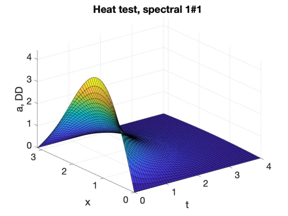
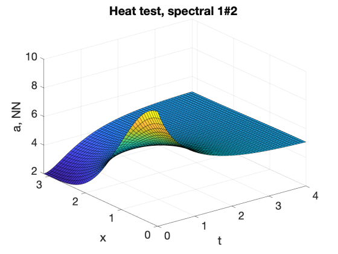
This solves an SDE with 3 field variables \(\mathbf {a}=\left (a_{1},a_{2},a_{3}\right )^{T}\). The Stratonovich diffusion equation is
where \(\mathcal {P}_{\mathbf {a}}^{\parallel }\left [\cdot \right ]\) indicates a projected onto the surface of a catenoid manifold defined by
The initial condition is given by \(\mathbf {a}\left (o\right )=\left (1,0,0\right )^{T}\). Here \(\mathbf {w}=\left (w_{1},w_{2},w_{3}\right )^{T}\) consists of 3 independent noise variables
This is a projected sde case
The Euclidean distance from the initial point is computed
This is compared with the predicted analytic value \(\left \langle R^{2}\right \rangle =2t\).
% e = CATENOID() simulates catenoid diffusion.
%%%%%%%%%%%%%%%%%%%%%%%%%%%%%%%%%%%%%%%%%%%%%%%%%%%%%%%%%%%%%%%%%%
%
p.name = ’3D Catenoid diffusion’;
p.iterproj = 3;
p.X0 = [1,0,0]’;
p.fields = 3;
p.ranges = 5;
p.points = 51;
p.ensembles = [400, 10];
p.compare{2} = @(p) 2*p.t;
p.deriv = @(a, w, p) w;
p.initial = @(w, p) p.X0;
p.observe{2} = @(a, p) sum((p.X0-a).^2,1);
p.diffplot{2} = 1;
p.function{1} = @(o, p) o{2}.^2;
p.olabels = {’\langle R^2 \rangle^2’,’\langle R^2 \rangle’};
p.project = @Catproj;
p.method = @MPnproj;
e = xspde(p);
end
[1] Simon Kiesewetter, Rodney Polkinghorne, Bogdan Opanchuk, and Peter D Drummond. xspde: Extensible software for stochastic equations. SoftwareX, 5:12–15, 2016.
[2] Paul Langevin. Sur la théorie du mouvement brownien. C. R. Acad. Sci. (Paris), 146:530–533, 1908.
[3] Ioannis Karatzas and Steven Shreve. Brownian motion and stochastic calculus. Springer, 2nd edition, 1991.
[4] C W Gardiner. Handbook of stochastic methods(for physics, chemistry and the natural sciences). Springer-Verlag, Berlin, 2004.
[5] Paul Glasserman. Monte Carlo Methods in Financial Engineering. Springer, reprint edition, 2010.
[6] Peter D. Drummond and M. Hillery. The Quantum Theory of Nonlinear Optics. Cambridge University Press, Cambridge, 2014.
[7] Peter D. Drummond and I. K. Mortimer. J. Comp. Phys., 93:144–170, 1991.
[8] Peter E. Kloeden and Eckhard Platen. Numerical Solution of Stochastic Differential Equations. Springer-Verlag, Berlin, 1992.
[9] M. J. Werner and Peter D. Drummond. Robust Algorithms for Solving Stochastic Partial Differential Equations. J. Comput. Phys., 132(2):312–326, 1997.
[10] Kevin Burrage, Pamela Burrage, Desmond J Higham, Peter E Kloeden, and Eckhard Platen. Comment on “numerical methods for stochastic differential equations”. Physical Review E, 74(6):068701, 2006.
[11] Ludwig Arnold. Stochastic differential equations: theory and applications. Folens Publishers, reprint edition, 1992.
[12] Hannes Risken. The Fokker-Planck Equation. Springer-Verlag, Berlin, 2nd edition, 1996.
[13] Crispin Gardiner and Peter Zoller. Quantum noise: a handbook of Markovian and non-Markovian quantum stochastic methods with applications to quantum optics. Springer Science & Business Media, 2004.
[14] Jeremy Quastel and Herbert Spohn. The one-dimensional kpz equation and its universality class. Journal of Statistical Physics, 160(4):965–984, 2015.
[15] Chi-Hang Lam and Franklin G Shin. Improved discretization of the kardar-parisi-zhang equation. Physical Review E, 58(5):5592, 1998.
[16] John Crank and Phyllis Nicolson. A practical method for numerical evaluation of solutions of partial differential equations of the heat-conduction type. In Mathematical proceedings of the Cambridge philosophical society, volume 43, pages 50–67. Cambridge University Press, 1947.